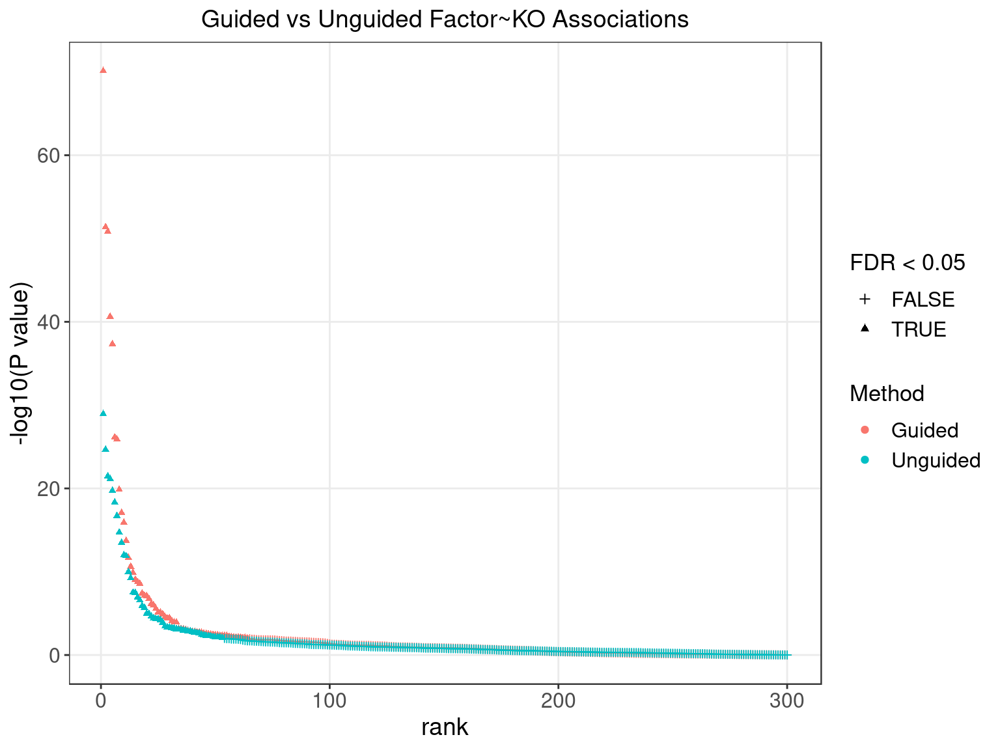
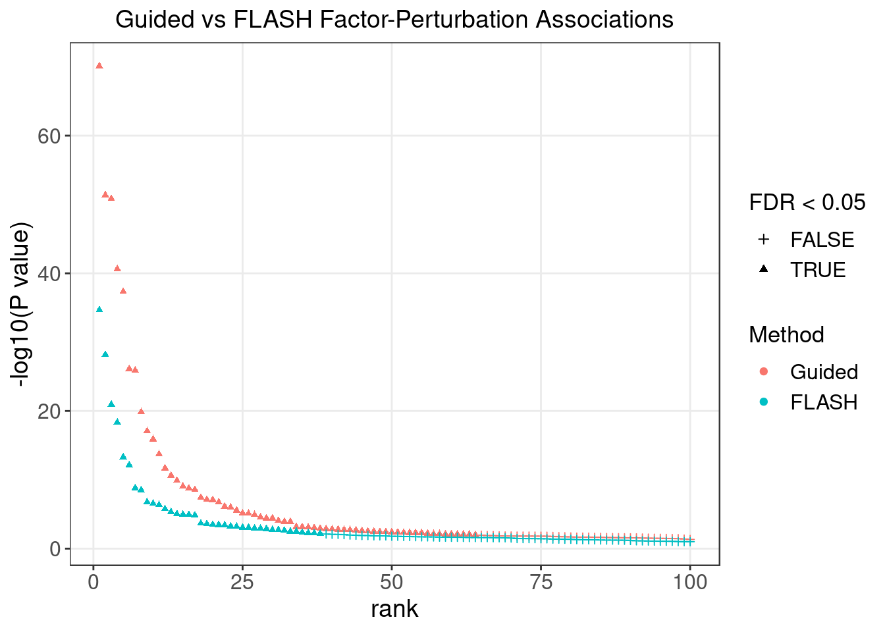

Guided Factor Analysis on LUHMES CROP-seq Data
– NTC included, unique UMI count corrected
Yifan Zhou (zhouyf@uchicago.edu)
2021-01-14
1 Single cell expression data
Source:
High-throughput single-cell functional elucidation of neurodevelopmental disease-associated genes reveals convergent mechanisms altering neuronal differentiation, GEO accession: GSE142078.
Perturbations:
CRISPR knock-down of 14 autism spectrum disorder (ASD)–associated genes (3 gRNAs per gene) + 5 non-targeting gRNAs.
Cells:
Lund human mesencephalic (LUHMES) neural progenitor cell line.
Cells from 3 batches were merged together into 1 analysis. All cells have only a single type of gRNA readout. Quality control resulted in 8708 cells.
Genes:
Only genes detected in > 10% of cells were kept, resulted in 6213 genes.
Normalization:
Seurat “LogNormalize”: log(count per 10K + 1).
Batch effect, unique UMI count, library size, and mitochondria percentage were all corrected for. The corrected and scaled expression data were used as input for subsequent factor analysis.
2 Guided results
Here, our “guide”, \(G\) matrix, consists of 15 types (14 genes + NTC) of KO conditions across cells.
In each case, Gibbs sampling was conducted for 2000 iterations, and the posterior mean estimates were averaged over the last 500 iterations.
2.1 SVD Initialization
2.1.1 Local False Sign Rate (LFSR)
For a given GSFA inference result, we can estimate the effect a certain KO condition \(m\) has on the expression of gene \(j\) by computing the LFSR of \(\beta_{m\cdot} \cdot W_{j\cdot}\).
| KO | ADNP | ARID1B | ASH1L | CHD2 | CHD8 |
| Num_genes | 2092 | 434 | 789 | 1938 | 0 |
| KO | CTNND2 | DYRK1A | HDAC5 | MECP2 | MYT1L |
| Num_genes | 0 | 0 | 0 | 0 | 0 |
| KO | Nontargeting | POGZ | PTEN | RELN | SETD5 |
| Num_genes | 0 | 0 | 2099 | 0 | 987 |
2.1.2 Factor ~ KO Beta PIP

2.1.3 Factor ~ KO Posterior Association

2.1.4 Beta PIP vs P-Value

2.1.5 Correlation btw Factors

2.2 Alternative Initializations and Chain Convergence
Other than initializing GSFA using truncated SVD, we also tried 2 runs with random initialization.
2.2.1 Association results for 2 randomly initialized GSFA runs
2.2.2 Chain mixing and convergence evaluation
2.2.3 Difference btw methods in factor estimation
For a pair of \(Z\) estimations from 2 inference methods, \(Z_1, Z_2\), we quantify the pairwise estimation difference as \(||Z_1Z_1^T - Z_2Z_2^T||_1/N^2\), where \(N\) is the number of rows (samples) in \(Z\).
3 Unguided Result
In contrast to the guided version, here we provide no guidance (\(G = \vec{0}\)) to our sparse factor analysis model to serve as a comparison.
3.1 Factor ~ KO Beta PIP

3.2 Factor ~ KO Posterior Association


3.3 Unguided vs Guided

4 FLASH
4.1 Factor ~ KO Posterior Association


4.2 FLASH vs GSFA

We matched the factors obtained from GFSA with those from FLASH, and conducted pairwise comparisons for both factors and gene loadings.
In the following heatmaps, factors are labeled by the KO condition(s) that they have an association p-value < 1e-4 with.


5 Gene Ontology Enrichment Analysis
Target: Genes w/ non-zero loadings in each factor;
Backgroud: all 6213 genes used in factor analysis;
Statistical test: hypergeometric test.
GO category: Biological Process.
5.1 PIP cutoff at 0.95
GO terms that passed over-representation test fold change \(\geq\) 2 and q value \(<\) 0.05:
| ID | Description | GeneRatio | BgRatio | FoldChange | pvalue | qvalue | GS_size |
|---|---|---|---|---|---|---|---|
| GO:0006614 | SRP-dependent cotranslational protein targeting to membrane | 78/244 | 91/5545 | 19.50 | 3.28e-97 | 7.77e-94 | 91 |
| GO:0006613 | cotranslational protein targeting to membrane | 79/244 | 95/5545 | 18.90 | 2.63e-96 | 3.11e-93 | 95 |
| GO:0045047 | protein targeting to ER | 79/244 | 102/5545 | 17.60 | 1.60e-91 | 1.26e-88 | 102 |
| GO:0072599 | establishment of protein localization to endoplasmic reticulum | 79/244 | 106/5545 | 16.90 | 4.01e-89 | 2.37e-86 | 106 |
| GO:0000184 | nuclear-transcribed mRNA catabolic process, nonsense-mediated decay | 79/244 | 109/5545 | 16.50 | 1.89e-87 | 8.96e-85 | 109 |
| GO:0070972 | protein localization to endoplasmic reticulum | 82/244 | 123/5545 | 15.20 | 4.69e-86 | 1.85e-83 | 123 |
| GO:0006413 | translational initiation | 89/244 | 160/5545 | 12.60 | 1.63e-83 | 5.49e-81 | 160 |
| GO:0006612 | protein targeting to membrane | 79/244 | 137/5545 | 13.10 | 3.16e-75 | 9.34e-73 | 137 |
| GO:0000956 | nuclear-transcribed mRNA catabolic process | 82/244 | 167/5545 | 11.20 | 1.84e-70 | 4.83e-68 | 167 |
| GO:0090150 | establishment of protein localization to membrane | 82/244 | 206/5545 | 9.05 | 3.93e-61 | 9.29e-59 | 206 |
| GO:0006402 | mRNA catabolic process | 85/244 | 227/5545 | 8.51 | 6.82e-61 | 1.47e-58 | 227 |
| GO:0006401 | RNA catabolic process | 86/244 | 243/5545 | 8.04 | 3.11e-59 | 6.13e-57 | 243 |
| GO:0034655 | nucleobase-containing compound catabolic process | 90/244 | 333/5545 | 6.14 | 1.12e-50 | 2.04e-48 | 333 |
| GO:0046700 | heterocycle catabolic process | 90/244 | 340/5545 | 6.02 | 8.00e-50 | 1.35e-47 | 340 |
| GO:0044270 | cellular nitrogen compound catabolic process | 90/244 | 341/5545 | 6.00 | 1.05e-49 | 1.66e-47 | 341 |
| GO:0006605 | protein targeting | 81/244 | 270/5545 | 6.82 | 5.03e-49 | 7.43e-47 | 270 |
| GO:0019439 | aromatic compound catabolic process | 90/244 | 347/5545 | 5.89 | 5.43e-49 | 7.56e-47 | 347 |
| GO:1901361 | organic cyclic compound catabolic process | 90/244 | 351/5545 | 5.83 | 1.59e-48 | 2.09e-46 | 351 |
| GO:0006412 | translation | 99/244 | 438/5545 | 5.14 | 1.73e-48 | 2.16e-46 | 438 |
| GO:0043043 | peptide biosynthetic process | 99/244 | 446/5545 | 5.04 | 1.05e-47 | 1.24e-45 | 446 |
| GO:0072657 | protein localization to membrane | 85/244 | 322/5545 | 6.00 | 1.18e-46 | 1.33e-44 | 322 |
| GO:0006518 | peptide metabolic process | 102/244 | 499/5545 | 4.65 | 9.19e-46 | 9.88e-44 | 499 |
| GO:0043604 | amide biosynthetic process | 101/244 | 497/5545 | 4.62 | 5.45e-45 | 5.61e-43 | 497 |
| GO:0072594 | establishment of protein localization to organelle | 84/244 | 347/5545 | 5.50 | 8.50e-43 | 8.38e-41 | 347 |
| GO:0002181 | cytoplasmic translation | 39/244 | 74/5545 | 12.00 | 2.47e-34 | 2.33e-32 | 74 |
| GO:0022613 | ribonucleoprotein complex biogenesis | 52/244 | 335/5545 | 3.53 | 1.61e-16 | 1.47e-14 | 335 |
| GO:0042255 | ribosome assembly | 20/244 | 49/5545 | 9.28 | 3.10e-15 | 2.72e-13 | 49 |
| GO:0042254 | ribosome biogenesis | 38/244 | 208/5545 | 4.15 | 1.63e-14 | 1.38e-12 | 208 |
| GO:0071826 | ribonucleoprotein complex subunit organization | 35/244 | 187/5545 | 4.25 | 9.39e-14 | 7.66e-12 | 187 |
| GO:0022618 | ribonucleoprotein complex assembly | 34/244 | 181/5545 | 4.27 | 1.97e-13 | 1.55e-11 | 181 |
| GO:0042273 | ribosomal large subunit biogenesis | 19/244 | 60/5545 | 7.20 | 3.42e-12 | 2.61e-10 | 60 |
| GO:0042274 | ribosomal small subunit biogenesis | 17/244 | 50/5545 | 7.73 | 1.34e-11 | 9.94e-10 | 50 |
| GO:0006364 | rRNA processing | 27/244 | 153/5545 | 4.01 | 3.25e-10 | 2.33e-08 | 153 |
| GO:0000027 | ribosomal large subunit assembly | 11/244 | 24/5545 | 10.40 | 1.44e-09 | 1.00e-07 | 24 |
| GO:0016072 | rRNA metabolic process | 28/244 | 176/5545 | 3.62 | 1.79e-09 | 1.21e-07 | 176 |
| GO:0000028 | ribosomal small subunit assembly | 9/244 | 15/5545 | 13.60 | 2.12e-09 | 1.40e-07 | 15 |
| GO:1902600 | proton transmembrane transport | 17/244 | 76/5545 | 5.08 | 1.86e-08 | 1.19e-06 | 76 |
| GO:0002183 | cytoplasmic translational initiation | 10/244 | 26/5545 | 8.74 | 6.46e-08 | 4.03e-06 | 26 |
| GO:0001732 | formation of cytoplasmic translation initiation complex | 7/244 | 12/5545 | 13.30 | 1.92e-07 | 1.17e-05 | 12 |
| GO:0006119 | oxidative phosphorylation | 18/244 | 105/5545 | 3.90 | 5.29e-07 | 3.13e-05 | 105 |
| GO:0034470 | ncRNA processing | 28/244 | 237/5545 | 2.68 | 1.24e-06 | 7.16e-05 | 237 |
| GO:0042775 | mitochondrial ATP synthesis coupled electron transport | 14/244 | 75/5545 | 4.24 | 3.56e-06 | 2.01e-04 | 75 |
| GO:0042773 | ATP synthesis coupled electron transport | 14/244 | 76/5545 | 4.19 | 4.20e-06 | 2.31e-04 | 76 |
| GO:0010608 | posttranscriptional regulation of gene expression | 31/244 | 298/5545 | 2.36 | 5.06e-06 | 2.72e-04 | 298 |
| GO:0046034 | ATP metabolic process | 21/244 | 165/5545 | 2.89 | 9.04e-06 | 4.75e-04 | 165 |
| GO:0022904 | respiratory electron transport chain | 14/244 | 82/5545 | 3.88 | 1.06e-05 | 5.45e-04 | 82 |
| GO:0051444 | negative regulation of ubiquitin-protein transferase activity | 5/244 | 10/5545 | 11.40 | 3.33e-05 | 1.68e-03 | 10 |
| GO:0009205 | purine ribonucleoside triphosphate metabolic process | 21/244 | 180/5545 | 2.65 | 3.48e-05 | 1.71e-03 | 180 |
| GO:0006417 | regulation of translation | 23/244 | 209/5545 | 2.50 | 3.76e-05 | 1.82e-03 | 209 |
| GO:0009199 | ribonucleoside triphosphate metabolic process | 21/244 | 182/5545 | 2.62 | 4.11e-05 | 1.94e-03 | 182 |
| GO:0009144 | purine nucleoside triphosphate metabolic process | 21/244 | 184/5545 | 2.59 | 4.84e-05 | 2.25e-03 | 184 |
| GO:0009126 | purine nucleoside monophosphate metabolic process | 21/244 | 185/5545 | 2.58 | 5.25e-05 | 2.34e-03 | 185 |
| GO:0009167 | purine ribonucleoside monophosphate metabolic process | 21/244 | 185/5545 | 2.58 | 5.25e-05 | 2.34e-03 | 185 |
| GO:0015672 | monovalent inorganic cation transport | 19/244 | 159/5545 | 2.72 | 5.97e-05 | 2.61e-03 | 159 |
| GO:0034248 | regulation of cellular amide metabolic process | 24/244 | 231/5545 | 2.36 | 6.51e-05 | 2.80e-03 | 231 |
| GO:0009161 | ribonucleoside monophosphate metabolic process | 21/244 | 190/5545 | 2.51 | 7.78e-05 | 3.29e-03 | 190 |
| GO:0034660 | ncRNA metabolic process | 31/244 | 343/5545 | 2.05 | 8.33e-05 | 3.46e-03 | 343 |
| GO:0009141 | nucleoside triphosphate metabolic process | 21/244 | 192/5545 | 2.49 | 9.07e-05 | 3.70e-03 | 192 |
| GO:0009123 | nucleoside monophosphate metabolic process | 21/244 | 199/5545 | 2.40 | 1.52e-04 | 6.09e-03 | 199 |
| GO:0098662 | inorganic cation transmembrane transport | 22/244 | 217/5545 | 2.30 | 1.90e-04 | 7.49e-03 | 217 |
| GO:0051438 | regulation of ubiquitin-protein transferase activity | 7/244 | 29/5545 | 5.49 | 1.99e-04 | 7.72e-03 | 29 |
| GO:0009060 | aerobic respiration | 10/244 | 59/5545 | 3.85 | 2.12e-04 | 7.96e-03 | 59 |
| GO:0015988 | energy coupled proton transmembrane transport, against electrochemical gradient | 6/244 | 21/5545 | 6.49 | 2.12e-04 | 7.96e-03 | 21 |
| GO:0022900 | electron transport chain | 15/244 | 120/5545 | 2.84 | 2.19e-04 | 8.11e-03 | 120 |
| GO:0098660 | inorganic ion transmembrane transport | 22/244 | 227/5545 | 2.20 | 3.62e-04 | 1.32e-02 | 227 |
| GO:0045333 | cellular respiration | 15/244 | 126/5545 | 2.71 | 3.77e-04 | 1.33e-02 | 126 |
| GO:0030490 | maturation of SSU-rRNA | 7/244 | 32/5545 | 4.97 | 3.83e-04 | 1.33e-02 | 32 |
| GO:2001244 | positive regulation of intrinsic apoptotic signaling pathway | 7/244 | 32/5545 | 4.97 | 3.83e-04 | 1.33e-02 | 32 |
| GO:0009636 | response to toxic substance | 18/244 | 171/5545 | 2.39 | 4.67e-04 | 1.59e-02 | 171 |
| GO:0000462 | maturation of SSU-rRNA from tricistronic rRNA transcript (SSU-rRNA, 5.8S rRNA, LSU-rRNA) | 6/244 | 24/5545 | 5.68 | 4.71e-04 | 1.59e-02 | 24 |
| GO:0098655 | cation transmembrane transport | 22/244 | 235/5545 | 2.13 | 5.86e-04 | 1.95e-02 | 235 |
| GO:0019730 | antimicrobial humoral response | 4/244 | 11/5545 | 8.26 | 9.45e-04 | 3.06e-02 | 11 |
| GO:0031397 | negative regulation of protein ubiquitination | 7/244 | 39/5545 | 4.08 | 1.35e-03 | 4.19e-02 | 39 |
| GO:0015985 | energy coupled proton transport, down electrochemical gradient | 5/244 | 20/5545 | 5.68 | 1.43e-03 | 4.27e-02 | 20 |
| GO:0015986 | ATP synthesis coupled proton transport | 5/244 | 20/5545 | 5.68 | 1.43e-03 | 4.27e-02 | 20 |
| ID | Description | GeneRatio | BgRatio | FoldChange | pvalue | qvalue | GS_size |
|---|---|---|---|---|---|---|---|
| GO:0070202 | regulation of establishment of protein localization to chromosome | 10/2365 | 10/5545 | 2.34 | 0.000197 | 0.0105 | 10 |
| GO:0070203 | regulation of establishment of protein localization to telomere | 10/2365 | 10/5545 | 2.34 | 0.000197 | 0.0105 | 10 |
| GO:1904814 | regulation of protein localization to chromosome, telomeric region | 12/2365 | 13/5545 | 2.16 | 0.000282 | 0.0136 | 13 |
| GO:0007339 | binding of sperm to zona pellucida | 11/2365 | 12/5545 | 2.15 | 0.000614 | 0.0251 | 12 |
| GO:0035036 | sperm-egg recognition | 11/2365 | 12/5545 | 2.15 | 0.000614 | 0.0251 | 12 |
| GO:0070670 | response to interleukin-4 | 10/2365 | 11/5545 | 2.13 | 0.001329 | 0.0466 | 11 |
| GO:0071353 | cellular response to interleukin-4 | 10/2365 | 11/5545 | 2.13 | 0.001329 | 0.0466 | 11 |
| GO:1904816 | positive regulation of protein localization to chromosome, telomeric region | 10/2365 | 11/5545 | 2.13 | 0.001329 | 0.0466 | 11 |
| GO:1990173 | protein localization to nucleoplasm | 10/2365 | 11/5545 | 2.13 | 0.001329 | 0.0466 | 11 |
| ID | Description | GeneRatio | BgRatio | FoldChange | pvalue | qvalue | GS_size |
|---|---|---|---|---|---|---|---|
| GO:0006613 | cotranslational protein targeting to membrane | 65/1789 | 95/5545 | 2.12 | 3.60e-13 | 1.23e-09 | 95 |
| GO:0006614 | SRP-dependent cotranslational protein targeting to membrane | 61/1789 | 91/5545 | 2.08 | 7.75e-12 | 1.33e-08 | 91 |
| GO:0006120 | mitochondrial electron transport, NADH to ubiquinone | 31/1789 | 47/5545 | 2.04 | 2.04e-06 | 2.26e-04 | 47 |
| GO:0015872 | dopamine transport | 10/1789 | 11/5545 | 2.82 | 9.35e-05 | 6.55e-03 | 11 |
| GO:0015844 | monoamine transport | 13/1789 | 17/5545 | 2.37 | 2.31e-04 | 1.26e-02 | 17 |
| GO:2001023 | regulation of response to drug | 19/1789 | 29/5545 | 2.03 | 2.36e-04 | 1.26e-02 | 29 |
| GO:2000679 | positive regulation of transcription regulatory region DNA binding | 9/1789 | 10/5545 | 2.79 | 2.66e-04 | 1.40e-02 | 10 |
| GO:0051937 | catecholamine transport | 12/1789 | 16/5545 | 2.32 | 5.57e-04 | 2.60e-02 | 16 |
| GO:0050433 | regulation of catecholamine secretion | 9/1789 | 11/5545 | 2.54 | 1.04e-03 | 3.83e-02 | 11 |
| GO:0000028 | ribosomal small subunit assembly | 11/1789 | 15/5545 | 2.27 | 1.32e-03 | 4.47e-02 | 15 |
| GO:0099172 | presynapse organization | 11/1789 | 15/5545 | 2.27 | 1.32e-03 | 4.47e-02 | 15 |
| ID | Description | GeneRatio | BgRatio | FoldChange | pvalue | qvalue | GS_size |
|---|---|---|---|---|---|---|---|
| GO:0006614 | SRP-dependent cotranslational protein targeting to membrane | 58/1723 | 91/5545 | 2.05 | 1.02e-10 | 3.24e-07 | 91 |
| GO:0014855 | striated muscle cell proliferation | 10/1723 | 13/5545 | 2.48 | 8.78e-04 | 2.91e-02 | 13 |
| GO:0031295 | T cell costimulation | 11/1723 | 15/5545 | 2.36 | 9.23e-04 | 3.00e-02 | 15 |
| GO:0006595 | polyamine metabolic process | 8/1723 | 10/5545 | 2.57 | 2.03e-03 | 4.49e-02 | 10 |
| GO:0031294 | lymphocyte costimulation | 11/1723 | 16/5545 | 2.21 | 2.13e-03 | 4.59e-02 | 16 |
| GO:0006026 | aminoglycan catabolic process | 9/1723 | 12/5545 | 2.41 | 2.21e-03 | 4.59e-02 | 12 |
| GO:0006027 | glycosaminoglycan catabolic process | 9/1723 | 12/5545 | 2.41 | 2.21e-03 | 4.59e-02 | 12 |
| GO:0045956 | positive regulation of calcium ion-dependent exocytosis | 9/1723 | 12/5545 | 2.41 | 2.21e-03 | 4.59e-02 | 12 |
| ID | Description | GeneRatio | BgRatio | FoldChange | pvalue | qvalue | GS_size |
|---|---|---|---|---|---|---|---|
| GO:0045047 | protein targeting to ER | 62/1426 | 102/5545 | 2.36 | 4.83e-14 | 1.40e-10 | 102 |
| GO:0006614 | SRP-dependent cotranslational protein targeting to membrane | 57/1426 | 91/5545 | 2.44 | 8.13e-14 | 1.40e-10 | 91 |
| GO:0070972 | protein localization to endoplasmic reticulum | 69/1426 | 123/5545 | 2.18 | 4.60e-13 | 4.92e-10 | 123 |
| GO:0072599 | establishment of protein localization to endoplasmic reticulum | 62/1426 | 106/5545 | 2.27 | 5.72e-13 | 4.92e-10 | 106 |
| GO:0000184 | nuclear-transcribed mRNA catabolic process, nonsense-mediated decay | 63/1426 | 109/5545 | 2.25 | 7.85e-13 | 5.40e-10 | 109 |
| GO:0006613 | cotranslational protein targeting to membrane | 57/1426 | 95/5545 | 2.33 | 1.14e-12 | 6.51e-10 | 95 |
| GO:0042273 | ribosomal large subunit biogenesis | 38/1426 | 60/5545 | 2.46 | 7.73e-10 | 2.66e-07 | 60 |
| GO:0042775 | mitochondrial ATP synthesis coupled electron transport | 43/1426 | 75/5545 | 2.23 | 5.12e-09 | 1.35e-06 | 75 |
| GO:0006120 | mitochondrial electron transport, NADH to ubiquinone | 31/1426 | 47/5545 | 2.56 | 6.87e-09 | 1.58e-06 | 47 |
| GO:0042773 | ATP synthesis coupled electron transport | 43/1426 | 76/5545 | 2.20 | 8.90e-09 | 1.91e-06 | 76 |
| GO:0033108 | mitochondrial respiratory chain complex assembly | 46/1426 | 86/5545 | 2.08 | 2.94e-08 | 4.60e-06 | 86 |
| GO:0022904 | respiratory electron transport chain | 44/1426 | 82/5545 | 2.09 | 5.20e-08 | 7.46e-06 | 82 |
| GO:0010257 | NADH dehydrogenase complex assembly | 35/1426 | 60/5545 | 2.27 | 7.66e-08 | 1.01e-05 | 60 |
| GO:0032981 | mitochondrial respiratory chain complex I assembly | 35/1426 | 60/5545 | 2.27 | 7.66e-08 | 1.01e-05 | 60 |
| GO:0031960 | response to corticosteroid | 23/1426 | 40/5545 | 2.24 | 1.88e-05 | 1.24e-03 | 40 |
| GO:0007007 | inner mitochondrial membrane organization | 22/1426 | 39/5545 | 2.19 | 4.30e-05 | 2.64e-03 | 39 |
| GO:0090151 | establishment of protein localization to mitochondrial membrane | 11/1426 | 14/5545 | 3.06 | 5.17e-05 | 3.12e-03 | 14 |
| GO:0051384 | response to glucocorticoid | 21/1426 | 37/5545 | 2.21 | 5.67e-05 | 3.36e-03 | 37 |
| GO:0042274 | ribosomal small subunit biogenesis | 26/1426 | 50/5545 | 2.02 | 5.90e-05 | 3.44e-03 | 50 |
| GO:0000054 | ribosomal subunit export from nucleus | 11/1426 | 15/5545 | 2.85 | 1.49e-04 | 7.21e-03 | 15 |
| GO:0033750 | ribosome localization | 11/1426 | 15/5545 | 2.85 | 1.49e-04 | 7.21e-03 | 15 |
| GO:0000027 | ribosomal large subunit assembly | 15/1426 | 24/5545 | 2.43 | 1.52e-04 | 7.28e-03 | 24 |
| GO:0006361 | transcription initiation from RNA polymerase I promoter | 14/1426 | 22/5545 | 2.47 | 1.94e-04 | 8.64e-03 | 22 |
| GO:0001836 | release of cytochrome c from mitochondria | 18/1426 | 32/5545 | 2.19 | 2.26e-04 | 9.82e-03 | 32 |
| GO:0000470 | maturation of LSU-rRNA | 12/1426 | 18/5545 | 2.59 | 3.01e-04 | 1.25e-02 | 18 |
| GO:0010665 | regulation of cardiac muscle cell apoptotic process | 9/1426 | 12/5545 | 2.92 | 4.86e-04 | 1.90e-02 | 12 |
| GO:0000055 | ribosomal large subunit export from nucleus | 8/1426 | 10/5545 | 3.11 | 5.07e-04 | 1.94e-02 | 10 |
| GO:0015991 | ATP hydrolysis coupled proton transport | 11/1426 | 17/5545 | 2.52 | 7.96e-04 | 2.91e-02 | 17 |
| GO:0071428 | rRNA-containing ribonucleoprotein complex export from nucleus | 11/1426 | 17/5545 | 2.52 | 7.96e-04 | 2.91e-02 | 17 |
| GO:0090662 | ATP hydrolysis coupled transmembrane transport | 11/1426 | 17/5545 | 2.52 | 7.96e-04 | 2.91e-02 | 17 |
| GO:0099131 | ATP hydrolysis coupled ion transmembrane transport | 11/1426 | 17/5545 | 2.52 | 7.96e-04 | 2.91e-02 | 17 |
| GO:0015985 | energy coupled proton transport, down electrochemical gradient | 12/1426 | 20/5545 | 2.33 | 1.20e-03 | 4.14e-02 | 20 |
| GO:0015986 | ATP synthesis coupled proton transport | 12/1426 | 20/5545 | 2.33 | 1.20e-03 | 4.14e-02 | 20 |
| GO:0010659 | cardiac muscle cell apoptotic process | 9/1426 | 13/5545 | 2.69 | 1.22e-03 | 4.14e-02 | 13 |
| GO:0010662 | regulation of striated muscle cell apoptotic process | 9/1426 | 13/5545 | 2.69 | 1.22e-03 | 4.14e-02 | 13 |
| GO:0010656 | negative regulation of muscle cell apoptotic process | 8/1426 | 11/5545 | 2.83 | 1.44e-03 | 4.80e-02 | 11 |
| GO:0006879 | cellular iron ion homeostasis | 15/1426 | 28/5545 | 2.08 | 1.49e-03 | 4.87e-02 | 28 |
| ID | Description | GeneRatio | BgRatio | FoldChange | pvalue | qvalue | GS_size |
|---|---|---|---|---|---|---|---|
| GO:0006613 | cotranslational protein targeting to membrane | 85/1406 | 95/5545 | 3.53 | 2.09e-40 | 7.11e-37 | 95 |
| GO:0006614 | SRP-dependent cotranslational protein targeting to membrane | 82/1406 | 91/5545 | 3.55 | 1.49e-39 | 2.54e-36 | 91 |
| GO:0045047 | protein targeting to ER | 86/1406 | 102/5545 | 3.33 | 1.84e-36 | 2.09e-33 | 102 |
| GO:0070972 | protein localization to endoplasmic reticulum | 95/1406 | 123/5545 | 3.05 | 3.99e-34 | 3.40e-31 | 123 |
| GO:0072599 | establishment of protein localization to endoplasmic reticulum | 86/1406 | 106/5545 | 3.20 | 6.30e-34 | 4.29e-31 | 106 |
| GO:0000184 | nuclear-transcribed mRNA catabolic process, nonsense-mediated decay | 87/1406 | 109/5545 | 3.15 | 2.77e-33 | 1.57e-30 | 109 |
| GO:0000956 | nuclear-transcribed mRNA catabolic process | 108/1406 | 167/5545 | 2.55 | 1.68e-27 | 8.20e-25 | 167 |
| GO:0006413 | translational initiation | 103/1406 | 160/5545 | 2.54 | 5.11e-26 | 2.18e-23 | 160 |
| GO:0006612 | protein targeting to membrane | 89/1406 | 137/5545 | 2.56 | 5.22e-23 | 1.98e-20 | 137 |
| GO:0006402 | mRNA catabolic process | 125/1406 | 227/5545 | 2.17 | 1.82e-22 | 6.21e-20 | 227 |
| GO:0006401 | RNA catabolic process | 129/1406 | 243/5545 | 2.09 | 2.96e-21 | 9.15e-19 | 243 |
| GO:0090150 | establishment of protein localization to membrane | 113/1406 | 206/5545 | 2.16 | 3.39e-20 | 9.61e-18 | 206 |
| GO:0002181 | cytoplasmic translation | 45/1406 | 74/5545 | 2.40 | 9.05e-11 | 1.23e-08 | 74 |
| GO:0022900 | electron transport chain | 63/1406 | 120/5545 | 2.07 | 1.17e-10 | 1.54e-08 | 120 |
| GO:0006119 | oxidative phosphorylation | 57/1406 | 105/5545 | 2.14 | 1.65e-10 | 2.08e-08 | 105 |
| GO:0042775 | mitochondrial ATP synthesis coupled electron transport | 43/1406 | 75/5545 | 2.26 | 3.21e-09 | 3.42e-07 | 75 |
| GO:0042773 | ATP synthesis coupled electron transport | 43/1406 | 76/5545 | 2.23 | 5.61e-09 | 5.62e-07 | 76 |
| GO:0022904 | respiratory electron transport chain | 45/1406 | 82/5545 | 2.16 | 9.11e-09 | 8.86e-07 | 82 |
| GO:1902600 | proton transmembrane transport | 42/1406 | 76/5545 | 2.18 | 2.17e-08 | 2.00e-06 | 76 |
| GO:0033108 | mitochondrial respiratory chain complex assembly | 45/1406 | 86/5545 | 2.06 | 6.31e-08 | 5.37e-06 | 86 |
| GO:0010257 | NADH dehydrogenase complex assembly | 32/1406 | 60/5545 | 2.10 | 2.99e-06 | 1.96e-04 | 60 |
| GO:0032981 | mitochondrial respiratory chain complex I assembly | 32/1406 | 60/5545 | 2.10 | 2.99e-06 | 1.96e-04 | 60 |
| GO:0015985 | energy coupled proton transport, down electrochemical gradient | 15/1406 | 20/5545 | 2.96 | 4.41e-06 | 2.67e-04 | 20 |
| GO:0015986 | ATP synthesis coupled proton transport | 15/1406 | 20/5545 | 2.96 | 4.41e-06 | 2.67e-04 | 20 |
| GO:0006122 | mitochondrial electron transport, ubiquinol to cytochrome c | 11/1406 | 13/5545 | 3.34 | 1.25e-05 | 7.09e-04 | 13 |
| GO:0042776 | mitochondrial ATP synthesis coupled proton transport | 13/1406 | 17/5545 | 3.02 | 1.41e-05 | 7.89e-04 | 17 |
| GO:0051101 | regulation of DNA binding | 30/1406 | 59/5545 | 2.01 | 2.12e-05 | 1.11e-03 | 59 |
| GO:0051385 | response to mineralocorticoid | 9/1406 | 10/5545 | 3.55 | 3.29e-05 | 1.58e-03 | 10 |
| GO:0006120 | mitochondrial electron transport, NADH to ubiquinone | 25/1406 | 47/5545 | 2.10 | 3.86e-05 | 1.82e-03 | 47 |
| GO:0010499 | proteasomal ubiquitin-independent protein catabolic process | 13/1406 | 18/5545 | 2.85 | 3.90e-05 | 1.82e-03 | 18 |
| GO:0048660 | regulation of smooth muscle cell proliferation | 19/1406 | 32/5545 | 2.34 | 4.45e-05 | 2.05e-03 | 32 |
| GO:0006370 | 7-methylguanosine mRNA capping | 16/1406 | 25/5545 | 2.52 | 4.98e-05 | 2.26e-03 | 25 |
| GO:0048659 | smooth muscle cell proliferation | 19/1406 | 33/5545 | 2.27 | 8.01e-05 | 3.50e-03 | 33 |
| GO:0042255 | ribosome assembly | 25/1406 | 49/5545 | 2.01 | 9.54e-05 | 4.06e-03 | 49 |
| GO:0009452 | 7-methylguanosine RNA capping | 16/1406 | 26/5545 | 2.43 | 9.92e-05 | 4.12e-03 | 26 |
| GO:0036260 | RNA capping | 16/1406 | 26/5545 | 2.43 | 9.92e-05 | 4.12e-03 | 26 |
| GO:0007007 | inner mitochondrial membrane organization | 21/1406 | 39/5545 | 2.12 | 1.28e-04 | 5.23e-03 | 39 |
| GO:0071392 | cellular response to estradiol stimulus | 10/1406 | 13/5545 | 3.03 | 1.41e-04 | 5.64e-03 | 13 |
| GO:1904874 | positive regulation of telomerase RNA localization to Cajal body | 10/1406 | 13/5545 | 3.03 | 1.41e-04 | 5.64e-03 | 13 |
| GO:0030970 | retrograde protein transport, ER to cytosol | 13/1406 | 21/5545 | 2.44 | 4.21e-04 | 1.45e-02 | 21 |
| GO:1903513 | endoplasmic reticulum to cytosol transport | 13/1406 | 21/5545 | 2.44 | 4.21e-04 | 1.45e-02 | 21 |
| GO:0042407 | cristae formation | 16/1406 | 29/5545 | 2.18 | 5.70e-04 | 1.82e-02 | 29 |
| GO:0002576 | platelet degranulation | 19/1406 | 37/5545 | 2.03 | 5.91e-04 | 1.85e-02 | 37 |
| GO:0042026 | protein refolding | 11/1406 | 17/5545 | 2.55 | 6.98e-04 | 2.14e-02 | 17 |
| GO:0017004 | cytochrome complex assembly | 15/1406 | 27/5545 | 2.19 | 7.69e-04 | 2.28e-02 | 27 |
| GO:2000677 | regulation of transcription regulatory region DNA binding | 13/1406 | 22/5545 | 2.33 | 7.91e-04 | 2.30e-02 | 22 |
| GO:0070671 | response to interleukin-12 | 16/1406 | 30/5545 | 2.10 | 9.37e-04 | 2.66e-02 | 30 |
| GO:0071349 | cellular response to interleukin-12 | 16/1406 | 30/5545 | 2.10 | 9.37e-04 | 2.66e-02 | 30 |
| GO:0060314 | regulation of ryanodine-sensitive calcium-release channel activity | 9/1406 | 13/5545 | 2.73 | 1.09e-03 | 3.00e-02 | 13 |
| GO:0099132 | ATP hydrolysis coupled cation transmembrane transport | 17/1406 | 33/5545 | 2.03 | 1.09e-03 | 3.00e-02 | 33 |
| GO:0034975 | protein folding in endoplasmic reticulum | 8/1406 | 11/5545 | 2.87 | 1.30e-03 | 3.33e-02 | 11 |
| GO:1990173 | protein localization to nucleoplasm | 8/1406 | 11/5545 | 2.87 | 1.30e-03 | 3.33e-02 | 11 |
| GO:0033617 | mitochondrial respiratory chain complex IV assembly | 10/1406 | 16/5545 | 2.46 | 1.82e-03 | 4.34e-02 | 16 |
| GO:0090670 | RNA localization to Cajal body | 10/1406 | 16/5545 | 2.46 | 1.82e-03 | 4.34e-02 | 16 |
| GO:0090671 | telomerase RNA localization to Cajal body | 10/1406 | 16/5545 | 2.46 | 1.82e-03 | 4.34e-02 | 16 |
| GO:0090672 | telomerase RNA localization | 10/1406 | 16/5545 | 2.46 | 1.82e-03 | 4.34e-02 | 16 |
| GO:0090685 | RNA localization to nucleus | 10/1406 | 16/5545 | 2.46 | 1.82e-03 | 4.34e-02 | 16 |
| GO:1904872 | regulation of telomerase RNA localization to Cajal body | 10/1406 | 16/5545 | 2.46 | 1.82e-03 | 4.34e-02 | 16 |
| GO:0015988 | energy coupled proton transmembrane transport, against electrochemical gradient | 12/1406 | 21/5545 | 2.25 | 1.89e-03 | 4.43e-02 | 21 |
| GO:0035722 | interleukin-12-mediated signaling pathway | 15/1406 | 29/5545 | 2.04 | 2.02e-03 | 4.60e-02 | 29 |
| GO:0043388 | positive regulation of DNA binding | 15/1406 | 29/5545 | 2.04 | 2.02e-03 | 4.60e-02 | 29 |
| ID | Description | GeneRatio | BgRatio | FoldChange | pvalue | qvalue | GS_size |
|---|---|---|---|---|---|---|---|
| GO:0006614 | SRP-dependent cotranslational protein targeting to membrane | 30/607 | 91/5545 | 3.01 | 1.17e-08 | 3.65e-05 | 91 |
| GO:0006613 | cotranslational protein targeting to membrane | 30/607 | 95/5545 | 2.88 | 3.58e-08 | 5.59e-05 | 95 |
| GO:0000184 | nuclear-transcribed mRNA catabolic process, nonsense-mediated decay | 32/607 | 109/5545 | 2.68 | 8.70e-08 | 9.07e-05 | 109 |
| GO:0045047 | protein targeting to ER | 30/607 | 102/5545 | 2.69 | 2.12e-07 | 1.66e-04 | 102 |
| GO:0072599 | establishment of protein localization to endoplasmic reticulum | 30/607 | 106/5545 | 2.59 | 5.35e-07 | 2.94e-04 | 106 |
| GO:0070972 | protein localization to endoplasmic reticulum | 33/607 | 123/5545 | 2.45 | 5.64e-07 | 2.94e-04 | 123 |
| GO:0006612 | protein targeting to membrane | 34/607 | 137/5545 | 2.27 | 2.67e-06 | 1.19e-03 | 137 |
| GO:0044057 | regulation of system process | 30/607 | 137/5545 | 2.00 | 1.31e-04 | 3.94e-02 | 137 |
| GO:0010038 | response to metal ion | 27/607 | 120/5545 | 2.06 | 1.76e-04 | 4.59e-02 | 120 |
| ID | Description | GeneRatio | BgRatio | FoldChange | pvalue | qvalue | GS_size |
|---|---|---|---|---|---|---|---|
| GO:0016126 | sterol biosynthetic process | 23/772 | 45/5545 | 3.67 | 2.93e-09 | 5.67e-06 | 45 |
| GO:0006695 | cholesterol biosynthetic process | 22/772 | 42/5545 | 3.76 | 3.57e-09 | 5.67e-06 | 42 |
| GO:1902653 | secondary alcohol biosynthetic process | 22/772 | 43/5545 | 3.67 | 6.36e-09 | 6.73e-06 | 43 |
| GO:1901617 | organic hydroxy compound biosynthetic process | 32/772 | 82/5545 | 2.80 | 1.26e-08 | 9.45e-06 | 82 |
| GO:0008203 | cholesterol metabolic process | 24/772 | 52/5545 | 3.32 | 1.79e-08 | 9.45e-06 | 52 |
| GO:0046165 | alcohol biosynthetic process | 26/772 | 60/5545 | 3.11 | 2.32e-08 | 1.05e-05 | 60 |
| GO:1902652 | secondary alcohol metabolic process | 24/772 | 53/5545 | 3.25 | 2.84e-08 | 1.13e-05 | 53 |
| GO:0016125 | sterol metabolic process | 25/772 | 57/5545 | 3.15 | 3.22e-08 | 1.14e-05 | 57 |
| GO:0006066 | alcohol metabolic process | 33/772 | 91/5545 | 2.60 | 6.17e-08 | 1.96e-05 | 91 |
| GO:0006694 | steroid biosynthetic process | 27/772 | 68/5545 | 2.85 | 1.15e-07 | 3.22e-05 | 68 |
| GO:0045047 | protein targeting to ER | 35/772 | 102/5545 | 2.46 | 1.22e-07 | 3.22e-05 | 102 |
| GO:0006613 | cotranslational protein targeting to membrane | 33/772 | 95/5545 | 2.50 | 2.01e-07 | 4.92e-05 | 95 |
| GO:0006614 | SRP-dependent cotranslational protein targeting to membrane | 32/772 | 91/5545 | 2.53 | 2.24e-07 | 5.07e-05 | 91 |
| GO:0070972 | protein localization to endoplasmic reticulum | 39/772 | 123/5545 | 2.28 | 2.56e-07 | 5.42e-05 | 123 |
| GO:1901615 | organic hydroxy compound metabolic process | 40/772 | 129/5545 | 2.23 | 3.50e-07 | 6.65e-05 | 129 |
| GO:0072599 | establishment of protein localization to endoplasmic reticulum | 35/772 | 106/5545 | 2.37 | 3.56e-07 | 6.65e-05 | 106 |
| GO:0008202 | steroid metabolic process | 31/772 | 91/5545 | 2.45 | 7.73e-07 | 1.36e-04 | 91 |
| GO:0006612 | protein targeting to membrane | 40/772 | 137/5545 | 2.10 | 1.98e-06 | 3.31e-04 | 137 |
| GO:0050810 | regulation of steroid biosynthetic process | 15/772 | 31/5545 | 3.48 | 4.28e-06 | 6.47e-04 | 31 |
| GO:1902930 | regulation of alcohol biosynthetic process | 14/772 | 28/5545 | 3.59 | 5.52e-06 | 7.97e-04 | 28 |
| GO:0019218 | regulation of steroid metabolic process | 17/772 | 40/5545 | 3.05 | 8.93e-06 | 1.23e-03 | 40 |
| GO:0045540 | regulation of cholesterol biosynthetic process | 13/772 | 27/5545 | 3.46 | 2.03e-05 | 2.50e-03 | 27 |
| GO:0106118 | regulation of sterol biosynthetic process | 13/772 | 27/5545 | 3.46 | 2.03e-05 | 2.50e-03 | 27 |
| GO:0043583 | ear development | 18/772 | 47/5545 | 2.75 | 2.73e-05 | 3.22e-03 | 47 |
| GO:0042471 | ear morphogenesis | 12/772 | 25/5545 | 3.45 | 4.43e-05 | 4.69e-03 | 25 |
| GO:0000184 | nuclear-transcribed mRNA catabolic process, nonsense-mediated decay | 31/772 | 109/5545 | 2.04 | 4.96e-05 | 5.08e-03 | 109 |
| GO:0046890 | regulation of lipid biosynthetic process | 21/772 | 62/5545 | 2.43 | 5.20e-05 | 5.16e-03 | 62 |
| GO:0048839 | inner ear development | 16/772 | 41/5545 | 2.80 | 5.84e-05 | 5.45e-03 | 41 |
| GO:0021545 | cranial nerve development | 8/772 | 13/5545 | 4.42 | 9.17e-05 | 8.06e-03 | 13 |
| GO:0090181 | regulation of cholesterol metabolic process | 13/772 | 31/5545 | 3.01 | 1.22e-04 | 9.67e-03 | 31 |
| GO:0042472 | inner ear morphogenesis | 10/772 | 20/5545 | 3.59 | 1.27e-04 | 9.84e-03 | 20 |
| GO:0050433 | regulation of catecholamine secretion | 7/772 | 11/5545 | 4.57 | 1.96e-04 | 1.35e-02 | 11 |
| GO:0090596 | sensory organ morphogenesis | 19/772 | 59/5545 | 2.31 | 2.50e-04 | 1.59e-02 | 59 |
| GO:2001023 | regulation of response to drug | 12/772 | 29/5545 | 2.97 | 2.59e-04 | 1.61e-02 | 29 |
| GO:0008299 | isoprenoid biosynthetic process | 7/772 | 12/5545 | 4.19 | 4.13e-04 | 2.26e-02 | 12 |
| GO:0006936 | muscle contraction | 24/772 | 86/5545 | 2.00 | 4.71e-04 | 2.53e-02 | 86 |
| GO:0045165 | cell fate commitment | 16/772 | 48/5545 | 2.39 | 4.94e-04 | 2.61e-02 | 48 |
| GO:0021675 | nerve development | 10/772 | 23/5545 | 3.12 | 5.30e-04 | 2.76e-02 | 23 |
| GO:0015850 | organic hydroxy compound transport | 17/772 | 53/5545 | 2.30 | 5.52e-04 | 2.78e-02 | 53 |
| GO:0048483 | autonomic nervous system development | 7/772 | 13/5545 | 3.87 | 7.88e-04 | 3.73e-02 | 13 |
| GO:0050432 | catecholamine secretion | 7/772 | 13/5545 | 3.87 | 7.88e-04 | 3.73e-02 | 13 |
| GO:2000027 | regulation of animal organ morphogenesis | 17/772 | 55/5545 | 2.22 | 8.90e-04 | 3.98e-02 | 55 |
| GO:0035924 | cellular response to vascular endothelial growth factor stimulus | 6/772 | 10/5545 | 4.31 | 9.10e-04 | 3.98e-02 | 10 |
| GO:0002576 | platelet degranulation | 13/772 | 37/5545 | 2.52 | 9.41e-04 | 3.98e-02 | 37 |
| GO:0015844 | monoamine transport | 8/772 | 17/5545 | 3.38 | 1.03e-03 | 4.26e-02 | 17 |
| ID | Description | GeneRatio | BgRatio | FoldChange | pvalue | qvalue | GS_size |
|---|---|---|---|---|---|---|---|
| GO:0006338 | chromatin remodeling | 35/868 | 87/5545 | 2.57 | 2.33e-08 | 5.22e-05 | 87 |
| GO:0043044 | ATP-dependent chromatin remodeling | 22/868 | 42/5545 | 3.35 | 3.31e-08 | 5.22e-05 | 42 |
| GO:0000184 | nuclear-transcribed mRNA catabolic process, nonsense-mediated decay | 37/868 | 109/5545 | 2.17 | 1.50e-06 | 6.75e-04 | 109 |
| GO:0070972 | protein localization to endoplasmic reticulum | 40/868 | 123/5545 | 2.08 | 1.97e-06 | 7.18e-04 | 123 |
| GO:0006310 | DNA recombination | 36/868 | 106/5545 | 2.17 | 2.05e-06 | 7.18e-04 | 106 |
| GO:0006613 | cotranslational protein targeting to membrane | 33/868 | 95/5545 | 2.22 | 3.11e-06 | 9.31e-04 | 95 |
| GO:0006614 | SRP-dependent cotranslational protein targeting to membrane | 32/868 | 91/5545 | 2.25 | 3.25e-06 | 9.31e-04 | 91 |
| GO:0072599 | establishment of protein localization to endoplasmic reticulum | 35/868 | 106/5545 | 2.11 | 5.88e-06 | 1.42e-03 | 106 |
| GO:0000723 | telomere maintenance | 28/868 | 79/5545 | 2.26 | 1.12e-05 | 1.86e-03 | 79 |
| GO:0071103 | DNA conformation change | 34/868 | 105/5545 | 2.07 | 1.29e-05 | 2.03e-03 | 105 |
| GO:0045047 | protein targeting to ER | 33/868 | 102/5545 | 2.07 | 1.76e-05 | 2.49e-03 | 102 |
| GO:0032200 | telomere organization | 28/868 | 81/5545 | 2.21 | 1.92e-05 | 2.49e-03 | 81 |
| GO:0034728 | nucleosome organization | 25/868 | 69/5545 | 2.31 | 2.14e-05 | 2.59e-03 | 69 |
| GO:0032392 | DNA geometric change | 16/868 | 35/5545 | 2.92 | 2.42e-05 | 2.83e-03 | 35 |
| GO:0006333 | chromatin assembly or disassembly | 26/868 | 77/5545 | 2.16 | 6.01e-05 | 5.74e-03 | 77 |
| GO:0034605 | cellular response to heat | 20/868 | 53/5545 | 2.41 | 7.31e-05 | 6.40e-03 | 53 |
| GO:0043666 | regulation of phosphoprotein phosphatase activity | 21/868 | 58/5545 | 2.31 | 9.80e-05 | 8.03e-03 | 58 |
| GO:2000278 | regulation of DNA biosynthetic process | 19/868 | 50/5545 | 2.43 | 9.89e-05 | 8.03e-03 | 50 |
| GO:0032204 | regulation of telomere maintenance | 20/868 | 54/5545 | 2.37 | 9.93e-05 | 8.03e-03 | 54 |
| GO:0009408 | response to heat | 23/868 | 67/5545 | 2.19 | 1.19e-04 | 9.17e-03 | 67 |
| GO:2000573 | positive regulation of DNA biosynthetic process | 14/868 | 32/5545 | 2.79 | 1.41e-04 | 1.01e-02 | 32 |
| GO:0043487 | regulation of RNA stability | 26/868 | 81/5545 | 2.05 | 1.56e-04 | 1.04e-02 | 81 |
| GO:0002562 | somatic diversification of immune receptors via germline recombination within a single locus | 11/868 | 22/5545 | 3.19 | 1.73e-04 | 1.04e-02 | 22 |
| GO:0016444 | somatic cell DNA recombination | 11/868 | 22/5545 | 3.19 | 1.73e-04 | 1.04e-02 | 22 |
| GO:0070202 | regulation of establishment of protein localization to chromosome | 7/868 | 10/5545 | 4.47 | 1.75e-04 | 1.04e-02 | 10 |
| GO:0070203 | regulation of establishment of protein localization to telomere | 7/868 | 10/5545 | 4.47 | 1.75e-04 | 1.04e-02 | 10 |
| GO:0098840 | protein transport along microtubule | 7/868 | 10/5545 | 4.47 | 1.75e-04 | 1.04e-02 | 10 |
| GO:0099118 | microtubule-based protein transport | 7/868 | 10/5545 | 4.47 | 1.75e-04 | 1.04e-02 | 10 |
| GO:0071897 | DNA biosynthetic process | 27/868 | 86/5545 | 2.01 | 1.78e-04 | 1.04e-02 | 86 |
| GO:0010833 | telomere maintenance via telomere lengthening | 19/868 | 52/5545 | 2.33 | 1.82e-04 | 1.04e-02 | 52 |
| GO:1904874 | positive regulation of telomerase RNA localization to Cajal body | 8/868 | 13/5545 | 3.93 | 2.15e-04 | 1.17e-02 | 13 |
| GO:0006278 | RNA-dependent DNA biosynthetic process | 18/868 | 49/5545 | 2.35 | 2.48e-04 | 1.24e-02 | 49 |
| GO:0000724 | double-strand break repair via homologous recombination | 17/868 | 45/5545 | 2.41 | 2.48e-04 | 1.24e-02 | 45 |
| GO:0000725 | recombinational repair | 17/868 | 45/5545 | 2.41 | 2.48e-04 | 1.24e-02 | 45 |
| GO:0002200 | somatic diversification of immune receptors | 11/868 | 23/5545 | 3.06 | 2.86e-04 | 1.38e-02 | 23 |
| GO:0022407 | regulation of cell-cell adhesion | 24/868 | 75/5545 | 2.04 | 2.92e-04 | 1.40e-02 | 75 |
| GO:0035304 | regulation of protein dephosphorylation | 22/868 | 67/5545 | 2.10 | 3.45e-04 | 1.55e-02 | 67 |
| GO:1900034 | regulation of cellular response to heat | 13/868 | 31/5545 | 2.68 | 4.07e-04 | 1.72e-02 | 31 |
| GO:0008090 | retrograde axonal transport | 7/868 | 11/5545 | 4.07 | 4.16e-04 | 1.72e-02 | 11 |
| GO:1904816 | positive regulation of protein localization to chromosome, telomeric region | 7/868 | 11/5545 | 4.07 | 4.16e-04 | 1.72e-02 | 11 |
| GO:1990173 | protein localization to nucleoplasm | 7/868 | 11/5545 | 4.07 | 4.16e-04 | 1.72e-02 | 11 |
| GO:0007004 | telomere maintenance via telomerase | 17/868 | 48/5545 | 2.26 | 6.01e-04 | 2.20e-02 | 48 |
| GO:0021761 | limbic system development | 15/868 | 41/5545 | 2.34 | 8.47e-04 | 2.81e-02 | 41 |
| GO:0046456 | icosanoid biosynthetic process | 7/868 | 12/5545 | 3.73 | 8.64e-04 | 2.81e-02 | 12 |
| GO:0070200 | establishment of protein localization to telomere | 7/868 | 12/5545 | 3.73 | 8.64e-04 | 2.81e-02 | 12 |
| GO:0051973 | positive regulation of telomerase activity | 10/868 | 22/5545 | 2.90 | 8.96e-04 | 2.85e-02 | 22 |
| GO:0051972 | regulation of telomerase activity | 11/868 | 26/5545 | 2.70 | 1.04e-03 | 3.18e-02 | 26 |
| GO:0033048 | negative regulation of mitotic sister chromatid segregation | 9/868 | 19/5545 | 3.03 | 1.13e-03 | 3.32e-02 | 19 |
| GO:0000018 | regulation of DNA recombination | 13/868 | 34/5545 | 2.44 | 1.16e-03 | 3.32e-02 | 34 |
| GO:0021766 | hippocampus development | 13/868 | 34/5545 | 2.44 | 1.16e-03 | 3.32e-02 | 34 |
| GO:0032206 | positive regulation of telomere maintenance | 13/868 | 34/5545 | 2.44 | 1.16e-03 | 3.32e-02 | 34 |
| GO:0043486 | histone exchange | 10/868 | 23/5545 | 2.78 | 1.37e-03 | 3.44e-02 | 23 |
| GO:0070198 | protein localization to chromosome, telomeric region | 10/868 | 23/5545 | 2.78 | 1.37e-03 | 3.44e-02 | 23 |
| GO:0034453 | microtubule anchoring | 8/868 | 16/5545 | 3.19 | 1.39e-03 | 3.44e-02 | 16 |
| GO:0045841 | negative regulation of mitotic metaphase/anaphase transition | 8/868 | 16/5545 | 3.19 | 1.39e-03 | 3.44e-02 | 16 |
| GO:0061842 | microtubule organizing center localization | 8/868 | 16/5545 | 3.19 | 1.39e-03 | 3.44e-02 | 16 |
| GO:0090670 | RNA localization to Cajal body | 8/868 | 16/5545 | 3.19 | 1.39e-03 | 3.44e-02 | 16 |
| GO:0090671 | telomerase RNA localization to Cajal body | 8/868 | 16/5545 | 3.19 | 1.39e-03 | 3.44e-02 | 16 |
| GO:0090672 | telomerase RNA localization | 8/868 | 16/5545 | 3.19 | 1.39e-03 | 3.44e-02 | 16 |
| GO:0090685 | RNA localization to nucleus | 8/868 | 16/5545 | 3.19 | 1.39e-03 | 3.44e-02 | 16 |
| GO:1902100 | negative regulation of metaphase/anaphase transition of cell cycle | 8/868 | 16/5545 | 3.19 | 1.39e-03 | 3.44e-02 | 16 |
| GO:1904872 | regulation of telomerase RNA localization to Cajal body | 8/868 | 16/5545 | 3.19 | 1.39e-03 | 3.44e-02 | 16 |
| GO:1905819 | negative regulation of chromosome separation | 8/868 | 16/5545 | 3.19 | 1.39e-03 | 3.44e-02 | 16 |
| GO:2000816 | negative regulation of mitotic sister chromatid separation | 8/868 | 16/5545 | 3.19 | 1.39e-03 | 3.44e-02 | 16 |
| GO:0030048 | actin filament-based movement | 15/868 | 43/5545 | 2.23 | 1.49e-03 | 3.56e-02 | 43 |
| GO:0046328 | regulation of JNK cascade | 18/868 | 56/5545 | 2.05 | 1.54e-03 | 3.58e-02 | 56 |
| GO:0014074 | response to purine-containing compound | 14/868 | 39/5545 | 2.29 | 1.55e-03 | 3.58e-02 | 39 |
| GO:1904814 | regulation of protein localization to chromosome, telomeric region | 7/868 | 13/5545 | 3.44 | 1.62e-03 | 3.67e-02 | 13 |
| GO:0015985 | energy coupled proton transport, down electrochemical gradient | 9/868 | 20/5545 | 2.87 | 1.77e-03 | 3.73e-02 | 20 |
| GO:0015986 | ATP synthesis coupled proton transport | 9/868 | 20/5545 | 2.87 | 1.77e-03 | 3.73e-02 | 20 |
| GO:0016447 | somatic recombination of immunoglobulin gene segments | 9/868 | 20/5545 | 2.87 | 1.77e-03 | 3.73e-02 | 20 |
| GO:0033046 | negative regulation of sister chromatid segregation | 9/868 | 20/5545 | 2.87 | 1.77e-03 | 3.73e-02 | 20 |
| GO:0043489 | RNA stabilization | 9/868 | 20/5545 | 2.87 | 1.77e-03 | 3.73e-02 | 20 |
| GO:0051985 | negative regulation of chromosome segregation | 9/868 | 20/5545 | 2.87 | 1.77e-03 | 3.73e-02 | 20 |
| GO:0046825 | regulation of protein export from nucleus | 10/868 | 24/5545 | 2.66 | 2.02e-03 | 4.02e-02 | 24 |
| GO:0050885 | neuromuscular process controlling balance | 10/868 | 24/5545 | 2.66 | 2.02e-03 | 4.02e-02 | 24 |
| GO:0051784 | negative regulation of nuclear division | 10/868 | 24/5545 | 2.66 | 2.02e-03 | 4.02e-02 | 24 |
| GO:0031960 | response to corticosteroid | 14/868 | 40/5545 | 2.24 | 2.05e-03 | 4.04e-02 | 40 |
| GO:1904356 | regulation of telomere maintenance via telomere lengthening | 14/868 | 40/5545 | 2.24 | 2.05e-03 | 4.04e-02 | 40 |
| GO:0002377 | immunoglobulin production | 11/868 | 28/5545 | 2.51 | 2.14e-03 | 4.11e-02 | 28 |
| GO:0032508 | DNA duplex unwinding | 11/868 | 28/5545 | 2.51 | 2.14e-03 | 4.11e-02 | 28 |
| GO:0042776 | mitochondrial ATP synthesis coupled proton transport | 8/868 | 17/5545 | 3.01 | 2.27e-03 | 4.23e-02 | 17 |
| GO:0048255 | mRNA stabilization | 8/868 | 17/5545 | 3.01 | 2.27e-03 | 4.23e-02 | 17 |
| GO:0007052 | mitotic spindle organization | 17/868 | 54/5545 | 2.01 | 2.65e-03 | 4.78e-02 | 54 |
| GO:0016445 | somatic diversification of immunoglobulins | 9/868 | 21/5545 | 2.74 | 2.68e-03 | 4.80e-02 | 21 |
| GO:0006337 | nucleosome disassembly | 7/868 | 14/5545 | 3.19 | 2.81e-03 | 4.97e-02 | 14 |
| ID | Description | GeneRatio | BgRatio | FoldChange | pvalue | qvalue | GS_size |
|---|---|---|---|---|---|---|---|
| GO:0006614 | SRP-dependent cotranslational protein targeting to membrane | 64/900 | 91/5545 | 4.33 | 5.04e-31 | 1.67e-27 | 91 |
| GO:0045047 | protein targeting to ER | 67/900 | 102/5545 | 4.05 | 1.28e-29 | 2.12e-26 | 102 |
| GO:0006613 | cotranslational protein targeting to membrane | 64/900 | 95/5545 | 4.15 | 2.65e-29 | 2.94e-26 | 95 |
| GO:0072599 | establishment of protein localization to endoplasmic reticulum | 68/900 | 106/5545 | 3.95 | 4.14e-29 | 3.44e-26 | 106 |
| GO:0070972 | protein localization to endoplasmic reticulum | 69/900 | 123/5545 | 3.46 | 1.62e-24 | 1.07e-21 | 123 |
| GO:0000184 | nuclear-transcribed mRNA catabolic process, nonsense-mediated decay | 63/900 | 109/5545 | 3.56 | 1.98e-23 | 1.10e-20 | 109 |
| GO:0006413 | translational initiation | 75/900 | 160/5545 | 2.89 | 2.86e-20 | 1.36e-17 | 160 |
| GO:0006612 | protein targeting to membrane | 67/900 | 137/5545 | 3.01 | 1.87e-19 | 7.78e-17 | 137 |
| GO:0090150 | establishment of protein localization to membrane | 86/900 | 206/5545 | 2.57 | 5.01e-19 | 1.85e-16 | 206 |
| GO:0072657 | protein localization to membrane | 110/900 | 322/5545 | 2.10 | 2.89e-16 | 9.60e-14 | 322 |
| GO:0006605 | protein targeting | 94/900 | 270/5545 | 2.14 | 1.40e-14 | 4.24e-12 | 270 |
| GO:0000956 | nuclear-transcribed mRNA catabolic process | 67/900 | 167/5545 | 2.47 | 5.22e-14 | 1.44e-11 | 167 |
| GO:0006402 | mRNA catabolic process | 76/900 | 227/5545 | 2.06 | 5.16e-11 | 9.52e-09 | 227 |
| GO:0042255 | ribosome assembly | 24/900 | 49/5545 | 3.02 | 8.82e-08 | 1.47e-05 | 49 |
| GO:0000028 | ribosomal small subunit assembly | 11/900 | 15/5545 | 4.52 | 1.41e-06 | 2.13e-04 | 15 |
| GO:0042274 | ribosomal small subunit biogenesis | 21/900 | 50/5545 | 2.59 | 1.24e-05 | 1.47e-03 | 50 |
| GO:0002181 | cytoplasmic translation | 27/900 | 74/5545 | 2.25 | 1.72e-05 | 1.97e-03 | 74 |
| GO:0002065 | columnar/cuboidal epithelial cell differentiation | 13/900 | 27/5545 | 2.97 | 1.07e-04 | 1.15e-02 | 27 |
| GO:0001678 | cellular glucose homeostasis | 18/900 | 49/5545 | 2.26 | 3.93e-04 | 3.73e-02 | 49 |
| GO:0046883 | regulation of hormone secretion | 23/900 | 70/5545 | 2.02 | 4.33e-04 | 3.89e-02 | 70 |
| GO:0060563 | neuroepithelial cell differentiation | 8/900 | 14/5545 | 3.52 | 5.60e-04 | 4.65e-02 | 14 |
| ID | Description | GeneRatio | BgRatio | FoldChange | pvalue | qvalue | GS_size |
|---|---|---|---|---|---|---|---|
| GO:0098660 | inorganic ion transmembrane transport | 48/451 | 227/5545 | 2.60 | 2.85e-10 | 3.47e-07 | 227 |
| GO:0098655 | cation transmembrane transport | 49/451 | 235/5545 | 2.56 | 3.08e-10 | 3.47e-07 | 235 |
| GO:0006812 | cation transport | 59/451 | 315/5545 | 2.30 | 3.88e-10 | 3.47e-07 | 315 |
| GO:0098662 | inorganic cation transmembrane transport | 46/451 | 217/5545 | 2.61 | 6.35e-10 | 4.27e-07 | 217 |
| GO:0034220 | ion transmembrane transport | 54/451 | 304/5545 | 2.18 | 1.66e-08 | 8.84e-06 | 304 |
| GO:0043269 | regulation of ion transport | 36/451 | 164/5545 | 2.70 | 1.97e-08 | 8.84e-06 | 164 |
| GO:0015672 | monovalent inorganic cation transport | 35/451 | 159/5545 | 2.71 | 2.91e-08 | 1.12e-05 | 159 |
| GO:0051592 | response to calcium ion | 18/451 | 51/5545 | 4.34 | 3.88e-08 | 1.31e-05 | 51 |
| GO:0034765 | regulation of ion transmembrane transport | 29/451 | 123/5545 | 2.90 | 9.66e-08 | 2.88e-05 | 123 |
| GO:1904062 | regulation of cation transmembrane transport | 24/451 | 99/5545 | 2.98 | 7.34e-07 | 1.42e-04 | 99 |
| GO:0010038 | response to metal ion | 27/451 | 120/5545 | 2.77 | 7.39e-07 | 1.42e-04 | 120 |
| GO:0010959 | regulation of metal ion transport | 25/451 | 108/5545 | 2.85 | 1.09e-06 | 1.82e-04 | 108 |
| GO:0034762 | regulation of transmembrane transport | 31/451 | 152/5545 | 2.51 | 1.11e-06 | 1.82e-04 | 152 |
| GO:0051270 | regulation of cellular component movement | 48/451 | 292/5545 | 2.02 | 1.23e-06 | 1.84e-04 | 292 |
| GO:0022898 | regulation of transmembrane transporter activity | 21/451 | 82/5545 | 3.15 | 1.40e-06 | 1.85e-04 | 82 |
| GO:0010035 | response to inorganic substance | 35/451 | 190/5545 | 2.26 | 2.74e-06 | 3.35e-04 | 190 |
| GO:0007186 | G protein-coupled receptor signaling pathway | 30/451 | 152/5545 | 2.43 | 3.38e-06 | 3.57e-04 | 152 |
| GO:0006942 | regulation of striated muscle contraction | 11/451 | 27/5545 | 5.01 | 3.59e-06 | 3.57e-04 | 27 |
| GO:0071277 | cellular response to calcium ion | 11/451 | 27/5545 | 5.01 | 3.59e-06 | 3.57e-04 | 27 |
| GO:0032409 | regulation of transporter activity | 21/451 | 88/5545 | 2.93 | 4.79e-06 | 4.60e-04 | 88 |
| GO:0042775 | mitochondrial ATP synthesis coupled electron transport | 19/451 | 75/5545 | 3.11 | 5.32e-06 | 4.76e-04 | 75 |
| GO:0051591 | response to cAMP | 11/451 | 28/5545 | 4.83 | 5.48e-06 | 4.76e-04 | 28 |
| GO:0042773 | ATP synthesis coupled electron transport | 19/451 | 76/5545 | 3.07 | 6.57e-06 | 5.52e-04 | 76 |
| GO:1904064 | positive regulation of cation transmembrane transport | 14/451 | 45/5545 | 3.83 | 7.20e-06 | 5.69e-04 | 45 |
| GO:0031960 | response to corticosteroid | 13/451 | 40/5545 | 4.00 | 8.96e-06 | 6.69e-04 | 40 |
| GO:0044057 | regulation of system process | 27/451 | 137/5545 | 2.42 | 1.08e-05 | 7.76e-04 | 137 |
| GO:0030001 | metal ion transport | 38/451 | 227/5545 | 2.06 | 1.10e-05 | 7.76e-04 | 227 |
| GO:0032412 | regulation of ion transmembrane transporter activity | 19/451 | 79/5545 | 2.96 | 1.21e-05 | 7.86e-04 | 79 |
| GO:0021761 | limbic system development | 13/451 | 41/5545 | 3.90 | 1.22e-05 | 7.86e-04 | 41 |
| GO:0061564 | axon development | 36/451 | 211/5545 | 2.10 | 1.22e-05 | 7.86e-04 | 211 |
| GO:0055117 | regulation of cardiac muscle contraction | 10/451 | 25/5545 | 4.92 | 1.23e-05 | 7.86e-04 | 25 |
| GO:0008284 | positive regulation of cell proliferation | 38/451 | 232/5545 | 2.01 | 1.84e-05 | 1.03e-03 | 232 |
| GO:0071248 | cellular response to metal ion | 16/451 | 61/5545 | 3.22 | 1.84e-05 | 1.03e-03 | 61 |
| GO:0046034 | ATP metabolic process | 30/451 | 165/5545 | 2.24 | 1.88e-05 | 1.03e-03 | 165 |
| GO:0051384 | response to glucocorticoid | 12/451 | 37/5545 | 3.99 | 2.04e-05 | 1.03e-03 | 37 |
| GO:0007268 | chemical synaptic transmission | 36/451 | 216/5545 | 2.05 | 2.08e-05 | 1.03e-03 | 216 |
| GO:0098916 | anterograde trans-synaptic signaling | 36/451 | 216/5545 | 2.05 | 2.08e-05 | 1.03e-03 | 216 |
| GO:0022904 | respiratory electron transport chain | 19/451 | 82/5545 | 2.85 | 2.14e-05 | 1.03e-03 | 82 |
| GO:0034767 | positive regulation of ion transmembrane transport | 14/451 | 49/5545 | 3.51 | 2.15e-05 | 1.03e-03 | 49 |
| GO:0042391 | regulation of membrane potential | 25/451 | 127/5545 | 2.42 | 2.35e-05 | 1.07e-03 | 127 |
| GO:0086064 | cell communication by electrical coupling involved in cardiac conduction | 7/451 | 13/5545 | 6.62 | 2.50e-05 | 1.10e-03 | 13 |
| GO:0022900 | electron transport chain | 24/451 | 120/5545 | 2.46 | 2.60e-05 | 1.13e-03 | 120 |
| GO:0071241 | cellular response to inorganic substance | 17/451 | 70/5545 | 2.99 | 3.03e-05 | 1.25e-03 | 70 |
| GO:0090257 | regulation of muscle system process | 17/451 | 70/5545 | 2.99 | 3.03e-05 | 1.25e-03 | 70 |
| GO:0099537 | trans-synaptic signaling | 36/451 | 220/5545 | 2.01 | 3.14e-05 | 1.26e-03 | 220 |
| GO:0035239 | tube morphogenesis | 34/451 | 203/5545 | 2.06 | 3.20e-05 | 1.26e-03 | 203 |
| GO:0050804 | modulation of chemical synaptic transmission | 28/451 | 154/5545 | 2.24 | 3.58e-05 | 1.39e-03 | 154 |
| GO:0014074 | response to purine-containing compound | 12/451 | 39/5545 | 3.78 | 3.71e-05 | 1.42e-03 | 39 |
| GO:0099177 | regulation of trans-synaptic signaling | 28/451 | 155/5545 | 2.22 | 4.04e-05 | 1.53e-03 | 155 |
| GO:0009205 | purine ribonucleoside triphosphate metabolic process | 31/451 | 180/5545 | 2.12 | 4.13e-05 | 1.54e-03 | 180 |
| GO:0048167 | regulation of synaptic plasticity | 16/451 | 65/5545 | 3.03 | 4.34e-05 | 1.57e-03 | 65 |
| GO:0046683 | response to organophosphorus | 11/451 | 34/5545 | 3.98 | 4.66e-05 | 1.61e-03 | 34 |
| GO:0009199 | ribonucleoside triphosphate metabolic process | 31/451 | 182/5545 | 2.09 | 5.15e-05 | 1.73e-03 | 182 |
| GO:0009141 | nucleoside triphosphate metabolic process | 32/451 | 192/5545 | 2.05 | 6.05e-05 | 1.98e-03 | 192 |
| GO:0006120 | mitochondrial electron transport, NADH to ubiquinone | 13/451 | 47/5545 | 3.40 | 6.17e-05 | 2.00e-03 | 47 |
| GO:0009144 | purine nucleoside triphosphate metabolic process | 31/451 | 184/5545 | 2.07 | 6.39e-05 | 2.04e-03 | 184 |
| GO:0010644 | cell communication by electrical coupling | 7/451 | 15/5545 | 5.74 | 8.13e-05 | 2.51e-03 | 15 |
| GO:0006119 | oxidative phosphorylation | 21/451 | 105/5545 | 2.46 | 8.31e-05 | 2.52e-03 | 105 |
| GO:0008016 | regulation of heart contraction | 14/451 | 55/5545 | 3.13 | 8.79e-05 | 2.63e-03 | 55 |
| GO:0050803 | regulation of synapse structure or activity | 18/451 | 83/5545 | 2.67 | 8.93e-05 | 2.64e-03 | 83 |
| GO:1904377 | positive regulation of protein localization to cell periphery | 9/451 | 25/5545 | 4.43 | 9.02e-05 | 2.64e-03 | 25 |
| GO:1902600 | proton transmembrane transport | 17/451 | 76/5545 | 2.75 | 9.30e-05 | 2.69e-03 | 76 |
| GO:1903779 | regulation of cardiac conduction | 8/451 | 20/5545 | 4.92 | 9.44e-05 | 2.70e-03 | 20 |
| GO:0002576 | platelet degranulation | 11/451 | 37/5545 | 3.66 | 1.11e-04 | 3.04e-03 | 37 |
| GO:0032411 | positive regulation of transporter activity | 11/451 | 37/5545 | 3.66 | 1.11e-04 | 3.04e-03 | 37 |
| GO:0061337 | cardiac conduction | 11/451 | 37/5545 | 3.66 | 1.11e-04 | 3.04e-03 | 37 |
| GO:0007159 | leukocyte cell-cell adhesion | 15/451 | 63/5545 | 2.93 | 1.13e-04 | 3.04e-03 | 63 |
| GO:0043270 | positive regulation of ion transport | 16/451 | 70/5545 | 2.81 | 1.13e-04 | 3.04e-03 | 70 |
| GO:0048168 | regulation of neuronal synaptic plasticity | 9/451 | 26/5545 | 4.26 | 1.28e-04 | 3.34e-03 | 26 |
| GO:0050807 | regulation of synapse organization | 17/451 | 78/5545 | 2.68 | 1.31e-04 | 3.36e-03 | 78 |
| GO:0070588 | calcium ion transmembrane transport | 18/451 | 86/5545 | 2.57 | 1.45e-04 | 3.61e-03 | 86 |
| GO:0006937 | regulation of muscle contraction | 11/451 | 38/5545 | 3.56 | 1.45e-04 | 3.61e-03 | 38 |
| GO:0007204 | positive regulation of cytosolic calcium ion concentration | 14/451 | 58/5545 | 2.97 | 1.63e-04 | 3.99e-03 | 58 |
| GO:0010882 | regulation of cardiac muscle contraction by calcium ion signaling | 6/451 | 12/5545 | 6.15 | 1.69e-04 | 4.07e-03 | 12 |
| GO:0051899 | membrane depolarization | 9/451 | 27/5545 | 4.10 | 1.79e-04 | 4.17e-03 | 27 |
| GO:0032414 | positive regulation of ion transmembrane transporter activity | 10/451 | 33/5545 | 3.73 | 1.92e-04 | 4.44e-03 | 33 |
| GO:0051101 | regulation of DNA binding | 14/451 | 59/5545 | 2.92 | 1.98e-04 | 4.56e-03 | 59 |
| GO:1903078 | positive regulation of protein localization to plasma membrane | 8/451 | 22/5545 | 4.47 | 2.07e-04 | 4.64e-03 | 22 |
| GO:0008277 | regulation of G protein-coupled receptor signaling pathway | 12/451 | 46/5545 | 3.21 | 2.18e-04 | 4.84e-03 | 46 |
| GO:0034764 | positive regulation of transmembrane transport | 15/451 | 67/5545 | 2.75 | 2.37e-04 | 5.21e-03 | 67 |
| GO:1903522 | regulation of blood circulation | 14/451 | 60/5545 | 2.87 | 2.40e-04 | 5.24e-03 | 60 |
| GO:0002027 | regulation of heart rate | 9/451 | 28/5545 | 3.95 | 2.44e-04 | 5.24e-03 | 28 |
| GO:0010522 | regulation of calcium ion transport into cytosol | 9/451 | 28/5545 | 3.95 | 2.44e-04 | 5.24e-03 | 28 |
| GO:0001667 | ameboidal-type cell migration | 22/451 | 121/5545 | 2.24 | 2.45e-04 | 5.24e-03 | 121 |
| GO:0021766 | hippocampus development | 10/451 | 34/5545 | 3.62 | 2.52e-04 | 5.30e-03 | 34 |
| GO:0006935 | chemotaxis | 26/451 | 155/5545 | 2.06 | 2.67e-04 | 5.53e-03 | 155 |
| GO:0001708 | cell fate specification | 6/451 | 13/5545 | 5.67 | 2.93e-04 | 5.74e-03 | 13 |
| GO:0010880 | regulation of release of sequestered calcium ion into cytosol by sarcoplasmic reticulum | 6/451 | 13/5545 | 5.67 | 2.93e-04 | 5.74e-03 | 13 |
| GO:0086065 | cell communication involved in cardiac conduction | 8/451 | 23/5545 | 4.28 | 2.95e-04 | 5.74e-03 | 23 |
| GO:0001558 | regulation of cell growth | 26/451 | 156/5545 | 2.05 | 2.97e-04 | 5.74e-03 | 156 |
| GO:0042330 | taxis | 26/451 | 156/5545 | 2.05 | 2.97e-04 | 5.74e-03 | 156 |
| GO:0048729 | tissue morphogenesis | 27/451 | 165/5545 | 2.01 | 3.10e-04 | 5.96e-03 | 165 |
| GO:0043388 | positive regulation of DNA binding | 9/451 | 29/5545 | 3.82 | 3.29e-04 | 6.11e-03 | 29 |
| GO:0045165 | cell fate commitment | 12/451 | 48/5545 | 3.07 | 3.36e-04 | 6.18e-03 | 48 |
| GO:0051924 | regulation of calcium ion transport | 14/451 | 62/5545 | 2.78 | 3.46e-04 | 6.29e-03 | 62 |
| GO:1903037 | regulation of leukocyte cell-cell adhesion | 13/451 | 55/5545 | 2.91 | 3.48e-04 | 6.29e-03 | 55 |
| GO:0050808 | synapse organization | 25/451 | 149/5545 | 2.06 | 3.48e-04 | 6.29e-03 | 149 |
| GO:0051271 | negative regulation of cellular component movement | 19/451 | 100/5545 | 2.34 | 3.61e-04 | 6.42e-03 | 100 |
| GO:0072659 | protein localization to plasma membrane | 20/451 | 108/5545 | 2.28 | 3.63e-04 | 6.42e-03 | 108 |
| GO:0001933 | negative regulation of protein phosphorylation | 26/451 | 158/5545 | 2.02 | 3.65e-04 | 6.42e-03 | 158 |
| GO:0030855 | epithelial cell differentiation | 25/451 | 150/5545 | 2.05 | 3.87e-04 | 6.76e-03 | 150 |
| GO:0006816 | calcium ion transport | 20/451 | 109/5545 | 2.26 | 4.12e-04 | 7.02e-03 | 109 |
| GO:0060047 | heart contraction | 14/451 | 63/5545 | 2.73 | 4.12e-04 | 7.02e-03 | 63 |
| GO:0007416 | synapse assembly | 12/451 | 49/5545 | 3.01 | 4.13e-04 | 7.02e-03 | 49 |
| GO:0035637 | multicellular organismal signaling | 12/451 | 49/5545 | 3.01 | 4.13e-04 | 7.02e-03 | 49 |
| GO:0014808 | release of sequestered calcium ion into cytosol by sarcoplasmic reticulum | 6/451 | 14/5545 | 5.27 | 4.78e-04 | 7.93e-03 | 14 |
| GO:0031338 | regulation of vesicle fusion | 6/451 | 14/5545 | 5.27 | 4.78e-04 | 7.93e-03 | 14 |
| GO:1903514 | release of sequestered calcium ion into cytosol by endoplasmic reticulum | 6/451 | 14/5545 | 5.27 | 4.78e-04 | 7.93e-03 | 14 |
| GO:0043542 | endothelial cell migration | 14/451 | 64/5545 | 2.69 | 4.89e-04 | 8.02e-03 | 64 |
| GO:0051480 | regulation of cytosolic calcium ion concentration | 14/451 | 64/5545 | 2.69 | 4.89e-04 | 8.02e-03 | 64 |
| GO:0048514 | blood vessel morphogenesis | 22/451 | 127/5545 | 2.13 | 4.97e-04 | 8.06e-03 | 127 |
| GO:0045665 | negative regulation of neuron differentiation | 16/451 | 79/5545 | 2.49 | 4.98e-04 | 8.06e-03 | 79 |
| GO:0040013 | negative regulation of locomotion | 19/451 | 103/5545 | 2.27 | 5.33e-04 | 8.58e-03 | 103 |
| GO:0035725 | sodium ion transmembrane transport | 10/451 | 37/5545 | 3.32 | 5.36e-04 | 8.59e-03 | 37 |
| GO:0051963 | regulation of synapse assembly | 9/451 | 31/5545 | 3.57 | 5.72e-04 | 9.05e-03 | 31 |
| GO:0002521 | leukocyte differentiation | 20/451 | 112/5545 | 2.20 | 5.94e-04 | 9.29e-03 | 112 |
| GO:0010594 | regulation of endothelial cell migration | 12/451 | 51/5545 | 2.89 | 6.11e-04 | 9.39e-03 | 51 |
| GO:0032103 | positive regulation of response to external stimulus | 12/451 | 51/5545 | 2.89 | 6.11e-04 | 9.39e-03 | 51 |
| GO:0010881 | regulation of cardiac muscle contraction by regulation of the release of sequestered calcium ion | 5/451 | 10/5545 | 6.15 | 6.22e-04 | 9.45e-03 | 10 |
| GO:0031115 | negative regulation of microtubule polymerization | 5/451 | 10/5545 | 6.15 | 6.22e-04 | 9.45e-03 | 10 |
| GO:0060402 | calcium ion transport into cytosol | 10/451 | 38/5545 | 3.24 | 6.76e-04 | 1.01e-02 | 38 |
| GO:0003015 | heart process | 14/451 | 66/5545 | 2.61 | 6.81e-04 | 1.01e-02 | 66 |
| GO:0060562 | epithelial tube morphogenesis | 17/451 | 89/5545 | 2.35 | 6.85e-04 | 1.01e-02 | 89 |
| GO:0006814 | sodium ion transport | 13/451 | 59/5545 | 2.71 | 7.19e-04 | 1.03e-02 | 59 |
| GO:0070838 | divalent metal ion transport | 21/451 | 122/5545 | 2.12 | 7.24e-04 | 1.03e-02 | 122 |
| GO:0072511 | divalent inorganic cation transport | 21/451 | 122/5545 | 2.12 | 7.24e-04 | 1.03e-02 | 122 |
| GO:0002009 | morphogenesis of an epithelium | 23/451 | 139/5545 | 2.03 | 7.29e-04 | 1.03e-02 | 139 |
| GO:0035270 | endocrine system development | 9/451 | 32/5545 | 3.46 | 7.40e-04 | 1.04e-02 | 32 |
| GO:0051279 | regulation of release of sequestered calcium ion into cytosol | 8/451 | 26/5545 | 3.78 | 7.56e-04 | 1.05e-02 | 26 |
| GO:0010631 | epithelial cell migration | 17/451 | 90/5545 | 2.32 | 7.82e-04 | 1.08e-02 | 90 |
| GO:0090132 | epithelium migration | 17/451 | 90/5545 | 2.32 | 7.82e-04 | 1.08e-02 | 90 |
| GO:0051208 | sequestering of calcium ion | 10/451 | 39/5545 | 3.15 | 8.45e-04 | 1.16e-02 | 39 |
| GO:0043524 | negative regulation of neuron apoptotic process | 13/451 | 60/5545 | 2.66 | 8.51e-04 | 1.16e-02 | 60 |
| GO:0000910 | cytokinesis | 16/451 | 83/5545 | 2.37 | 8.81e-04 | 1.20e-02 | 83 |
| GO:1903169 | regulation of calcium ion transmembrane transport | 11/451 | 46/5545 | 2.94 | 8.87e-04 | 1.20e-02 | 46 |
| GO:0090130 | tissue migration | 17/451 | 91/5545 | 2.30 | 8.92e-04 | 1.20e-02 | 91 |
| GO:0031333 | negative regulation of protein complex assembly | 14/451 | 68/5545 | 2.53 | 9.32e-04 | 1.24e-02 | 68 |
| GO:1990778 | protein localization to cell periphery | 22/451 | 133/5545 | 2.03 | 9.50e-04 | 1.26e-02 | 133 |
| GO:0015988 | energy coupled proton transmembrane transport, against electrochemical gradient | 7/451 | 21/5545 | 4.10 | 9.55e-04 | 1.26e-02 | 21 |
| GO:0051402 | neuron apoptotic process | 19/451 | 108/5545 | 2.16 | 9.77e-04 | 1.28e-02 | 108 |
| GO:2000146 | negative regulation of cell motility | 17/451 | 92/5545 | 2.27 | 1.01e-03 | 1.32e-02 | 92 |
| GO:0015872 | dopamine transport | 5/451 | 11/5545 | 5.59 | 1.06e-03 | 1.38e-02 | 11 |
| GO:0001525 | angiogenesis | 19/451 | 109/5545 | 2.14 | 1.10e-03 | 1.40e-02 | 109 |
| GO:0048169 | regulation of long-term neuronal synaptic plasticity | 6/451 | 16/5545 | 4.61 | 1.11e-03 | 1.40e-02 | 16 |
| GO:0070296 | sarcoplasmic reticulum calcium ion transport | 6/451 | 16/5545 | 4.61 | 1.11e-03 | 1.40e-02 | 16 |
| GO:0086004 | regulation of cardiac muscle cell contraction | 6/451 | 16/5545 | 4.61 | 1.11e-03 | 1.40e-02 | 16 |
| GO:1903115 | regulation of actin filament-based movement | 6/451 | 16/5545 | 4.61 | 1.11e-03 | 1.40e-02 | 16 |
| GO:0045333 | cellular respiration | 21/451 | 126/5545 | 2.05 | 1.12e-03 | 1.40e-02 | 126 |
| GO:0010469 | regulation of signaling receptor activity | 15/451 | 77/5545 | 2.40 | 1.13e-03 | 1.42e-02 | 77 |
| GO:0060560 | developmental growth involved in morphogenesis | 17/451 | 93/5545 | 2.25 | 1.15e-03 | 1.43e-02 | 93 |
| GO:0006874 | cellular calcium ion homeostasis | 18/451 | 102/5545 | 2.17 | 1.27e-03 | 1.56e-02 | 102 |
| GO:1904427 | positive regulation of calcium ion transmembrane transport | 7/451 | 22/5545 | 3.91 | 1.30e-03 | 1.59e-02 | 22 |
| GO:0003012 | muscle system process | 20/451 | 119/5545 | 2.07 | 1.31e-03 | 1.59e-02 | 119 |
| GO:0050863 | regulation of T cell activation | 13/451 | 63/5545 | 2.54 | 1.38e-03 | 1.67e-02 | 63 |
| GO:0006613 | cotranslational protein targeting to membrane | 17/451 | 95/5545 | 2.20 | 1.47e-03 | 1.76e-02 | 95 |
| GO:0019932 | second-messenger-mediated signaling | 17/451 | 95/5545 | 2.20 | 1.47e-03 | 1.76e-02 | 95 |
| GO:0030336 | negative regulation of cell migration | 16/451 | 87/5545 | 2.26 | 1.49e-03 | 1.77e-02 | 87 |
| GO:0051283 | negative regulation of sequestering of calcium ion | 9/451 | 35/5545 | 3.16 | 1.50e-03 | 1.77e-02 | 35 |
| GO:0055074 | calcium ion homeostasis | 18/451 | 104/5545 | 2.13 | 1.60e-03 | 1.86e-02 | 104 |
| GO:0010632 | regulation of epithelial cell migration | 14/451 | 72/5545 | 2.39 | 1.67e-03 | 1.91e-02 | 72 |
| GO:0060193 | positive regulation of lipase activity | 5/451 | 12/5545 | 5.12 | 1.70e-03 | 1.94e-02 | 12 |
| GO:0021953 | central nervous system neuron differentiation | 12/451 | 57/5545 | 2.59 | 1.74e-03 | 1.97e-02 | 57 |
| GO:0050865 | regulation of cell activation | 18/451 | 105/5545 | 2.11 | 1.79e-03 | 1.99e-02 | 105 |
| GO:2001257 | regulation of cation channel activity | 11/451 | 50/5545 | 2.70 | 1.85e-03 | 2.03e-02 | 50 |
| GO:0035418 | protein localization to synapse | 9/451 | 36/5545 | 3.07 | 1.85e-03 | 2.03e-02 | 36 |
| GO:0097553 | calcium ion transmembrane import into cytosol | 9/451 | 36/5545 | 3.07 | 1.85e-03 | 2.03e-02 | 36 |
| GO:0050770 | regulation of axonogenesis | 15/451 | 81/5545 | 2.28 | 1.93e-03 | 2.10e-02 | 81 |
| GO:0072599 | establishment of protein localization to endoplasmic reticulum | 18/451 | 106/5545 | 2.09 | 2.00e-03 | 2.16e-02 | 106 |
| GO:0051099 | positive regulation of binding | 16/451 | 90/5545 | 2.19 | 2.15e-03 | 2.30e-02 | 90 |
| GO:1904375 | regulation of protein localization to cell periphery | 11/451 | 51/5545 | 2.65 | 2.19e-03 | 2.32e-02 | 51 |
| GO:1901342 | regulation of vasculature development | 14/451 | 74/5545 | 2.33 | 2.20e-03 | 2.32e-02 | 74 |
| GO:0048638 | regulation of developmental growth | 18/451 | 107/5545 | 2.07 | 2.23e-03 | 2.34e-02 | 107 |
| GO:0045669 | positive regulation of osteoblast differentiation | 6/451 | 18/5545 | 4.10 | 2.23e-03 | 2.34e-02 | 18 |
| GO:0051282 | regulation of sequestering of calcium ion | 9/451 | 37/5545 | 2.99 | 2.28e-03 | 2.36e-02 | 37 |
| GO:0051250 | negative regulation of lymphocyte activation | 7/451 | 24/5545 | 3.59 | 2.29e-03 | 2.36e-02 | 24 |
| GO:0006614 | SRP-dependent cotranslational protein targeting to membrane | 16/451 | 91/5545 | 2.16 | 2.42e-03 | 2.46e-02 | 91 |
| GO:0043523 | regulation of neuron apoptotic process | 16/451 | 91/5545 | 2.16 | 2.42e-03 | 2.46e-02 | 91 |
| GO:0051100 | negative regulation of binding | 14/451 | 75/5545 | 2.30 | 2.50e-03 | 2.50e-02 | 75 |
| GO:0046928 | regulation of neurotransmitter secretion | 11/451 | 52/5545 | 2.60 | 2.58e-03 | 2.52e-02 | 52 |
| GO:0001755 | neural crest cell migration | 5/451 | 13/5545 | 4.73 | 2.59e-03 | 2.52e-02 | 13 |
| GO:0010524 | positive regulation of calcium ion transport into cytosol | 5/451 | 13/5545 | 4.73 | 2.59e-03 | 2.52e-02 | 13 |
| GO:0033238 | regulation of cellular amine metabolic process | 5/451 | 13/5545 | 4.73 | 2.59e-03 | 2.52e-02 | 13 |
| GO:0051281 | positive regulation of release of sequestered calcium ion into cytosol | 5/451 | 13/5545 | 4.73 | 2.59e-03 | 2.52e-02 | 13 |
| GO:0060314 | regulation of ryanodine-sensitive calcium-release channel activity | 5/451 | 13/5545 | 4.73 | 2.59e-03 | 2.52e-02 | 13 |
| GO:0002040 | sprouting angiogenesis | 8/451 | 31/5545 | 3.17 | 2.66e-03 | 2.55e-02 | 31 |
| GO:0007613 | memory | 8/451 | 31/5545 | 3.17 | 2.66e-03 | 2.55e-02 | 31 |
| GO:0070252 | actin-mediated cell contraction | 8/451 | 31/5545 | 3.17 | 2.66e-03 | 2.55e-02 | 31 |
| GO:0031623 | receptor internalization | 10/451 | 45/5545 | 2.73 | 2.72e-03 | 2.58e-02 | 45 |
| GO:0050920 | regulation of chemotaxis | 10/451 | 45/5545 | 2.73 | 2.72e-03 | 2.58e-02 | 45 |
| GO:0000184 | nuclear-transcribed mRNA catabolic process, nonsense-mediated decay | 18/451 | 109/5545 | 2.03 | 2.75e-03 | 2.58e-02 | 109 |
| GO:0010257 | NADH dehydrogenase complex assembly | 12/451 | 60/5545 | 2.46 | 2.75e-03 | 2.58e-02 | 60 |
| GO:0032981 | mitochondrial respiratory chain complex I assembly | 12/451 | 60/5545 | 2.46 | 2.75e-03 | 2.58e-02 | 60 |
| GO:1901654 | response to ketone | 12/451 | 60/5545 | 2.46 | 2.75e-03 | 2.58e-02 | 60 |
| GO:0050921 | positive regulation of chemotaxis | 7/451 | 25/5545 | 3.44 | 2.97e-03 | 2.74e-02 | 25 |
| GO:0070373 | negative regulation of ERK1 and ERK2 cascade | 7/451 | 25/5545 | 3.44 | 2.97e-03 | 2.74e-02 | 25 |
| GO:0060191 | regulation of lipase activity | 6/451 | 19/5545 | 3.88 | 3.04e-03 | 2.79e-02 | 19 |
| GO:0072503 | cellular divalent inorganic cation homeostasis | 18/451 | 110/5545 | 2.01 | 3.05e-03 | 2.79e-02 | 110 |
| GO:0045047 | protein targeting to ER | 17/451 | 102/5545 | 2.05 | 3.23e-03 | 2.86e-02 | 102 |
| GO:0010634 | positive regulation of epithelial cell migration | 10/451 | 46/5545 | 2.67 | 3.23e-03 | 2.86e-02 | 46 |
| GO:0032091 | negative regulation of protein binding | 10/451 | 46/5545 | 2.67 | 3.23e-03 | 2.86e-02 | 46 |
| GO:0043280 | positive regulation of cysteine-type endopeptidase activity involved in apoptotic process | 10/451 | 46/5545 | 2.67 | 3.23e-03 | 2.86e-02 | 46 |
| GO:0010595 | positive regulation of endothelial cell migration | 8/451 | 32/5545 | 3.07 | 3.30e-03 | 2.89e-02 | 32 |
| GO:1901019 | regulation of calcium ion transmembrane transporter activity | 8/451 | 32/5545 | 3.07 | 3.30e-03 | 2.89e-02 | 32 |
| GO:0051249 | regulation of lymphocyte activation | 16/451 | 94/5545 | 2.09 | 3.40e-03 | 2.96e-02 | 94 |
| GO:0050768 | negative regulation of neurogenesis | 17/451 | 103/5545 | 2.03 | 3.59e-03 | 3.09e-02 | 103 |
| GO:0014888 | striated muscle adaptation | 5/451 | 14/5545 | 4.39 | 3.76e-03 | 3.15e-02 | 14 |
| GO:0021536 | diencephalon development | 5/451 | 14/5545 | 4.39 | 3.76e-03 | 3.15e-02 | 14 |
| GO:0042698 | ovulation cycle | 5/451 | 14/5545 | 4.39 | 3.76e-03 | 3.15e-02 | 14 |
| GO:0071320 | cellular response to cAMP | 5/451 | 14/5545 | 4.39 | 3.76e-03 | 3.15e-02 | 14 |
| GO:0007422 | peripheral nervous system development | 7/451 | 26/5545 | 3.31 | 3.78e-03 | 3.15e-02 | 26 |
| GO:0046847 | filopodium assembly | 7/451 | 26/5545 | 3.31 | 3.78e-03 | 3.15e-02 | 26 |
| GO:0072073 | kidney epithelium development | 7/451 | 26/5545 | 3.31 | 3.78e-03 | 3.15e-02 | 26 |
| GO:0086001 | cardiac muscle cell action potential | 7/451 | 26/5545 | 3.31 | 3.78e-03 | 3.15e-02 | 26 |
| GO:0007411 | axon guidance | 16/451 | 95/5545 | 2.07 | 3.79e-03 | 3.15e-02 | 95 |
| GO:0060401 | cytosolic calcium ion transport | 10/451 | 47/5545 | 2.62 | 3.82e-03 | 3.15e-02 | 47 |
| GO:0060541 | respiratory system development | 10/451 | 47/5545 | 2.62 | 3.82e-03 | 3.15e-02 | 47 |
| GO:0002694 | regulation of leukocyte activation | 17/451 | 104/5545 | 2.01 | 3.98e-03 | 3.25e-02 | 104 |
| GO:0001936 | regulation of endothelial cell proliferation | 9/451 | 40/5545 | 2.77 | 4.02e-03 | 3.28e-02 | 40 |
| GO:0072009 | nephron epithelium development | 6/451 | 20/5545 | 3.69 | 4.05e-03 | 3.28e-02 | 20 |
| GO:0051209 | release of sequestered calcium ion into cytosol | 8/451 | 33/5545 | 2.98 | 4.05e-03 | 3.28e-02 | 33 |
| GO:0048639 | positive regulation of developmental growth | 11/451 | 55/5545 | 2.46 | 4.09e-03 | 3.28e-02 | 55 |
| GO:0007269 | neurotransmitter secretion | 14/451 | 79/5545 | 2.18 | 4.12e-03 | 3.28e-02 | 79 |
| GO:0099643 | signal release from synapse | 14/451 | 79/5545 | 2.18 | 4.12e-03 | 3.28e-02 | 79 |
| GO:0003007 | heart morphogenesis | 12/451 | 63/5545 | 2.34 | 4.20e-03 | 3.32e-02 | 63 |
| GO:0042110 | T cell activation | 16/451 | 96/5545 | 2.05 | 4.22e-03 | 3.32e-02 | 96 |
| GO:0048588 | developmental cell growth | 16/451 | 96/5545 | 2.05 | 4.22e-03 | 3.32e-02 | 96 |
| GO:0097485 | neuron projection guidance | 16/451 | 96/5545 | 2.05 | 4.22e-03 | 3.32e-02 | 96 |
| GO:1901215 | negative regulation of neuron death | 15/451 | 88/5545 | 2.10 | 4.44e-03 | 3.47e-02 | 88 |
| GO:0002695 | negative regulation of leukocyte activation | 7/451 | 27/5545 | 3.19 | 4.75e-03 | 3.62e-02 | 27 |
| GO:0050866 | negative regulation of cell activation | 7/451 | 27/5545 | 3.19 | 4.75e-03 | 3.62e-02 | 27 |
| GO:0051928 | positive regulation of calcium ion transport | 7/451 | 27/5545 | 3.19 | 4.75e-03 | 3.62e-02 | 27 |
| GO:1902305 | regulation of sodium ion transmembrane transport | 7/451 | 27/5545 | 3.19 | 4.75e-03 | 3.62e-02 | 27 |
| GO:0001508 | action potential | 9/451 | 41/5545 | 2.70 | 4.79e-03 | 3.62e-02 | 41 |
| GO:0050870 | positive regulation of T cell activation | 9/451 | 41/5545 | 2.70 | 4.79e-03 | 3.62e-02 | 41 |
| GO:1903039 | positive regulation of leukocyte cell-cell adhesion | 9/451 | 41/5545 | 2.70 | 4.79e-03 | 3.62e-02 | 41 |
| GO:1903076 | regulation of protein localization to plasma membrane | 9/451 | 41/5545 | 2.70 | 4.79e-03 | 3.62e-02 | 41 |
| GO:0001101 | response to acid chemical | 16/451 | 98/5545 | 2.01 | 5.20e-03 | 3.88e-02 | 98 |
| GO:0008015 | blood circulation | 16/451 | 98/5545 | 2.01 | 5.20e-03 | 3.88e-02 | 98 |
| GO:2001056 | positive regulation of cysteine-type endopeptidase activity | 10/451 | 49/5545 | 2.51 | 5.23e-03 | 3.88e-02 | 49 |
| GO:0010517 | regulation of phospholipase activity | 5/451 | 15/5545 | 4.10 | 5.26e-03 | 3.88e-02 | 15 |
| GO:0031295 | T cell costimulation | 5/451 | 15/5545 | 4.10 | 5.26e-03 | 3.88e-02 | 15 |
| GO:0050868 | negative regulation of T cell activation | 5/451 | 15/5545 | 4.10 | 5.26e-03 | 3.88e-02 | 15 |
| GO:0051965 | positive regulation of synapse assembly | 5/451 | 15/5545 | 4.10 | 5.26e-03 | 3.88e-02 | 15 |
| GO:1902106 | negative regulation of leukocyte differentiation | 5/451 | 15/5545 | 4.10 | 5.26e-03 | 3.88e-02 | 15 |
| GO:0045778 | positive regulation of ossification | 6/451 | 21/5545 | 3.51 | 5.28e-03 | 3.88e-02 | 21 |
| GO:0010977 | negative regulation of neuron projection development | 11/451 | 57/5545 | 2.37 | 5.44e-03 | 3.97e-02 | 57 |
| GO:0019722 | calcium-mediated signaling | 11/451 | 57/5545 | 2.37 | 5.44e-03 | 3.97e-02 | 57 |
| GO:0045667 | regulation of osteoblast differentiation | 7/451 | 28/5545 | 3.07 | 5.90e-03 | 4.28e-02 | 28 |
| GO:0043502 | regulation of muscle adaptation | 8/451 | 35/5545 | 2.81 | 5.95e-03 | 4.29e-02 | 35 |
| GO:0060048 | cardiac muscle contraction | 8/451 | 35/5545 | 2.81 | 5.95e-03 | 4.29e-02 | 35 |
| GO:0001655 | urogenital system development | 13/451 | 74/5545 | 2.16 | 6.05e-03 | 4.31e-02 | 74 |
| GO:0010518 | positive regulation of phospholipase activity | 4/451 | 10/5545 | 4.92 | 6.10e-03 | 4.31e-02 | 10 |
| GO:0035924 | cellular response to vascular endothelial growth factor stimulus | 4/451 | 10/5545 | 4.92 | 6.10e-03 | 4.31e-02 | 10 |
| GO:0046189 | phenol-containing compound biosynthetic process | 4/451 | 10/5545 | 4.92 | 6.10e-03 | 4.31e-02 | 10 |
| GO:0051385 | response to mineralocorticoid | 4/451 | 10/5545 | 4.92 | 6.10e-03 | 4.31e-02 | 10 |
| GO:1904030 | negative regulation of cyclin-dependent protein kinase activity | 4/451 | 10/5545 | 4.92 | 6.10e-03 | 4.31e-02 | 10 |
| GO:0010951 | negative regulation of endopeptidase activity | 11/451 | 58/5545 | 2.33 | 6.23e-03 | 4.38e-02 | 58 |
| GO:0007611 | learning or memory | 14/451 | 83/5545 | 2.07 | 6.49e-03 | 4.52e-02 | 83 |
| GO:0015696 | ammonium transport | 6/451 | 22/5545 | 3.35 | 6.78e-03 | 4.66e-02 | 22 |
| GO:2000649 | regulation of sodium ion transmembrane transporter activity | 6/451 | 22/5545 | 3.35 | 6.78e-03 | 4.66e-02 | 22 |
| GO:0022407 | regulation of cell-cell adhesion | 13/451 | 75/5545 | 2.13 | 6.79e-03 | 4.66e-02 | 75 |
| GO:0045765 | regulation of angiogenesis | 12/451 | 67/5545 | 2.20 | 7.02e-03 | 4.71e-02 | 67 |
| GO:0051017 | actin filament bundle assembly | 10/451 | 51/5545 | 2.41 | 7.03e-03 | 4.71e-02 | 51 |
| GO:0010466 | negative regulation of peptidase activity | 11/451 | 59/5545 | 2.29 | 7.12e-03 | 4.71e-02 | 59 |
| GO:0043500 | muscle adaptation | 8/451 | 36/5545 | 2.73 | 7.12e-03 | 4.71e-02 | 36 |
| GO:0043534 | blood vessel endothelial cell migration | 8/451 | 36/5545 | 2.73 | 7.12e-03 | 4.71e-02 | 36 |
| GO:0031294 | lymphocyte costimulation | 5/451 | 16/5545 | 3.84 | 7.15e-03 | 4.71e-02 | 16 |
| GO:0043949 | regulation of cAMP-mediated signaling | 5/451 | 16/5545 | 3.84 | 7.15e-03 | 4.71e-02 | 16 |
| GO:0051491 | positive regulation of filopodium assembly | 5/451 | 16/5545 | 3.84 | 7.15e-03 | 4.71e-02 | 16 |
| GO:0051937 | catecholamine transport | 5/451 | 16/5545 | 3.84 | 7.15e-03 | 4.71e-02 | 16 |
| GO:0098901 | regulation of cardiac muscle cell action potential | 5/451 | 16/5545 | 3.84 | 7.15e-03 | 4.71e-02 | 16 |
| GO:0050678 | regulation of epithelial cell proliferation | 14/451 | 84/5545 | 2.05 | 7.22e-03 | 4.75e-02 | 84 |
| GO:0031113 | regulation of microtubule polymerization | 7/451 | 29/5545 | 2.97 | 7.25e-03 | 4.75e-02 | 29 |
| GO:0030098 | lymphocyte differentiation | 13/451 | 76/5545 | 2.10 | 7.61e-03 | 4.96e-02 | 76 |
| ID | Description | GeneRatio | BgRatio | FoldChange | pvalue | qvalue | GS_size |
|---|---|---|---|---|---|---|---|
| GO:0007155 | cell adhesion | 53/425 | 300/5545 | 2.30 | 3.39e-09 | 3.59e-06 | 300 |
| GO:0032989 | cellular component morphogenesis | 65/425 | 407/5545 | 2.08 | 3.57e-09 | 3.59e-06 | 407 |
| GO:0022610 | biological adhesion | 53/425 | 302/5545 | 2.29 | 4.32e-09 | 3.59e-06 | 302 |
| GO:0000902 | cell morphogenesis | 61/425 | 376/5545 | 2.12 | 6.27e-09 | 3.91e-06 | 376 |
| GO:0003008 | system process | 63/425 | 397/5545 | 2.07 | 8.37e-09 | 4.17e-06 | 397 |
| GO:0000904 | cell morphogenesis involved in differentiation | 49/425 | 281/5545 | 2.28 | 2.19e-08 | 6.25e-06 | 281 |
| GO:0016477 | cell migration | 63/425 | 407/5545 | 2.02 | 2.26e-08 | 6.25e-06 | 407 |
| GO:0043269 | regulation of ion transport | 34/425 | 164/5545 | 2.70 | 5.06e-08 | 1.26e-05 | 164 |
| GO:0007417 | central nervous system development | 57/425 | 366/5545 | 2.03 | 9.35e-08 | 2.12e-05 | 366 |
| GO:0010038 | response to metal ion | 27/425 | 120/5545 | 2.94 | 2.23e-07 | 3.98e-05 | 120 |
| GO:0051384 | response to glucocorticoid | 14/425 | 37/5545 | 4.94 | 2.32e-07 | 3.98e-05 | 37 |
| GO:2000146 | negative regulation of cell motility | 23/425 | 92/5545 | 3.26 | 2.40e-07 | 3.98e-05 | 92 |
| GO:0006936 | muscle contraction | 22/425 | 86/5545 | 3.34 | 2.85e-07 | 4.44e-05 | 86 |
| GO:0022898 | regulation of transmembrane transporter activity | 21/425 | 82/5545 | 3.34 | 5.24e-07 | 7.57e-05 | 82 |
| GO:0003012 | muscle system process | 26/425 | 119/5545 | 2.85 | 6.90e-07 | 8.86e-05 | 119 |
| GO:0031960 | response to corticosteroid | 14/425 | 40/5545 | 4.57 | 7.11e-07 | 8.86e-05 | 40 |
| GO:2001259 | positive regulation of cation channel activity | 9/425 | 17/5545 | 6.91 | 1.17e-06 | 1.22e-04 | 17 |
| GO:0051271 | negative regulation of cellular component movement | 23/425 | 100/5545 | 3.00 | 1.19e-06 | 1.22e-04 | 100 |
| GO:0032412 | regulation of ion transmembrane transporter activity | 20/425 | 79/5545 | 3.30 | 1.20e-06 | 1.22e-04 | 79 |
| GO:0030029 | actin filament-based process | 43/425 | 264/5545 | 2.13 | 1.21e-06 | 1.22e-04 | 264 |
| GO:0030198 | extracellular matrix organization | 15/425 | 48/5545 | 4.08 | 1.50e-06 | 1.38e-04 | 48 |
| GO:0030336 | negative regulation of cell migration | 21/425 | 87/5545 | 3.15 | 1.51e-06 | 1.38e-04 | 87 |
| GO:0032409 | regulation of transporter activity | 21/425 | 88/5545 | 3.11 | 1.84e-06 | 1.58e-04 | 88 |
| GO:0040013 | negative regulation of locomotion | 23/425 | 103/5545 | 2.91 | 2.06e-06 | 1.71e-04 | 103 |
| GO:0007610 | behavior | 33/425 | 183/5545 | 2.35 | 2.34e-06 | 1.88e-04 | 183 |
| GO:0032414 | positive regulation of ion transmembrane transporter activity | 12/425 | 33/5545 | 4.74 | 2.83e-06 | 2.20e-04 | 33 |
| GO:0061564 | axon development | 36/425 | 211/5545 | 2.23 | 3.12e-06 | 2.36e-04 | 211 |
| GO:0051270 | regulation of cellular component movement | 45/425 | 292/5545 | 2.01 | 3.22e-06 | 2.36e-04 | 292 |
| GO:0051592 | response to calcium ion | 15/425 | 51/5545 | 3.84 | 3.53e-06 | 2.48e-04 | 51 |
| GO:1904064 | positive regulation of cation transmembrane transport | 14/425 | 45/5545 | 4.06 | 3.58e-06 | 2.48e-04 | 45 |
| GO:0010959 | regulation of metal ion transport | 23/425 | 108/5545 | 2.78 | 4.88e-06 | 3.04e-04 | 108 |
| GO:0009887 | animal organ morphogenesis | 38/425 | 236/5545 | 2.10 | 6.91e-06 | 4.20e-04 | 236 |
| GO:0007186 | G protein-coupled receptor signaling pathway | 28/425 | 152/5545 | 2.40 | 9.18e-06 | 5.31e-04 | 152 |
| GO:0048667 | cell morphogenesis involved in neuron differentiation | 38/425 | 239/5545 | 2.07 | 9.38e-06 | 5.31e-04 | 239 |
| GO:0048568 | embryonic organ development | 22/425 | 105/5545 | 2.73 | 1.04e-05 | 5.55e-04 | 105 |
| GO:0034767 | positive regulation of ion transmembrane transport | 14/425 | 49/5545 | 3.73 | 1.09e-05 | 5.55e-04 | 49 |
| GO:0001667 | ameboidal-type cell migration | 24/425 | 121/5545 | 2.59 | 1.11e-05 | 5.55e-04 | 121 |
| GO:0032411 | positive regulation of transporter activity | 12/425 | 37/5545 | 4.23 | 1.11e-05 | 5.55e-04 | 37 |
| GO:0090130 | tissue migration | 20/425 | 91/5545 | 2.87 | 1.24e-05 | 5.94e-04 | 91 |
| GO:1904062 | regulation of cation transmembrane transport | 21/425 | 99/5545 | 2.77 | 1.35e-05 | 6.15e-04 | 99 |
| GO:0010469 | regulation of signaling receptor activity | 18/425 | 77/5545 | 3.05 | 1.38e-05 | 6.15e-04 | 77 |
| GO:0043270 | positive regulation of ion transport | 17/425 | 70/5545 | 3.17 | 1.39e-05 | 6.15e-04 | 70 |
| GO:2001257 | regulation of cation channel activity | 14/425 | 50/5545 | 3.65 | 1.41e-05 | 6.15e-04 | 50 |
| GO:0010035 | response to inorganic substance | 32/425 | 190/5545 | 2.20 | 1.48e-05 | 6.28e-04 | 190 |
| GO:0034765 | regulation of ion transmembrane transport | 24/425 | 123/5545 | 2.55 | 1.49e-05 | 6.28e-04 | 123 |
| GO:0042330 | taxis | 28/425 | 156/5545 | 2.34 | 1.53e-05 | 6.35e-04 | 156 |
| GO:0010880 | regulation of release of sequestered calcium ion into cytosol by sarcoplasmic reticulum | 7/425 | 13/5545 | 7.03 | 1.69e-05 | 6.80e-04 | 13 |
| GO:0051056 | regulation of small GTPase mediated signal transduction | 22/425 | 109/5545 | 2.63 | 1.94e-05 | 7.67e-04 | 109 |
| GO:0043062 | extracellular structure organization | 15/425 | 58/5545 | 3.37 | 1.99e-05 | 7.76e-04 | 58 |
| GO:0035239 | tube morphogenesis | 33/425 | 203/5545 | 2.12 | 2.33e-05 | 8.65e-04 | 203 |
| GO:0030334 | regulation of cell migration | 37/425 | 241/5545 | 2.00 | 2.76e-05 | 9.83e-04 | 241 |
| GO:0048588 | developmental cell growth | 20/425 | 96/5545 | 2.72 | 2.86e-05 | 1.00e-03 | 96 |
| GO:0010881 | regulation of cardiac muscle contraction by regulation of the release of sequestered calcium ion | 6/425 | 10/5545 | 7.83 | 3.15e-05 | 1.03e-03 | 10 |
| GO:0014808 | release of sequestered calcium ion into cytosol by sarcoplasmic reticulum | 7/425 | 14/5545 | 6.52 | 3.16e-05 | 1.03e-03 | 14 |
| GO:1901021 | positive regulation of calcium ion transmembrane transporter activity | 7/425 | 14/5545 | 6.52 | 3.16e-05 | 1.03e-03 | 14 |
| GO:1903514 | release of sequestered calcium ion into cytosol by endoplasmic reticulum | 7/425 | 14/5545 | 6.52 | 3.16e-05 | 1.03e-03 | 14 |
| GO:0098609 | cell-cell adhesion | 28/425 | 163/5545 | 2.24 | 3.54e-05 | 1.13e-03 | 163 |
| GO:0010631 | epithelial cell migration | 19/425 | 90/5545 | 2.75 | 3.73e-05 | 1.16e-03 | 90 |
| GO:0090132 | epithelium migration | 19/425 | 90/5545 | 2.75 | 3.73e-05 | 1.16e-03 | 90 |
| GO:0006935 | chemotaxis | 27/425 | 155/5545 | 2.27 | 3.79e-05 | 1.16e-03 | 155 |
| GO:0008015 | blood circulation | 20/425 | 98/5545 | 2.66 | 3.92e-05 | 1.19e-03 | 98 |
| GO:0072599 | establishment of protein localization to endoplasmic reticulum | 21/425 | 106/5545 | 2.58 | 4.02e-05 | 1.21e-03 | 106 |
| GO:0007409 | axonogenesis | 31/425 | 191/5545 | 2.12 | 4.27e-05 | 1.22e-03 | 191 |
| GO:0022604 | regulation of cell morphogenesis | 31/425 | 191/5545 | 2.12 | 4.27e-05 | 1.22e-03 | 191 |
| GO:0006614 | SRP-dependent cotranslational protein targeting to membrane | 19/425 | 91/5545 | 2.72 | 4.39e-05 | 1.24e-03 | 91 |
| GO:0048562 | embryonic organ morphogenesis | 16/425 | 69/5545 | 3.03 | 4.61e-05 | 1.29e-03 | 69 |
| GO:1903779 | regulation of cardiac conduction | 8/425 | 20/5545 | 5.22 | 6.17e-05 | 1.69e-03 | 20 |
| GO:0003013 | circulatory system process | 20/425 | 101/5545 | 2.58 | 6.17e-05 | 1.69e-03 | 101 |
| GO:0070252 | actin-mediated cell contraction | 10/425 | 31/5545 | 4.21 | 6.43e-05 | 1.74e-03 | 31 |
| GO:0001764 | neuron migration | 15/425 | 64/5545 | 3.06 | 6.97e-05 | 1.85e-03 | 64 |
| GO:0010721 | negative regulation of cell development | 22/425 | 118/5545 | 2.43 | 6.99e-05 | 1.85e-03 | 118 |
| GO:0045047 | protein targeting to ER | 20/425 | 102/5545 | 2.56 | 7.14e-05 | 1.87e-03 | 102 |
| GO:0042391 | regulation of membrane potential | 23/425 | 127/5545 | 2.36 | 7.68e-05 | 1.97e-03 | 127 |
| GO:0006613 | cotranslational protein targeting to membrane | 19/425 | 95/5545 | 2.61 | 8.17e-05 | 2.03e-03 | 95 |
| GO:0019932 | second-messenger-mediated signaling | 19/425 | 95/5545 | 2.61 | 8.17e-05 | 2.03e-03 | 95 |
| GO:1901019 | regulation of calcium ion transmembrane transporter activity | 10/425 | 32/5545 | 4.08 | 8.73e-05 | 2.15e-03 | 32 |
| GO:0061333 | renal tubule morphogenesis | 7/425 | 16/5545 | 5.71 | 9.20e-05 | 2.23e-03 | 16 |
| GO:0070296 | sarcoplasmic reticulum calcium ion transport | 7/425 | 16/5545 | 5.71 | 9.20e-05 | 2.23e-03 | 16 |
| GO:0034330 | cell junction organization | 20/425 | 104/5545 | 2.51 | 9.50e-05 | 2.28e-03 | 104 |
| GO:0006941 | striated muscle contraction | 12/425 | 45/5545 | 3.48 | 9.82e-05 | 2.33e-03 | 45 |
| GO:0010882 | regulation of cardiac muscle contraction by calcium ion signaling | 6/425 | 12/5545 | 6.52 | 1.21e-04 | 2.77e-03 | 12 |
| GO:2000179 | positive regulation of neural precursor cell proliferation | 6/425 | 12/5545 | 6.52 | 1.21e-04 | 2.77e-03 | 12 |
| GO:0070972 | protein localization to endoplasmic reticulum | 22/425 | 123/5545 | 2.33 | 1.33e-04 | 2.96e-03 | 123 |
| GO:0032413 | negative regulation of ion transmembrane transporter activity | 8/425 | 22/5545 | 4.74 | 1.36e-04 | 3.01e-03 | 22 |
| GO:0015844 | monoamine transport | 7/425 | 17/5545 | 5.37 | 1.46e-04 | 3.19e-03 | 17 |
| GO:0002027 | regulation of heart rate | 9/425 | 28/5545 | 4.19 | 1.55e-04 | 3.33e-03 | 28 |
| GO:2000177 | regulation of neural precursor cell proliferation | 9/425 | 28/5545 | 4.19 | 1.55e-04 | 3.33e-03 | 28 |
| GO:0034762 | regulation of transmembrane transport | 25/425 | 152/5545 | 2.15 | 1.91e-04 | 4.03e-03 | 152 |
| GO:0031589 | cell-substrate adhesion | 17/425 | 85/5545 | 2.61 | 1.93e-04 | 4.03e-03 | 85 |
| GO:0060560 | developmental growth involved in morphogenesis | 18/425 | 93/5545 | 2.53 | 1.94e-04 | 4.03e-03 | 93 |
| GO:0070527 | platelet aggregation | 6/425 | 13/5545 | 6.02 | 2.11e-04 | 4.32e-03 | 13 |
| GO:0003007 | heart morphogenesis | 14/425 | 63/5545 | 2.90 | 2.23e-04 | 4.32e-03 | 63 |
| GO:0060047 | heart contraction | 14/425 | 63/5545 | 2.90 | 2.23e-04 | 4.32e-03 | 63 |
| GO:0001823 | mesonephros development | 7/425 | 18/5545 | 5.07 | 2.24e-04 | 4.32e-03 | 18 |
| GO:0008038 | neuron recognition | 7/425 | 18/5545 | 5.07 | 2.24e-04 | 4.32e-03 | 18 |
| GO:0072163 | mesonephric epithelium development | 7/425 | 18/5545 | 5.07 | 2.24e-04 | 4.32e-03 | 18 |
| GO:0072164 | mesonephric tubule development | 7/425 | 18/5545 | 5.07 | 2.24e-04 | 4.32e-03 | 18 |
| GO:0035637 | multicellular organismal signaling | 12/425 | 49/5545 | 3.20 | 2.38e-04 | 4.52e-03 | 49 |
| GO:0051480 | regulation of cytosolic calcium ion concentration | 14/425 | 64/5545 | 2.85 | 2.65e-04 | 5.01e-03 | 64 |
| GO:0010632 | regulation of epithelial cell migration | 15/425 | 72/5545 | 2.72 | 2.85e-04 | 5.33e-03 | 72 |
| GO:0051051 | negative regulation of transport | 24/425 | 147/5545 | 2.13 | 2.87e-04 | 5.33e-03 | 147 |
| GO:0030155 | regulation of cell adhesion | 24/425 | 148/5545 | 2.12 | 3.18e-04 | 5.85e-03 | 148 |
| GO:0034109 | homotypic cell-cell adhesion | 7/425 | 19/5545 | 4.81 | 3.31e-04 | 5.85e-03 | 19 |
| GO:0060993 | kidney morphogenesis | 7/425 | 19/5545 | 4.81 | 3.31e-04 | 5.85e-03 | 19 |
| GO:0061326 | renal tubule development | 7/425 | 19/5545 | 4.81 | 3.31e-04 | 5.85e-03 | 19 |
| GO:0072080 | nephron tubule development | 7/425 | 19/5545 | 4.81 | 3.31e-04 | 5.85e-03 | 19 |
| GO:0002028 | regulation of sodium ion transport | 10/425 | 37/5545 | 3.53 | 3.33e-04 | 5.85e-03 | 37 |
| GO:0007204 | positive regulation of cytosolic calcium ion concentration | 13/425 | 58/5545 | 2.92 | 3.40e-04 | 5.85e-03 | 58 |
| GO:0046579 | positive regulation of Ras protein signal transduction | 6/425 | 14/5545 | 5.59 | 3.46e-04 | 5.85e-03 | 14 |
| GO:0072028 | nephron morphogenesis | 6/425 | 14/5545 | 5.59 | 3.46e-04 | 5.85e-03 | 14 |
| GO:0072078 | nephron tubule morphogenesis | 6/425 | 14/5545 | 5.59 | 3.46e-04 | 5.85e-03 | 14 |
| GO:0072088 | nephron epithelium morphogenesis | 6/425 | 14/5545 | 5.59 | 3.46e-04 | 5.85e-03 | 14 |
| GO:0043271 | negative regulation of ion transport | 11/425 | 44/5545 | 3.26 | 3.55e-04 | 5.98e-03 | 44 |
| GO:0003015 | heart process | 14/425 | 66/5545 | 2.77 | 3.72e-04 | 6.23e-03 | 66 |
| GO:0015672 | monovalent inorganic cation transport | 25/425 | 159/5545 | 2.05 | 3.91e-04 | 6.49e-03 | 159 |
| GO:0006814 | sodium ion transport | 13/425 | 59/5545 | 2.87 | 4.06e-04 | 6.70e-03 | 59 |
| GO:0032535 | regulation of cellular component size | 25/425 | 160/5545 | 2.04 | 4.31e-04 | 7.01e-03 | 160 |
| GO:0034764 | positive regulation of transmembrane transport | 14/425 | 67/5545 | 2.73 | 4.39e-04 | 7.09e-03 | 67 |
| GO:0072009 | nephron epithelium development | 7/425 | 20/5545 | 4.57 | 4.76e-04 | 7.65e-03 | 20 |
| GO:0072073 | kidney epithelium development | 8/425 | 26/5545 | 4.01 | 5.07e-04 | 8.05e-03 | 26 |
| GO:0009612 | response to mechanical stimulus | 12/425 | 53/5545 | 2.95 | 5.19e-04 | 8.12e-03 | 53 |
| GO:0015850 | organic hydroxy compound transport | 12/425 | 53/5545 | 2.95 | 5.19e-04 | 8.12e-03 | 53 |
| GO:0048598 | embryonic morphogenesis | 25/425 | 162/5545 | 2.01 | 5.22e-04 | 8.12e-03 | 162 |
| GO:0001525 | angiogenesis | 19/425 | 109/5545 | 2.27 | 5.30e-04 | 8.20e-03 | 109 |
| GO:0010644 | cell communication by electrical coupling | 6/425 | 15/5545 | 5.22 | 5.39e-04 | 8.23e-03 | 15 |
| GO:2001258 | negative regulation of cation channel activity | 6/425 | 15/5545 | 5.22 | 5.39e-04 | 8.23e-03 | 15 |
| GO:0010769 | regulation of cell morphogenesis involved in differentiation | 21/425 | 128/5545 | 2.14 | 6.37e-04 | 9.56e-03 | 128 |
| GO:0006612 | protein targeting to membrane | 22/425 | 137/5545 | 2.10 | 6.45e-04 | 9.62e-03 | 137 |
| GO:0030278 | regulation of ossification | 10/425 | 40/5545 | 3.26 | 6.57e-04 | 9.71e-03 | 40 |
| GO:0032410 | negative regulation of transporter activity | 8/425 | 27/5545 | 3.87 | 6.73e-04 | 9.71e-03 | 27 |
| GO:1904063 | negative regulation of cation transmembrane transport | 8/425 | 27/5545 | 3.87 | 6.73e-04 | 9.71e-03 | 27 |
| GO:0051924 | regulation of calcium ion transport | 13/425 | 62/5545 | 2.74 | 6.74e-04 | 9.71e-03 | 62 |
| GO:0097305 | response to alcohol | 14/425 | 70/5545 | 2.61 | 7.00e-04 | 1.00e-02 | 70 |
| GO:0050768 | negative regulation of neurogenesis | 18/425 | 103/5545 | 2.28 | 7.16e-04 | 1.02e-02 | 103 |
| GO:0008016 | regulation of heart contraction | 12/425 | 55/5545 | 2.85 | 7.41e-04 | 1.05e-02 | 55 |
| GO:0045165 | cell fate commitment | 11/425 | 48/5545 | 2.99 | 7.91e-04 | 1.09e-02 | 48 |
| GO:0021537 | telencephalon development | 18/425 | 104/5545 | 2.26 | 8.06e-04 | 1.09e-02 | 104 |
| GO:0051057 | positive regulation of small GTPase mediated signal transduction | 6/425 | 16/5545 | 4.89 | 8.07e-04 | 1.09e-02 | 16 |
| GO:0051937 | catecholamine transport | 6/425 | 16/5545 | 4.89 | 8.07e-04 | 1.09e-02 | 16 |
| GO:0001658 | branching involved in ureteric bud morphogenesis | 5/425 | 11/5545 | 5.93 | 8.10e-04 | 1.09e-02 | 11 |
| GO:0001975 | response to amphetamine | 5/425 | 11/5545 | 5.93 | 8.10e-04 | 1.09e-02 | 11 |
| GO:0050433 | regulation of catecholamine secretion | 5/425 | 11/5545 | 5.93 | 8.10e-04 | 1.09e-02 | 11 |
| GO:0060675 | ureteric bud morphogenesis | 5/425 | 11/5545 | 5.93 | 8.10e-04 | 1.09e-02 | 11 |
| GO:0072171 | mesonephric tubule morphogenesis | 5/425 | 11/5545 | 5.93 | 8.10e-04 | 1.09e-02 | 11 |
| GO:0001508 | action potential | 10/425 | 41/5545 | 3.18 | 8.11e-04 | 1.09e-02 | 41 |
| GO:0097485 | neuron projection guidance | 17/425 | 96/5545 | 2.31 | 8.56e-04 | 1.13e-02 | 96 |
| GO:0050808 | synapse organization | 23/425 | 149/5545 | 2.01 | 8.63e-04 | 1.14e-02 | 149 |
| GO:0045667 | regulation of osteoblast differentiation | 8/425 | 28/5545 | 3.73 | 8.80e-04 | 1.15e-02 | 28 |
| GO:1904427 | positive regulation of calcium ion transmembrane transport | 7/425 | 22/5545 | 4.15 | 9.15e-04 | 1.18e-02 | 22 |
| GO:0046578 | regulation of Ras protein signal transduction | 15/425 | 80/5545 | 2.45 | 9.29e-04 | 1.19e-02 | 80 |
| GO:0051048 | negative regulation of secretion | 11/425 | 49/5545 | 2.93 | 9.52e-04 | 1.22e-02 | 49 |
| GO:0010771 | negative regulation of cell morphogenesis involved in differentiation | 9/425 | 35/5545 | 3.35 | 9.79e-04 | 1.23e-02 | 35 |
| GO:0034766 | negative regulation of ion transmembrane transport | 9/425 | 35/5545 | 3.35 | 9.79e-04 | 1.23e-02 | 35 |
| GO:0060048 | cardiac muscle contraction | 9/425 | 35/5545 | 3.35 | 9.79e-04 | 1.23e-02 | 35 |
| GO:0060562 | epithelial tube morphogenesis | 16/425 | 89/5545 | 2.35 | 1.02e-03 | 1.27e-02 | 89 |
| GO:0050770 | regulation of axonogenesis | 15/425 | 81/5545 | 2.42 | 1.06e-03 | 1.32e-02 | 81 |
| GO:0001657 | ureteric bud development | 6/425 | 17/5545 | 4.60 | 1.17e-03 | 1.43e-02 | 17 |
| GO:0030048 | actin filament-based movement | 10/425 | 43/5545 | 3.03 | 1.21e-03 | 1.46e-02 | 43 |
| GO:0001763 | morphogenesis of a branching structure | 9/425 | 36/5545 | 3.26 | 1.22e-03 | 1.46e-02 | 36 |
| GO:0097553 | calcium ion transmembrane import into cytosol | 9/425 | 36/5545 | 3.26 | 1.22e-03 | 1.46e-02 | 36 |
| GO:0007156 | homophilic cell adhesion via plasma membrane adhesion molecules | 7/425 | 23/5545 | 3.97 | 1.23e-03 | 1.46e-02 | 23 |
| GO:0072006 | nephron development | 7/425 | 23/5545 | 3.97 | 1.23e-03 | 1.46e-02 | 23 |
| GO:0086065 | cell communication involved in cardiac conduction | 7/425 | 23/5545 | 3.97 | 1.23e-03 | 1.46e-02 | 23 |
| GO:0001655 | urogenital system development | 14/425 | 74/5545 | 2.47 | 1.25e-03 | 1.47e-02 | 74 |
| GO:0014075 | response to amine | 5/425 | 12/5545 | 5.44 | 1.30e-03 | 1.52e-02 | 12 |
| GO:0050798 | activated T cell proliferation | 5/425 | 12/5545 | 5.44 | 1.30e-03 | 1.52e-02 | 12 |
| GO:0007611 | learning or memory | 15/425 | 83/5545 | 2.36 | 1.38e-03 | 1.59e-02 | 83 |
| GO:0034329 | cell junction assembly | 15/425 | 83/5545 | 2.36 | 1.38e-03 | 1.59e-02 | 83 |
| GO:0051961 | negative regulation of nervous system development | 18/425 | 109/5545 | 2.15 | 1.42e-03 | 1.63e-02 | 109 |
| GO:0048514 | blood vessel morphogenesis | 20/425 | 127/5545 | 2.05 | 1.44e-03 | 1.64e-02 | 127 |
| GO:0061337 | cardiac conduction | 9/425 | 37/5545 | 3.17 | 1.50e-03 | 1.70e-02 | 37 |
| GO:0003002 | regionalization | 15/425 | 84/5545 | 2.33 | 1.56e-03 | 1.74e-02 | 84 |
| GO:0014909 | smooth muscle cell migration | 6/425 | 18/5545 | 4.35 | 1.64e-03 | 1.76e-02 | 18 |
| GO:0071385 | cellular response to glucocorticoid stimulus | 6/425 | 18/5545 | 4.35 | 1.64e-03 | 1.76e-02 | 18 |
| GO:0086009 | membrane repolarization | 6/425 | 18/5545 | 4.35 | 1.64e-03 | 1.76e-02 | 18 |
| GO:0001503 | ossification | 16/425 | 93/5545 | 2.24 | 1.66e-03 | 1.76e-02 | 93 |
| GO:0001822 | kidney development | 12/425 | 60/5545 | 2.61 | 1.66e-03 | 1.76e-02 | 60 |
| GO:1901654 | response to ketone | 12/425 | 60/5545 | 2.61 | 1.66e-03 | 1.76e-02 | 60 |
| GO:1903522 | regulation of blood circulation | 12/425 | 60/5545 | 2.61 | 1.66e-03 | 1.76e-02 | 60 |
| GO:0006874 | cellular calcium ion homeostasis | 17/425 | 102/5545 | 2.17 | 1.72e-03 | 1.80e-02 | 102 |
| GO:0060402 | calcium ion transport into cytosol | 9/425 | 38/5545 | 3.09 | 1.84e-03 | 1.91e-02 | 38 |
| GO:0050890 | cognition | 16/425 | 94/5545 | 2.22 | 1.86e-03 | 1.92e-02 | 94 |
| GO:0007266 | Rho protein signal transduction | 13/425 | 69/5545 | 2.46 | 1.92e-03 | 1.96e-02 | 69 |
| GO:0071248 | cellular response to metal ion | 12/425 | 61/5545 | 2.57 | 1.93e-03 | 1.97e-02 | 61 |
| GO:0007389 | pattern specification process | 18/425 | 112/5545 | 2.10 | 1.94e-03 | 1.97e-02 | 112 |
| GO:0050432 | catecholamine secretion | 5/425 | 13/5545 | 5.02 | 1.98e-03 | 1.97e-02 | 13 |
| GO:0060306 | regulation of membrane repolarization | 5/425 | 13/5545 | 5.02 | 1.98e-03 | 1.97e-02 | 13 |
| GO:0060314 | regulation of ryanodine-sensitive calcium-release channel activity | 5/425 | 13/5545 | 5.02 | 1.98e-03 | 1.97e-02 | 13 |
| GO:0086064 | cell communication by electrical coupling involved in cardiac conduction | 5/425 | 13/5545 | 5.02 | 1.98e-03 | 1.97e-02 | 13 |
| GO:1901385 | regulation of voltage-gated calcium channel activity | 5/425 | 13/5545 | 5.02 | 1.98e-03 | 1.97e-02 | 13 |
| GO:0007411 | axon guidance | 16/425 | 95/5545 | 2.20 | 2.08e-03 | 2.03e-02 | 95 |
| GO:0010634 | positive regulation of epithelial cell migration | 10/425 | 46/5545 | 2.84 | 2.09e-03 | 2.03e-02 | 46 |
| GO:1903169 | regulation of calcium ion transmembrane transport | 10/425 | 46/5545 | 2.84 | 2.09e-03 | 2.03e-02 | 46 |
| GO:0055074 | calcium ion homeostasis | 17/425 | 104/5545 | 2.13 | 2.13e-03 | 2.07e-02 | 104 |
| GO:0072507 | divalent inorganic cation homeostasis | 18/425 | 113/5545 | 2.08 | 2.15e-03 | 2.08e-02 | 113 |
| GO:0019933 | cAMP-mediated signaling | 8/425 | 32/5545 | 3.26 | 2.27e-03 | 2.17e-02 | 32 |
| GO:0035270 | endocrine system development | 8/425 | 32/5545 | 3.26 | 2.27e-03 | 2.17e-02 | 32 |
| GO:0001505 | regulation of neurotransmitter levels | 19/425 | 123/5545 | 2.02 | 2.36e-03 | 2.25e-02 | 123 |
| GO:0061448 | connective tissue development | 10/425 | 47/5545 | 2.78 | 2.47e-03 | 2.34e-02 | 47 |
| GO:1990138 | neuron projection extension | 13/425 | 71/5545 | 2.39 | 2.50e-03 | 2.36e-02 | 71 |
| GO:0010001 | glial cell differentiation | 12/425 | 63/5545 | 2.49 | 2.57e-03 | 2.41e-02 | 63 |
| GO:0072001 | renal system development | 12/425 | 63/5545 | 2.49 | 2.57e-03 | 2.41e-02 | 63 |
| GO:0098742 | cell-cell adhesion via plasma-membrane adhesion molecules | 9/425 | 40/5545 | 2.94 | 2.69e-03 | 2.48e-02 | 40 |
| GO:0014812 | muscle cell migration | 7/425 | 26/5545 | 3.51 | 2.70e-03 | 2.48e-02 | 26 |
| GO:0051279 | regulation of release of sequestered calcium ion into cytosol | 7/425 | 26/5545 | 3.51 | 2.70e-03 | 2.48e-02 | 26 |
| GO:0086001 | cardiac muscle cell action potential | 7/425 | 26/5545 | 3.51 | 2.70e-03 | 2.48e-02 | 26 |
| GO:0032944 | regulation of mononuclear cell proliferation | 8/425 | 33/5545 | 3.16 | 2.80e-03 | 2.53e-02 | 33 |
| GO:0034446 | substrate adhesion-dependent cell spreading | 8/425 | 33/5545 | 3.16 | 2.80e-03 | 2.53e-02 | 33 |
| GO:0050670 | regulation of lymphocyte proliferation | 8/425 | 33/5545 | 3.16 | 2.80e-03 | 2.53e-02 | 33 |
| GO:0051209 | release of sequestered calcium ion into cytosol | 8/425 | 33/5545 | 3.16 | 2.80e-03 | 2.53e-02 | 33 |
| GO:0010922 | positive regulation of phosphatase activity | 5/425 | 14/5545 | 4.66 | 2.89e-03 | 2.59e-02 | 14 |
| GO:0050850 | positive regulation of calcium-mediated signaling | 5/425 | 14/5545 | 4.66 | 2.89e-03 | 2.59e-02 | 14 |
| GO:0061351 | neural precursor cell proliferation | 11/425 | 56/5545 | 2.56 | 2.99e-03 | 2.64e-02 | 56 |
| GO:0031103 | axon regeneration | 6/425 | 20/5545 | 3.91 | 3.00e-03 | 2.64e-02 | 20 |
| GO:0042472 | inner ear morphogenesis | 6/425 | 20/5545 | 3.91 | 3.00e-03 | 2.64e-02 | 20 |
| GO:0071384 | cellular response to corticosteroid stimulus | 6/425 | 20/5545 | 3.91 | 3.00e-03 | 2.64e-02 | 20 |
| GO:0006836 | neurotransmitter transport | 16/425 | 99/5545 | 2.11 | 3.21e-03 | 2.80e-02 | 99 |
| GO:0048839 | inner ear development | 9/425 | 41/5545 | 2.86 | 3.22e-03 | 2.80e-02 | 41 |
| GO:0051899 | membrane depolarization | 7/425 | 27/5545 | 3.38 | 3.41e-03 | 2.93e-02 | 27 |
| GO:0051928 | positive regulation of calcium ion transport | 7/425 | 27/5545 | 3.38 | 3.41e-03 | 2.93e-02 | 27 |
| GO:0071277 | cellular response to calcium ion | 7/425 | 27/5545 | 3.38 | 3.41e-03 | 2.93e-02 | 27 |
| GO:0009952 | anterior/posterior pattern specification | 10/425 | 49/5545 | 2.66 | 3.42e-03 | 2.93e-02 | 49 |
| GO:0070663 | regulation of leukocyte proliferation | 8/425 | 34/5545 | 3.07 | 3.42e-03 | 2.93e-02 | 34 |
| GO:0019722 | calcium-mediated signaling | 11/425 | 57/5545 | 2.52 | 3.45e-03 | 2.94e-02 | 57 |
| GO:0021953 | central nervous system neuron differentiation | 11/425 | 57/5545 | 2.52 | 3.45e-03 | 2.94e-02 | 57 |
| GO:0000184 | nuclear-transcribed mRNA catabolic process, nonsense-mediated decay | 17/425 | 109/5545 | 2.03 | 3.55e-03 | 2.98e-02 | 109 |
| GO:0006816 | calcium ion transport | 17/425 | 109/5545 | 2.03 | 3.55e-03 | 2.98e-02 | 109 |
| GO:0072503 | cellular divalent inorganic cation homeostasis | 17/425 | 110/5545 | 2.02 | 3.92e-03 | 3.23e-02 | 110 |
| GO:0045778 | positive regulation of ossification | 6/425 | 21/5545 | 3.73 | 3.93e-03 | 3.23e-02 | 21 |
| GO:0034332 | adherens junction organization | 10/425 | 50/5545 | 2.61 | 3.99e-03 | 3.26e-02 | 50 |
| GO:0014910 | regulation of smooth muscle cell migration | 5/425 | 15/5545 | 4.35 | 4.07e-03 | 3.29e-02 | 15 |
| GO:0045600 | positive regulation of fat cell differentiation | 5/425 | 15/5545 | 4.35 | 4.07e-03 | 3.29e-02 | 15 |
| GO:0097366 | response to bronchodilator | 5/425 | 15/5545 | 4.35 | 4.07e-03 | 3.29e-02 | 15 |
| GO:0051283 | negative regulation of sequestering of calcium ion | 8/425 | 35/5545 | 2.98 | 4.15e-03 | 3.32e-02 | 35 |
| GO:0010522 | regulation of calcium ion transport into cytosol | 7/425 | 28/5545 | 3.26 | 4.25e-03 | 3.37e-02 | 28 |
| GO:0048754 | branching morphogenesis of an epithelial tube | 7/425 | 28/5545 | 3.26 | 4.25e-03 | 3.37e-02 | 28 |
| GO:0055088 | lipid homeostasis | 7/425 | 28/5545 | 3.26 | 4.25e-03 | 3.37e-02 | 28 |
| GO:0043010 | camera-type eye development | 14/425 | 84/5545 | 2.17 | 4.28e-03 | 3.37e-02 | 84 |
| GO:1903531 | negative regulation of secretion by cell | 9/425 | 43/5545 | 2.73 | 4.52e-03 | 3.53e-02 | 43 |
| GO:0003179 | heart valve morphogenesis | 4/425 | 10/5545 | 5.22 | 4.92e-03 | 3.70e-02 | 10 |
| GO:0007413 | axonal fasciculation | 4/425 | 10/5545 | 5.22 | 4.92e-03 | 3.70e-02 | 10 |
| GO:0007622 | rhythmic behavior | 4/425 | 10/5545 | 5.22 | 4.92e-03 | 3.70e-02 | 10 |
| GO:0014912 | negative regulation of smooth muscle cell migration | 4/425 | 10/5545 | 5.22 | 4.92e-03 | 3.70e-02 | 10 |
| GO:0030279 | negative regulation of ossification | 4/425 | 10/5545 | 5.22 | 4.92e-03 | 3.70e-02 | 10 |
| GO:0032011 | ARF protein signal transduction | 4/425 | 10/5545 | 5.22 | 4.92e-03 | 3.70e-02 | 10 |
| GO:0032012 | regulation of ARF protein signal transduction | 4/425 | 10/5545 | 5.22 | 4.92e-03 | 3.70e-02 | 10 |
| GO:0048512 | circadian behavior | 4/425 | 10/5545 | 5.22 | 4.92e-03 | 3.70e-02 | 10 |
| GO:0048791 | calcium ion-regulated exocytosis of neurotransmitter | 4/425 | 10/5545 | 5.22 | 4.92e-03 | 3.70e-02 | 10 |
| GO:0051385 | response to mineralocorticoid | 4/425 | 10/5545 | 5.22 | 4.92e-03 | 3.70e-02 | 10 |
| GO:0106030 | neuron projection fasciculation | 4/425 | 10/5545 | 5.22 | 4.92e-03 | 3.70e-02 | 10 |
| GO:0021782 | glial cell development | 8/425 | 36/5545 | 2.90 | 4.98e-03 | 3.73e-02 | 36 |
| GO:0015696 | ammonium transport | 6/425 | 22/5545 | 3.56 | 5.07e-03 | 3.73e-02 | 22 |
| GO:0031102 | neuron projection regeneration | 6/425 | 22/5545 | 3.56 | 5.07e-03 | 3.73e-02 | 22 |
| GO:2000649 | regulation of sodium ion transmembrane transporter activity | 6/425 | 22/5545 | 3.56 | 5.07e-03 | 3.73e-02 | 22 |
| GO:0030168 | platelet activation | 7/425 | 29/5545 | 3.15 | 5.24e-03 | 3.83e-02 | 29 |
| GO:2001023 | regulation of response to drug | 7/425 | 29/5545 | 3.15 | 5.24e-03 | 3.83e-02 | 29 |
| GO:0034763 | negative regulation of transmembrane transport | 9/425 | 44/5545 | 2.67 | 5.31e-03 | 3.85e-02 | 44 |
| GO:0046928 | regulation of neurotransmitter secretion | 10/425 | 52/5545 | 2.51 | 5.35e-03 | 3.87e-02 | 52 |
| GO:0003073 | regulation of systemic arterial blood pressure | 5/425 | 16/5545 | 4.08 | 5.55e-03 | 3.97e-02 | 16 |
| GO:0042632 | cholesterol homeostasis | 5/425 | 16/5545 | 4.08 | 5.55e-03 | 3.97e-02 | 16 |
| GO:0055092 | sterol homeostasis | 5/425 | 16/5545 | 4.08 | 5.55e-03 | 3.97e-02 | 16 |
| GO:0051588 | regulation of neurotransmitter transport | 11/425 | 61/5545 | 2.35 | 5.93e-03 | 4.19e-02 | 61 |
| GO:0002576 | platelet degranulation | 8/425 | 37/5545 | 2.82 | 5.94e-03 | 4.19e-02 | 37 |
| GO:0008037 | cell recognition | 8/425 | 37/5545 | 2.82 | 5.94e-03 | 4.19e-02 | 37 |
| GO:0051282 | regulation of sequestering of calcium ion | 8/425 | 37/5545 | 2.82 | 5.94e-03 | 4.19e-02 | 37 |
| GO:0046883 | regulation of hormone secretion | 12/425 | 70/5545 | 2.24 | 6.30e-03 | 4.41e-02 | 70 |
| GO:0071241 | cellular response to inorganic substance | 12/425 | 70/5545 | 2.24 | 6.30e-03 | 4.41e-02 | 70 |
| GO:0090257 | regulation of muscle system process | 12/425 | 70/5545 | 2.24 | 6.30e-03 | 4.41e-02 | 70 |
| GO:0048678 | response to axon injury | 7/425 | 30/5545 | 3.04 | 6.40e-03 | 4.46e-02 | 30 |
| GO:0042129 | regulation of T cell proliferation | 6/425 | 23/5545 | 3.40 | 6.42e-03 | 4.47e-02 | 23 |
| GO:0007269 | neurotransmitter secretion | 13/425 | 79/5545 | 2.15 | 6.49e-03 | 4.48e-02 | 79 |
| GO:0045665 | negative regulation of neuron differentiation | 13/425 | 79/5545 | 2.15 | 6.49e-03 | 4.48e-02 | 79 |
| GO:0099643 | signal release from synapse | 13/425 | 79/5545 | 2.15 | 6.49e-03 | 4.48e-02 | 79 |
| GO:0048675 | axon extension | 10/425 | 54/5545 | 2.42 | 7.06e-03 | 4.85e-02 | 54 |
| GO:0008277 | regulation of G protein-coupled receptor signaling pathway | 9/425 | 46/5545 | 2.55 | 7.20e-03 | 4.90e-02 | 46 |
| GO:0042063 | gliogenesis | 14/425 | 89/5545 | 2.05 | 7.25e-03 | 4.90e-02 | 89 |
| GO:0003170 | heart valve development | 4/425 | 11/5545 | 4.74 | 7.27e-03 | 4.90e-02 | 11 |
| GO:0007588 | excretion | 4/425 | 11/5545 | 4.74 | 7.27e-03 | 4.90e-02 | 11 |
| GO:0015872 | dopamine transport | 4/425 | 11/5545 | 4.74 | 7.27e-03 | 4.90e-02 | 11 |
| GO:0048645 | animal organ formation | 4/425 | 11/5545 | 4.74 | 7.27e-03 | 4.90e-02 | 11 |
| GO:0071548 | response to dexamethasone | 4/425 | 11/5545 | 4.74 | 7.27e-03 | 4.90e-02 | 11 |
| GO:1900242 | regulation of synaptic vesicle endocytosis | 4/425 | 11/5545 | 4.74 | 7.27e-03 | 4.90e-02 | 11 |
| GO:0003151 | outflow tract morphogenesis | 5/425 | 17/5545 | 3.84 | 7.38e-03 | 4.93e-02 | 17 |
| GO:0006809 | nitric oxide biosynthetic process | 5/425 | 17/5545 | 3.84 | 7.38e-03 | 4.93e-02 | 17 |
| GO:0043243 | positive regulation of protein complex disassembly | 5/425 | 17/5545 | 3.84 | 7.38e-03 | 4.93e-02 | 17 |
| ID | Description | GeneRatio | BgRatio | FoldChange | pvalue | qvalue | GS_size |
|---|---|---|---|---|---|---|---|
| GO:0017144 | drug metabolic process | 95/688 | 318/5545 | 2.41 | 8.85e-18 | 2.80e-14 | 318 |
| GO:0009123 | nucleoside monophosphate metabolic process | 67/688 | 199/5545 | 2.71 | 1.36e-15 | 1.09e-12 | 199 |
| GO:0009126 | purine nucleoside monophosphate metabolic process | 64/688 | 185/5545 | 2.79 | 1.38e-15 | 1.09e-12 | 185 |
| GO:0009167 | purine ribonucleoside monophosphate metabolic process | 64/688 | 185/5545 | 2.79 | 1.38e-15 | 1.09e-12 | 185 |
| GO:0009161 | ribonucleoside monophosphate metabolic process | 64/688 | 190/5545 | 2.71 | 6.02e-15 | 3.80e-12 | 190 |
| GO:0046034 | ATP metabolic process | 58/688 | 165/5545 | 2.83 | 1.43e-14 | 7.30e-12 | 165 |
| GO:0009144 | purine nucleoside triphosphate metabolic process | 62/688 | 184/5545 | 2.72 | 1.62e-14 | 7.30e-12 | 184 |
| GO:0009205 | purine ribonucleoside triphosphate metabolic process | 61/688 | 180/5545 | 2.73 | 1.98e-14 | 7.83e-12 | 180 |
| GO:0009199 | ribonucleoside triphosphate metabolic process | 61/688 | 182/5545 | 2.70 | 3.53e-14 | 1.24e-11 | 182 |
| GO:0006163 | purine nucleotide metabolic process | 78/688 | 267/5545 | 2.35 | 4.11e-14 | 1.30e-11 | 267 |
| GO:0009150 | purine ribonucleotide metabolic process | 75/688 | 257/5545 | 2.35 | 1.42e-13 | 3.62e-11 | 257 |
| GO:0072521 | purine-containing compound metabolic process | 79/688 | 278/5545 | 2.29 | 1.46e-13 | 3.62e-11 | 278 |
| GO:0009141 | nucleoside triphosphate metabolic process | 62/688 | 192/5545 | 2.60 | 1.49e-13 | 3.62e-11 | 192 |
| GO:0019693 | ribose phosphate metabolic process | 78/688 | 274/5545 | 2.29 | 1.91e-13 | 4.30e-11 | 274 |
| GO:0009259 | ribonucleotide metabolic process | 75/688 | 264/5545 | 2.29 | 6.54e-13 | 1.38e-10 | 264 |
| GO:0009117 | nucleotide metabolic process | 86/688 | 326/5545 | 2.13 | 1.12e-12 | 2.07e-10 | 326 |
| GO:0006753 | nucleoside phosphate metabolic process | 86/688 | 327/5545 | 2.12 | 1.34e-12 | 2.35e-10 | 327 |
| GO:0055086 | nucleobase-containing small molecule metabolic process | 89/688 | 353/5545 | 2.03 | 6.85e-12 | 1.14e-09 | 353 |
| GO:0006119 | oxidative phosphorylation | 39/688 | 105/5545 | 2.99 | 5.18e-11 | 8.18e-09 | 105 |
| GO:0006091 | generation of precursor metabolites and energy | 68/688 | 249/5545 | 2.20 | 6.16e-11 | 8.53e-09 | 249 |
| GO:0009127 | purine nucleoside monophosphate biosynthetic process | 33/688 | 80/5545 | 3.32 | 6.21e-11 | 8.53e-09 | 80 |
| GO:0009168 | purine ribonucleoside monophosphate biosynthetic process | 33/688 | 80/5545 | 3.32 | 6.21e-11 | 8.53e-09 | 80 |
| GO:0009124 | nucleoside monophosphate biosynthetic process | 35/688 | 89/5545 | 3.17 | 8.09e-11 | 1.06e-08 | 89 |
| GO:0006613 | cotranslational protein targeting to membrane | 36/688 | 95/5545 | 3.05 | 1.51e-10 | 1.90e-08 | 95 |
| GO:0009156 | ribonucleoside monophosphate biosynthetic process | 33/688 | 85/5545 | 3.13 | 4.25e-10 | 4.97e-08 | 85 |
| GO:0009152 | purine ribonucleotide biosynthetic process | 41/688 | 122/5545 | 2.71 | 6.03e-10 | 6.80e-08 | 122 |
| GO:0006614 | SRP-dependent cotranslational protein targeting to membrane | 34/688 | 91/5545 | 3.01 | 7.68e-10 | 8.37e-08 | 91 |
| GO:0046390 | ribose phosphate biosynthetic process | 42/688 | 131/5545 | 2.58 | 1.92e-09 | 2.02e-07 | 131 |
| GO:0006164 | purine nucleotide biosynthetic process | 41/688 | 127/5545 | 2.60 | 2.38e-09 | 2.35e-07 | 127 |
| GO:0009260 | ribonucleotide biosynthetic process | 41/688 | 127/5545 | 2.60 | 2.38e-09 | 2.35e-07 | 127 |
| GO:0072522 | purine-containing compound biosynthetic process | 42/688 | 132/5545 | 2.56 | 2.49e-09 | 2.38e-07 | 132 |
| GO:0044283 | small molecule biosynthetic process | 68/688 | 274/5545 | 2.00 | 5.42e-09 | 5.03e-07 | 274 |
| GO:0045047 | protein targeting to ER | 35/688 | 102/5545 | 2.77 | 6.04e-09 | 5.45e-07 | 102 |
| GO:0070972 | protein localization to endoplasmic reticulum | 39/688 | 123/5545 | 2.56 | 1.05e-08 | 8.95e-07 | 123 |
| GO:0009206 | purine ribonucleoside triphosphate biosynthetic process | 28/688 | 73/5545 | 3.09 | 1.26e-08 | 1.05e-06 | 73 |
| GO:0009145 | purine nucleoside triphosphate biosynthetic process | 28/688 | 74/5545 | 3.05 | 1.80e-08 | 1.45e-06 | 74 |
| GO:0072599 | establishment of protein localization to endoplasmic reticulum | 35/688 | 106/5545 | 2.66 | 1.89e-08 | 1.49e-06 | 106 |
| GO:0006695 | cholesterol biosynthetic process | 20/688 | 42/5545 | 3.84 | 2.05e-08 | 1.58e-06 | 42 |
| GO:0045333 | cellular respiration | 39/688 | 126/5545 | 2.49 | 2.23e-08 | 1.68e-06 | 126 |
| GO:0009201 | ribonucleoside triphosphate biosynthetic process | 28/688 | 75/5545 | 3.01 | 2.53e-08 | 1.82e-06 | 75 |
| GO:0042775 | mitochondrial ATP synthesis coupled electron transport | 28/688 | 75/5545 | 3.01 | 2.53e-08 | 1.82e-06 | 75 |
| GO:0006754 | ATP biosynthetic process | 26/688 | 67/5545 | 3.13 | 3.17e-08 | 2.23e-06 | 67 |
| GO:1902653 | secondary alcohol biosynthetic process | 20/688 | 43/5545 | 3.75 | 3.39e-08 | 2.33e-06 | 43 |
| GO:0042773 | ATP synthesis coupled electron transport | 28/688 | 76/5545 | 2.97 | 3.55e-08 | 2.38e-06 | 76 |
| GO:0009060 | aerobic respiration | 24/688 | 59/5545 | 3.28 | 3.68e-08 | 2.42e-06 | 59 |
| GO:0009142 | nucleoside triphosphate biosynthetic process | 29/688 | 81/5545 | 2.89 | 4.24e-08 | 2.73e-06 | 81 |
| GO:0051186 | cofactor metabolic process | 58/688 | 231/5545 | 2.02 | 5.00e-08 | 3.16e-06 | 231 |
| GO:0016126 | sterol biosynthetic process | 20/688 | 45/5545 | 3.58 | 8.77e-08 | 5.43e-06 | 45 |
| GO:0009165 | nucleotide biosynthetic process | 44/688 | 159/5545 | 2.23 | 1.14e-07 | 6.95e-06 | 159 |
| GO:1901293 | nucleoside phosphate biosynthetic process | 44/688 | 160/5545 | 2.22 | 1.40e-07 | 8.31e-06 | 160 |
| GO:0000184 | nuclear-transcribed mRNA catabolic process, nonsense-mediated decay | 34/688 | 109/5545 | 2.51 | 1.47e-07 | 8.60e-06 | 109 |
| GO:0022904 | respiratory electron transport chain | 28/688 | 82/5545 | 2.75 | 2.31e-07 | 1.32e-05 | 82 |
| GO:0046165 | alcohol biosynthetic process | 23/688 | 60/5545 | 3.09 | 2.60e-07 | 1.47e-05 | 60 |
| GO:0006612 | protein targeting to membrane | 39/688 | 137/5545 | 2.29 | 2.73e-07 | 1.51e-05 | 137 |
| GO:0006413 | translational initiation | 43/688 | 160/5545 | 2.17 | 3.92e-07 | 2.14e-05 | 160 |
| GO:0015985 | energy coupled proton transport, down electrochemical gradient | 12/688 | 20/5545 | 4.84 | 5.93e-07 | 3.09e-05 | 20 |
| GO:0015986 | ATP synthesis coupled proton transport | 12/688 | 20/5545 | 4.84 | 5.93e-07 | 3.09e-05 | 20 |
| GO:0022900 | electron transport chain | 35/688 | 120/5545 | 2.35 | 5.97e-07 | 3.09e-05 | 120 |
| GO:0015980 | energy derivation by oxidation of organic compounds | 41/688 | 156/5545 | 2.12 | 1.39e-06 | 6.86e-05 | 156 |
| GO:0008203 | cholesterol metabolic process | 20/688 | 52/5545 | 3.10 | 1.49e-06 | 7.22e-05 | 52 |
| GO:1902652 | secondary alcohol metabolic process | 20/688 | 53/5545 | 3.04 | 2.11e-06 | 9.68e-05 | 53 |
| GO:0006066 | alcohol metabolic process | 28/688 | 91/5545 | 2.48 | 2.54e-06 | 1.11e-04 | 91 |
| GO:1901617 | organic hydroxy compound biosynthetic process | 26/688 | 82/5545 | 2.56 | 3.10e-06 | 1.28e-04 | 82 |
| GO:0072524 | pyridine-containing compound metabolic process | 22/688 | 64/5545 | 2.77 | 4.05e-06 | 1.58e-04 | 64 |
| GO:0016125 | sterol metabolic process | 20/688 | 57/5545 | 2.83 | 7.78e-06 | 2.76e-04 | 57 |
| GO:1902600 | proton transmembrane transport | 24/688 | 76/5545 | 2.55 | 8.04e-06 | 2.82e-04 | 76 |
| GO:0019362 | pyridine nucleotide metabolic process | 21/688 | 62/5545 | 2.73 | 8.73e-06 | 2.93e-04 | 62 |
| GO:0046496 | nicotinamide nucleotide metabolic process | 21/688 | 62/5545 | 2.73 | 8.73e-06 | 2.93e-04 | 62 |
| GO:0006734 | NADH metabolic process | 11/688 | 22/5545 | 4.03 | 1.92e-05 | 6.05e-04 | 22 |
| GO:0046364 | monosaccharide biosynthetic process | 16/688 | 43/5545 | 3.00 | 2.74e-05 | 8.44e-04 | 43 |
| GO:1901615 | organic hydroxy compound metabolic process | 33/688 | 129/5545 | 2.06 | 2.75e-05 | 8.44e-04 | 129 |
| GO:0007007 | inner mitochondrial membrane organization | 15/688 | 39/5545 | 3.10 | 3.09e-05 | 9.40e-04 | 39 |
| GO:0045540 | regulation of cholesterol biosynthetic process | 12/688 | 27/5545 | 3.58 | 3.56e-05 | 1.05e-03 | 27 |
| GO:0106118 | regulation of sterol biosynthetic process | 12/688 | 27/5545 | 3.58 | 3.56e-05 | 1.05e-03 | 27 |
| GO:0050810 | regulation of steroid biosynthetic process | 13/688 | 31/5545 | 3.38 | 3.58e-05 | 1.05e-03 | 31 |
| GO:1904814 | regulation of protein localization to chromosome, telomeric region | 8/688 | 13/5545 | 4.96 | 3.92e-05 | 1.13e-03 | 13 |
| GO:1904874 | positive regulation of telomerase RNA localization to Cajal body | 8/688 | 13/5545 | 4.96 | 3.92e-05 | 1.13e-03 | 13 |
| GO:1902930 | regulation of alcohol biosynthetic process | 12/688 | 28/5545 | 3.45 | 5.54e-05 | 1.56e-03 | 28 |
| GO:0042776 | mitochondrial ATP synthesis coupled proton transport | 9/688 | 17/5545 | 4.27 | 6.37e-05 | 1.78e-03 | 17 |
| GO:0019674 | NAD metabolic process | 12/688 | 29/5545 | 3.34 | 8.40e-05 | 2.29e-03 | 29 |
| GO:0042407 | cristae formation | 12/688 | 29/5545 | 3.34 | 8.40e-05 | 2.29e-03 | 29 |
| GO:0006733 | oxidoreduction coenzyme metabolic process | 21/688 | 71/5545 | 2.38 | 8.71e-05 | 2.33e-03 | 71 |
| GO:1904816 | positive regulation of protein localization to chromosome, telomeric region | 7/688 | 11/5545 | 5.13 | 9.24e-05 | 2.45e-03 | 11 |
| GO:0006735 | NADH regeneration | 9/688 | 18/5545 | 4.03 | 1.14e-04 | 2.87e-03 | 18 |
| GO:0061615 | glycolytic process through fructose-6-phosphate | 9/688 | 18/5545 | 4.03 | 1.14e-04 | 2.87e-03 | 18 |
| GO:0061620 | glycolytic process through glucose-6-phosphate | 9/688 | 18/5545 | 4.03 | 1.14e-04 | 2.87e-03 | 18 |
| GO:0061621 | canonical glycolysis | 9/688 | 18/5545 | 4.03 | 1.14e-04 | 2.87e-03 | 18 |
| GO:0061718 | glucose catabolic process to pyruvate | 9/688 | 18/5545 | 4.03 | 1.14e-04 | 2.87e-03 | 18 |
| GO:0019320 | hexose catabolic process | 10/688 | 22/5545 | 3.66 | 1.29e-04 | 3.23e-03 | 22 |
| GO:0046365 | monosaccharide catabolic process | 11/688 | 26/5545 | 3.41 | 1.31e-04 | 3.26e-03 | 26 |
| GO:0006694 | steroid biosynthetic process | 20/688 | 68/5545 | 2.37 | 1.39e-04 | 3.43e-03 | 68 |
| GO:0002181 | cytoplasmic translation | 21/688 | 74/5545 | 2.29 | 1.68e-04 | 4.01e-03 | 74 |
| GO:0090181 | regulation of cholesterol metabolic process | 12/688 | 31/5545 | 3.12 | 1.80e-04 | 4.28e-03 | 31 |
| GO:0019218 | regulation of steroid metabolic process | 14/688 | 40/5545 | 2.82 | 1.87e-04 | 4.37e-03 | 40 |
| GO:0006007 | glucose catabolic process | 9/688 | 19/5545 | 3.82 | 1.92e-04 | 4.43e-03 | 19 |
| GO:0006081 | cellular aldehyde metabolic process | 11/688 | 27/5545 | 3.28 | 1.97e-04 | 4.50e-03 | 27 |
| GO:0042558 | pteridine-containing compound metabolic process | 7/688 | 12/5545 | 4.70 | 1.98e-04 | 4.50e-03 | 12 |
| GO:0046939 | nucleotide phosphorylation | 15/688 | 45/5545 | 2.69 | 2.07e-04 | 4.67e-03 | 45 |
| GO:0090670 | RNA localization to Cajal body | 8/688 | 16/5545 | 4.03 | 2.78e-04 | 5.93e-03 | 16 |
| GO:0090671 | telomerase RNA localization to Cajal body | 8/688 | 16/5545 | 4.03 | 2.78e-04 | 5.93e-03 | 16 |
| GO:0090672 | telomerase RNA localization | 8/688 | 16/5545 | 4.03 | 2.78e-04 | 5.93e-03 | 16 |
| GO:0090685 | RNA localization to nucleus | 8/688 | 16/5545 | 4.03 | 2.78e-04 | 5.93e-03 | 16 |
| GO:1904872 | regulation of telomerase RNA localization to Cajal body | 8/688 | 16/5545 | 4.03 | 2.78e-04 | 5.93e-03 | 16 |
| GO:0006090 | pyruvate metabolic process | 16/688 | 51/5545 | 2.53 | 2.84e-04 | 6.02e-03 | 51 |
| GO:0006120 | mitochondrial electron transport, NADH to ubiquinone | 15/688 | 47/5545 | 2.57 | 3.55e-04 | 7.43e-03 | 47 |
| GO:0019319 | hexose biosynthetic process | 13/688 | 38/5545 | 2.76 | 4.09e-04 | 8.50e-03 | 38 |
| GO:0006165 | nucleoside diphosphate phosphorylation | 14/688 | 43/5545 | 2.62 | 4.42e-04 | 9.13e-03 | 43 |
| GO:0042026 | protein refolding | 8/688 | 17/5545 | 3.79 | 4.68e-04 | 9.61e-03 | 17 |
| GO:0070202 | regulation of establishment of protein localization to chromosome | 6/688 | 10/5545 | 4.84 | 4.82e-04 | 9.76e-03 | 10 |
| GO:0070203 | regulation of establishment of protein localization to telomere | 6/688 | 10/5545 | 4.84 | 4.82e-04 | 9.76e-03 | 10 |
| GO:0010466 | negative regulation of peptidase activity | 17/688 | 59/5545 | 2.32 | 5.68e-04 | 1.14e-02 | 59 |
| GO:0072525 | pyridine-containing compound biosynthetic process | 14/688 | 44/5545 | 2.56 | 5.76e-04 | 1.15e-02 | 44 |
| GO:0006096 | glycolytic process | 12/688 | 35/5545 | 2.76 | 6.66e-04 | 1.31e-02 | 35 |
| GO:0006757 | ATP generation from ADP | 12/688 | 35/5545 | 2.76 | 6.66e-04 | 1.31e-02 | 35 |
| GO:0031960 | response to corticosteroid | 13/688 | 40/5545 | 2.62 | 7.18e-04 | 1.40e-02 | 40 |
| GO:0046031 | ADP metabolic process | 13/688 | 40/5545 | 2.62 | 7.18e-04 | 1.40e-02 | 40 |
| GO:0009135 | purine nucleoside diphosphate metabolic process | 14/688 | 45/5545 | 2.51 | 7.43e-04 | 1.43e-02 | 45 |
| GO:0009179 | purine ribonucleoside diphosphate metabolic process | 14/688 | 45/5545 | 2.51 | 7.43e-04 | 1.43e-02 | 45 |
| GO:0051187 | cofactor catabolic process | 8/688 | 18/5545 | 3.58 | 7.52e-04 | 1.44e-02 | 18 |
| GO:0021762 | substantia nigra development | 11/688 | 31/5545 | 2.86 | 8.00e-04 | 1.52e-02 | 31 |
| GO:0006094 | gluconeogenesis | 12/688 | 36/5545 | 2.69 | 8.88e-04 | 1.65e-02 | 36 |
| GO:0042866 | pyruvate biosynthetic process | 12/688 | 36/5545 | 2.69 | 8.88e-04 | 1.65e-02 | 36 |
| GO:0051156 | glucose 6-phosphate metabolic process | 6/688 | 11/5545 | 4.40 | 9.49e-04 | 1.72e-02 | 11 |
| GO:0070670 | response to interleukin-4 | 6/688 | 11/5545 | 4.40 | 9.49e-04 | 1.72e-02 | 11 |
| GO:0071353 | cellular response to interleukin-4 | 6/688 | 11/5545 | 4.40 | 9.49e-04 | 1.72e-02 | 11 |
| GO:1990173 | protein localization to nucleoplasm | 6/688 | 11/5545 | 4.40 | 9.49e-04 | 1.72e-02 | 11 |
| GO:0009435 | NAD biosynthetic process | 9/688 | 23/5545 | 3.15 | 1.07e-03 | 1.91e-02 | 23 |
| GO:0034404 | nucleobase-containing small molecule biosynthetic process | 21/688 | 84/5545 | 2.01 | 1.08e-03 | 1.91e-02 | 84 |
| GO:2000573 | positive regulation of DNA biosynthetic process | 11/688 | 32/5545 | 2.77 | 1.08e-03 | 1.91e-02 | 32 |
| GO:0042246 | tissue regeneration | 7/688 | 15/5545 | 3.76 | 1.15e-03 | 2.00e-02 | 15 |
| GO:0051384 | response to glucocorticoid | 12/688 | 37/5545 | 2.61 | 1.17e-03 | 2.03e-02 | 37 |
| GO:0009185 | ribonucleoside diphosphate metabolic process | 14/688 | 47/5545 | 2.40 | 1.20e-03 | 2.04e-02 | 47 |
| GO:0019359 | nicotinamide nucleotide biosynthetic process | 13/688 | 42/5545 | 2.49 | 1.20e-03 | 2.04e-02 | 42 |
| GO:0019363 | pyridine nucleotide biosynthetic process | 13/688 | 42/5545 | 2.49 | 1.20e-03 | 2.04e-02 | 42 |
| GO:0010951 | negative regulation of endopeptidase activity | 16/688 | 58/5545 | 2.22 | 1.37e-03 | 2.29e-02 | 58 |
| GO:0016999 | antibiotic metabolic process | 16/688 | 58/5545 | 2.22 | 1.37e-03 | 2.29e-02 | 58 |
| GO:0099132 | ATP hydrolysis coupled cation transmembrane transport | 11/688 | 33/5545 | 2.69 | 1.45e-03 | 2.39e-02 | 33 |
| GO:0007339 | binding of sperm to zona pellucida | 6/688 | 12/5545 | 4.03 | 1.70e-03 | 2.71e-02 | 12 |
| GO:0035036 | sperm-egg recognition | 6/688 | 12/5545 | 4.03 | 1.70e-03 | 2.71e-02 | 12 |
| GO:0043403 | skeletal muscle tissue regeneration | 6/688 | 12/5545 | 4.03 | 1.70e-03 | 2.71e-02 | 12 |
| GO:0070200 | establishment of protein localization to telomere | 6/688 | 12/5545 | 4.03 | 1.70e-03 | 2.71e-02 | 12 |
| GO:0075733 | intracellular transport of virus | 6/688 | 12/5545 | 4.03 | 1.70e-03 | 2.71e-02 | 12 |
| GO:0009069 | serine family amino acid metabolic process | 7/688 | 16/5545 | 3.53 | 1.82e-03 | 2.88e-02 | 16 |
| GO:0032206 | positive regulation of telomere maintenance | 11/688 | 34/5545 | 2.61 | 1.91e-03 | 2.96e-02 | 34 |
| GO:0048857 | neural nucleus development | 11/688 | 34/5545 | 2.61 | 1.91e-03 | 2.96e-02 | 34 |
| GO:0014074 | response to purine-containing compound | 12/688 | 39/5545 | 2.48 | 1.95e-03 | 3.02e-02 | 39 |
| GO:0010257 | NADH dehydrogenase complex assembly | 16/688 | 60/5545 | 2.15 | 2.02e-03 | 3.10e-02 | 60 |
| GO:0032981 | mitochondrial respiratory chain complex I assembly | 16/688 | 60/5545 | 2.15 | 2.02e-03 | 3.10e-02 | 60 |
| GO:0009132 | nucleoside diphosphate metabolic process | 15/688 | 55/5545 | 2.20 | 2.17e-03 | 3.27e-02 | 55 |
| GO:0009166 | nucleotide catabolic process | 17/688 | 66/5545 | 2.08 | 2.23e-03 | 3.32e-02 | 66 |
| GO:0043648 | dicarboxylic acid metabolic process | 12/688 | 40/5545 | 2.42 | 2.48e-03 | 3.64e-02 | 40 |
| GO:0015988 | energy coupled proton transmembrane transport, against electrochemical gradient | 8/688 | 21/5545 | 3.07 | 2.49e-03 | 3.64e-02 | 21 |
| GO:1901292 | nucleoside phosphate catabolic process | 17/688 | 67/5545 | 2.04 | 2.65e-03 | 3.84e-02 | 67 |
| GO:0046794 | transport of virus | 6/688 | 13/5545 | 3.72 | 2.83e-03 | 4.03e-02 | 13 |
| GO:0060314 | regulation of ryanodine-sensitive calcium-release channel activity | 6/688 | 13/5545 | 3.72 | 2.83e-03 | 4.03e-02 | 13 |
| GO:0006418 | tRNA aminoacylation for protein translation | 10/688 | 31/5545 | 2.60 | 3.12e-03 | 4.38e-02 | 31 |
| GO:0045454 | cell redox homeostasis | 12/688 | 41/5545 | 2.36 | 3.12e-03 | 4.38e-02 | 41 |
| ID | Description | GeneRatio | BgRatio | FoldChange | pvalue | qvalue | GS_size |
|---|---|---|---|---|---|---|---|
| GO:0006413 | translational initiation | 53/275 | 160/5545 | 6.68 | 4.92e-31 | 1.35e-27 | 160 |
| GO:0006614 | SRP-dependent cotranslational protein targeting to membrane | 38/275 | 91/5545 | 8.42 | 1.28e-26 | 1.43e-23 | 91 |
| GO:0000184 | nuclear-transcribed mRNA catabolic process, nonsense-mediated decay | 41/275 | 109/5545 | 7.58 | 1.57e-26 | 1.43e-23 | 109 |
| GO:0006613 | cotranslational protein targeting to membrane | 38/275 | 95/5545 | 8.07 | 8.71e-26 | 5.96e-23 | 95 |
| GO:0045047 | protein targeting to ER | 39/275 | 102/5545 | 7.71 | 1.42e-25 | 7.79e-23 | 102 |
| GO:0072599 | establishment of protein localization to endoplasmic reticulum | 39/275 | 106/5545 | 7.42 | 7.77e-25 | 3.54e-22 | 106 |
| GO:0070972 | protein localization to endoplasmic reticulum | 41/275 | 123/5545 | 6.72 | 3.78e-24 | 1.48e-21 | 123 |
| GO:0000956 | nuclear-transcribed mRNA catabolic process | 44/275 | 167/5545 | 5.31 | 3.16e-21 | 1.08e-18 | 167 |
| GO:0006612 | protein targeting to membrane | 39/275 | 137/5545 | 5.74 | 3.44e-20 | 1.05e-17 | 137 |
| GO:0006402 | mRNA catabolic process | 49/275 | 227/5545 | 4.35 | 1.57e-19 | 4.30e-17 | 227 |
| GO:0006401 | RNA catabolic process | 50/275 | 243/5545 | 4.15 | 5.73e-19 | 1.42e-16 | 243 |
| GO:0090150 | establishment of protein localization to membrane | 45/275 | 206/5545 | 4.40 | 3.54e-18 | 8.06e-16 | 206 |
| GO:0006412 | translation | 65/275 | 438/5545 | 2.99 | 9.07e-17 | 1.91e-14 | 438 |
| GO:0043043 | peptide biosynthetic process | 65/275 | 446/5545 | 2.94 | 2.33e-16 | 4.54e-14 | 446 |
| GO:0043604 | amide biosynthetic process | 67/275 | 497/5545 | 2.72 | 4.23e-15 | 7.72e-13 | 497 |
| GO:0006518 | peptide metabolic process | 67/275 | 499/5545 | 2.71 | 5.20e-15 | 8.89e-13 | 499 |
| GO:0034655 | nucleobase-containing compound catabolic process | 53/275 | 333/5545 | 3.21 | 5.70e-15 | 9.17e-13 | 333 |
| GO:0046700 | heterocycle catabolic process | 53/275 | 340/5545 | 3.14 | 1.40e-14 | 2.13e-12 | 340 |
| GO:0044270 | cellular nitrogen compound catabolic process | 53/275 | 341/5545 | 3.13 | 1.59e-14 | 2.29e-12 | 341 |
| GO:0019439 | aromatic compound catabolic process | 53/275 | 347/5545 | 3.08 | 3.36e-14 | 4.43e-12 | 347 |
| GO:0002181 | cytoplasmic translation | 24/275 | 74/5545 | 6.54 | 3.43e-14 | 4.43e-12 | 74 |
| GO:0006605 | protein targeting | 46/275 | 270/5545 | 3.44 | 3.56e-14 | 4.43e-12 | 270 |
| GO:1901361 | organic cyclic compound catabolic process | 53/275 | 351/5545 | 3.04 | 5.47e-14 | 6.51e-12 | 351 |
| GO:0072657 | protein localization to membrane | 50/275 | 322/5545 | 3.13 | 1.05e-13 | 1.20e-11 | 322 |
| GO:0072594 | establishment of protein localization to organelle | 52/275 | 347/5545 | 3.02 | 1.36e-13 | 1.49e-11 | 347 |
| GO:0006119 | oxidative phosphorylation | 23/275 | 105/5545 | 4.42 | 8.92e-10 | 9.38e-08 | 105 |
| GO:1902600 | proton transmembrane transport | 19/275 | 76/5545 | 5.04 | 2.61e-09 | 2.65e-07 | 76 |
| GO:0046034 | ATP metabolic process | 28/275 | 165/5545 | 3.42 | 6.08e-09 | 5.94e-07 | 165 |
| GO:0009205 | purine ribonucleoside triphosphate metabolic process | 29/275 | 180/5545 | 3.25 | 1.10e-08 | 1.03e-06 | 180 |
| GO:0009199 | ribonucleoside triphosphate metabolic process | 29/275 | 182/5545 | 3.21 | 1.42e-08 | 1.29e-06 | 182 |
| GO:0009144 | purine nucleoside triphosphate metabolic process | 29/275 | 184/5545 | 3.18 | 1.83e-08 | 1.61e-06 | 184 |
| GO:0009141 | nucleoside triphosphate metabolic process | 29/275 | 192/5545 | 3.05 | 4.86e-08 | 4.16e-06 | 192 |
| GO:0009126 | purine nucleoside monophosphate metabolic process | 28/275 | 185/5545 | 3.05 | 8.05e-08 | 6.47e-06 | 185 |
| GO:0009167 | purine ribonucleoside monophosphate metabolic process | 28/275 | 185/5545 | 3.05 | 8.05e-08 | 6.47e-06 | 185 |
| GO:0009161 | ribonucleoside monophosphate metabolic process | 28/275 | 190/5545 | 2.97 | 1.44e-07 | 1.13e-05 | 190 |
| GO:0009123 | nucleoside monophosphate metabolic process | 28/275 | 199/5545 | 2.84 | 3.88e-07 | 2.95e-05 | 199 |
| GO:0042775 | mitochondrial ATP synthesis coupled electron transport | 16/275 | 75/5545 | 4.30 | 5.25e-07 | 3.88e-05 | 75 |
| GO:0042773 | ATP synthesis coupled electron transport | 16/275 | 76/5545 | 4.24 | 6.35e-07 | 4.57e-05 | 76 |
| GO:0015672 | monovalent inorganic cation transport | 24/275 | 159/5545 | 3.04 | 7.55e-07 | 5.29e-05 | 159 |
| GO:0022900 | electron transport chain | 20/275 | 120/5545 | 3.36 | 1.34e-06 | 9.18e-05 | 120 |
| GO:0022904 | respiratory electron transport chain | 16/275 | 82/5545 | 3.93 | 1.87e-06 | 1.25e-04 | 82 |
| GO:0006091 | generation of precursor metabolites and energy | 30/275 | 249/5545 | 2.43 | 4.19e-06 | 2.73e-04 | 249 |
| GO:0098660 | inorganic ion transmembrane transport | 28/275 | 227/5545 | 2.49 | 5.67e-06 | 3.60e-04 | 227 |
| GO:0098662 | inorganic cation transmembrane transport | 27/275 | 217/5545 | 2.51 | 7.14e-06 | 4.44e-04 | 217 |
| GO:0009150 | purine ribonucleotide metabolic process | 30/275 | 257/5545 | 2.35 | 8.00e-06 | 4.86e-04 | 257 |
| GO:0001732 | formation of cytoplasmic translation initiation complex | 6/275 | 12/5545 | 10.10 | 1.01e-05 | 6.01e-04 | 12 |
| GO:0009259 | ribonucleotide metabolic process | 30/275 | 264/5545 | 2.29 | 1.37e-05 | 7.98e-04 | 264 |
| GO:0006163 | purine nucleotide metabolic process | 30/275 | 267/5545 | 2.27 | 1.72e-05 | 9.78e-04 | 267 |
| GO:0019693 | ribose phosphate metabolic process | 30/275 | 274/5545 | 2.21 | 2.85e-05 | 1.57e-03 | 274 |
| GO:0042273 | ribosomal large subunit biogenesis | 12/275 | 60/5545 | 4.03 | 2.87e-05 | 1.57e-03 | 60 |
| GO:0015985 | energy coupled proton transport, down electrochemical gradient | 7/275 | 20/5545 | 7.06 | 3.04e-05 | 1.60e-03 | 20 |
| GO:0015986 | ATP synthesis coupled proton transport | 7/275 | 20/5545 | 7.06 | 3.04e-05 | 1.60e-03 | 20 |
| GO:0098655 | cation transmembrane transport | 27/275 | 235/5545 | 2.32 | 3.12e-05 | 1.61e-03 | 235 |
| GO:0042493 | response to drug | 32/275 | 304/5545 | 2.12 | 3.37e-05 | 1.68e-03 | 304 |
| GO:0017144 | drug metabolic process | 33/275 | 318/5545 | 2.09 | 3.37e-05 | 1.68e-03 | 318 |
| GO:0072521 | purine-containing compound metabolic process | 30/275 | 278/5545 | 2.18 | 3.76e-05 | 1.84e-03 | 278 |
| GO:0006812 | cation transport | 32/275 | 315/5545 | 2.05 | 6.80e-05 | 3.26e-03 | 315 |
| GO:0045471 | response to ethanol | 9/275 | 38/5545 | 4.78 | 7.28e-05 | 3.43e-03 | 38 |
| GO:0009636 | response to toxic substance | 21/275 | 171/5545 | 2.48 | 9.40e-05 | 4.36e-03 | 171 |
| GO:0042776 | mitochondrial ATP synthesis coupled proton transport | 6/275 | 17/5545 | 7.12 | 1.10e-04 | 5.00e-03 | 17 |
| GO:0045333 | cellular respiration | 17/275 | 126/5545 | 2.72 | 1.40e-04 | 6.06e-03 | 126 |
| GO:0014075 | response to amine | 5/275 | 12/5545 | 8.40 | 1.72e-04 | 7.34e-03 | 12 |
| GO:0002183 | cytoplasmic translational initiation | 7/275 | 26/5545 | 5.43 | 1.99e-04 | 8.38e-03 | 26 |
| GO:0009206 | purine ribonucleoside triphosphate biosynthetic process | 12/275 | 73/5545 | 3.31 | 2.12e-04 | 8.77e-03 | 73 |
| GO:0034109 | homotypic cell-cell adhesion | 6/275 | 19/5545 | 6.37 | 2.21e-04 | 8.99e-03 | 19 |
| GO:0006446 | regulation of translational initiation | 10/275 | 53/5545 | 3.80 | 2.24e-04 | 8.99e-03 | 53 |
| GO:0015980 | energy derivation by oxidation of organic compounds | 19/275 | 156/5545 | 2.46 | 2.27e-04 | 8.99e-03 | 156 |
| GO:0009145 | purine nucleoside triphosphate biosynthetic process | 12/275 | 74/5545 | 3.27 | 2.42e-04 | 9.44e-03 | 74 |
| GO:0070527 | platelet aggregation | 5/275 | 13/5545 | 7.76 | 2.68e-04 | 1.03e-02 | 13 |
| GO:0009201 | ribonucleoside triphosphate biosynthetic process | 12/275 | 75/5545 | 3.23 | 2.75e-04 | 1.05e-02 | 75 |
| GO:0071826 | ribonucleoprotein complex subunit organization | 21/275 | 187/5545 | 2.26 | 3.35e-04 | 1.22e-02 | 187 |
| GO:0051384 | response to glucocorticoid | 8/275 | 37/5545 | 4.36 | 3.63e-04 | 1.27e-02 | 37 |
| GO:0007006 | mitochondrial membrane organization | 13/275 | 89/5545 | 2.95 | 3.90e-04 | 1.34e-02 | 89 |
| GO:0006754 | ATP biosynthetic process | 11/275 | 67/5545 | 3.31 | 3.92e-04 | 1.34e-02 | 67 |
| GO:0007007 | inner mitochondrial membrane organization | 8/275 | 39/5545 | 4.14 | 5.30e-04 | 1.77e-02 | 39 |
| GO:0009142 | nucleoside triphosphate biosynthetic process | 12/275 | 81/5545 | 2.99 | 5.71e-04 | 1.84e-02 | 81 |
| GO:0022618 | ribonucleoprotein complex assembly | 20/275 | 181/5545 | 2.23 | 5.73e-04 | 1.84e-02 | 181 |
| GO:0097305 | response to alcohol | 11/275 | 70/5545 | 3.17 | 5.79e-04 | 1.84e-02 | 70 |
| GO:0031960 | response to corticosteroid | 8/275 | 40/5545 | 4.03 | 6.35e-04 | 1.95e-02 | 40 |
| GO:0010257 | NADH dehydrogenase complex assembly | 10/275 | 60/5545 | 3.36 | 6.36e-04 | 1.95e-02 | 60 |
| GO:0032981 | mitochondrial respiratory chain complex I assembly | 10/275 | 60/5545 | 3.36 | 6.36e-04 | 1.95e-02 | 60 |
| GO:0000027 | ribosomal large subunit assembly | 6/275 | 24/5545 | 5.04 | 8.89e-04 | 2.70e-02 | 24 |
| GO:0007568 | aging | 14/275 | 111/5545 | 2.54 | 1.07e-03 | 3.18e-02 | 111 |
| GO:0006333 | chromatin assembly or disassembly | 11/275 | 77/5545 | 2.88 | 1.31e-03 | 3.86e-02 | 77 |
| GO:0006417 | regulation of translation | 21/275 | 209/5545 | 2.03 | 1.46e-03 | 4.24e-02 | 209 |
| GO:0001975 | response to amphetamine | 4/275 | 11/5545 | 7.33 | 1.48e-03 | 4.26e-02 | 11 |
| ID | Description | GeneRatio | BgRatio | FoldChange | pvalue | qvalue | GS_size |
|---|---|---|---|---|---|---|---|
| GO:0042493 | response to drug | 48/296 | 304/5545 | 2.96 | 3.19e-12 | 6.25e-09 | 304 |
| GO:0048666 | neuron development | 60/296 | 446/5545 | 2.52 | 5.40e-12 | 6.25e-09 | 446 |
| GO:0031175 | neuron projection development | 55/296 | 404/5545 | 2.55 | 3.11e-11 | 2.40e-08 | 404 |
| GO:0007417 | central nervous system development | 51/296 | 366/5545 | 2.61 | 7.79e-11 | 4.50e-08 | 366 |
| GO:0021953 | central nervous system neuron differentiation | 18/296 | 57/5545 | 5.92 | 3.47e-10 | 1.61e-07 | 57 |
| GO:0061564 | axon development | 34/296 | 211/5545 | 3.02 | 3.77e-09 | 1.45e-06 | 211 |
| GO:0001655 | urogenital system development | 19/296 | 74/5545 | 4.81 | 5.52e-09 | 1.82e-06 | 74 |
| GO:0001658 | branching involved in ureteric bud morphogenesis | 8/296 | 11/5545 | 13.60 | 8.62e-09 | 1.99e-06 | 11 |
| GO:0060675 | ureteric bud morphogenesis | 8/296 | 11/5545 | 13.60 | 8.62e-09 | 1.99e-06 | 11 |
| GO:0072171 | mesonephric tubule morphogenesis | 8/296 | 11/5545 | 13.60 | 8.62e-09 | 1.99e-06 | 11 |
| GO:0072001 | renal system development | 17/296 | 63/5545 | 5.05 | 1.60e-08 | 3.35e-06 | 63 |
| GO:0009887 | animal organ morphogenesis | 35/296 | 236/5545 | 2.78 | 2.04e-08 | 3.94e-06 | 236 |
| GO:0003008 | system process | 48/296 | 397/5545 | 2.26 | 3.72e-08 | 6.61e-06 | 397 |
| GO:0001822 | kidney development | 16/296 | 60/5545 | 5.00 | 5.14e-08 | 8.02e-06 | 60 |
| GO:0001657 | ureteric bud development | 9/296 | 17/5545 | 9.92 | 5.20e-08 | 8.02e-06 | 17 |
| GO:0051240 | positive regulation of multicellular organismal process | 54/296 | 482/5545 | 2.10 | 6.53e-08 | 9.44e-06 | 482 |
| GO:0048812 | neuron projection morphogenesis | 36/296 | 261/5545 | 2.58 | 8.64e-08 | 1.15e-05 | 261 |
| GO:0001823 | mesonephros development | 9/296 | 18/5545 | 9.37 | 9.92e-08 | 1.15e-05 | 18 |
| GO:0072163 | mesonephric epithelium development | 9/296 | 18/5545 | 9.37 | 9.92e-08 | 1.15e-05 | 18 |
| GO:0072164 | mesonephric tubule development | 9/296 | 18/5545 | 9.37 | 9.92e-08 | 1.15e-05 | 18 |
| GO:0060322 | head development | 39/296 | 299/5545 | 2.44 | 1.11e-07 | 1.23e-05 | 299 |
| GO:0007420 | brain development | 38/296 | 288/5545 | 2.47 | 1.21e-07 | 1.26e-05 | 288 |
| GO:0072028 | nephron morphogenesis | 8/296 | 14/5545 | 10.70 | 1.36e-07 | 1.26e-05 | 14 |
| GO:0072078 | nephron tubule morphogenesis | 8/296 | 14/5545 | 10.70 | 1.36e-07 | 1.26e-05 | 14 |
| GO:0072088 | nephron epithelium morphogenesis | 8/296 | 14/5545 | 10.70 | 1.36e-07 | 1.26e-05 | 14 |
| GO:0048858 | cell projection morphogenesis | 36/296 | 268/5545 | 2.52 | 1.71e-07 | 1.47e-05 | 268 |
| GO:0120039 | plasma membrane bounded cell projection morphogenesis | 36/296 | 268/5545 | 2.52 | 1.71e-07 | 1.47e-05 | 268 |
| GO:0060993 | kidney morphogenesis | 9/296 | 19/5545 | 8.87 | 1.80e-07 | 1.48e-05 | 19 |
| GO:0051241 | negative regulation of multicellular organismal process | 39/296 | 305/5545 | 2.40 | 1.91e-07 | 1.52e-05 | 305 |
| GO:0007409 | axonogenesis | 29/296 | 191/5545 | 2.84 | 2.18e-07 | 1.68e-05 | 191 |
| GO:0045471 | response to ethanol | 12/296 | 38/5545 | 5.92 | 3.32e-07 | 2.48e-05 | 38 |
| GO:0072073 | kidney epithelium development | 10/296 | 26/5545 | 7.21 | 4.00e-07 | 2.89e-05 | 26 |
| GO:0061333 | renal tubule morphogenesis | 8/296 | 16/5545 | 9.37 | 5.31e-07 | 3.72e-05 | 16 |
| GO:0032990 | cell part morphogenesis | 36/296 | 282/5545 | 2.39 | 6.17e-07 | 4.20e-05 | 282 |
| GO:0051960 | regulation of nervous system development | 40/296 | 332/5545 | 2.26 | 6.53e-07 | 4.31e-05 | 332 |
| GO:0044057 | regulation of system process | 23/296 | 137/5545 | 3.14 | 6.89e-07 | 4.42e-05 | 137 |
| GO:0009636 | response to toxic substance | 26/296 | 171/5545 | 2.85 | 9.32e-07 | 5.66e-05 | 171 |
| GO:0051094 | positive regulation of developmental process | 45/296 | 401/5545 | 2.10 | 9.37e-07 | 5.66e-05 | 401 |
| GO:0051248 | negative regulation of protein metabolic process | 48/296 | 441/5545 | 2.04 | 9.55e-07 | 5.66e-05 | 441 |
| GO:0032269 | negative regulation of cellular protein metabolic process | 46/296 | 423/5545 | 2.04 | 1.71e-06 | 9.90e-05 | 423 |
| GO:0010035 | response to inorganic substance | 27/296 | 190/5545 | 2.66 | 2.22e-06 | 1.22e-04 | 190 |
| GO:1904064 | positive regulation of cation transmembrane transport | 12/296 | 45/5545 | 5.00 | 2.52e-06 | 1.35e-04 | 45 |
| GO:0061326 | renal tubule development | 8/296 | 19/5545 | 7.89 | 2.71e-06 | 1.38e-04 | 19 |
| GO:0072080 | nephron tubule development | 8/296 | 19/5545 | 7.89 | 2.71e-06 | 1.38e-04 | 19 |
| GO:0048667 | cell morphogenesis involved in neuron differentiation | 31/296 | 239/5545 | 2.43 | 2.82e-06 | 1.38e-04 | 239 |
| GO:0043270 | positive regulation of ion transport | 15/296 | 70/5545 | 4.01 | 2.86e-06 | 1.38e-04 | 70 |
| GO:0097305 | response to alcohol | 15/296 | 70/5545 | 4.01 | 2.86e-06 | 1.38e-04 | 70 |
| GO:0014070 | response to organic cyclic compound | 36/296 | 301/5545 | 2.24 | 2.99e-06 | 1.41e-04 | 301 |
| GO:0060284 | regulation of cell development | 39/296 | 340/5545 | 2.15 | 3.18e-06 | 1.47e-04 | 340 |
| GO:0007610 | behavior | 26/296 | 183/5545 | 2.66 | 3.47e-06 | 1.55e-04 | 183 |
| GO:0016477 | cell migration | 44/296 | 407/5545 | 2.03 | 3.49e-06 | 1.55e-04 | 407 |
| GO:0021952 | central nervous system projection neuron axonogenesis | 6/296 | 10/5545 | 11.20 | 3.85e-06 | 1.65e-04 | 10 |
| GO:0090183 | regulation of kidney development | 6/296 | 10/5545 | 11.20 | 3.85e-06 | 1.65e-04 | 10 |
| GO:0050767 | regulation of neurogenesis | 36/296 | 305/5545 | 2.21 | 4.08e-06 | 1.72e-04 | 305 |
| GO:0072009 | nephron epithelium development | 8/296 | 20/5545 | 7.49 | 4.31e-06 | 1.78e-04 | 20 |
| GO:0008284 | positive regulation of cell proliferation | 30/296 | 232/5545 | 2.42 | 4.40e-06 | 1.79e-04 | 232 |
| GO:0051962 | positive regulation of nervous system development | 26/296 | 186/5545 | 2.62 | 4.72e-06 | 1.88e-04 | 186 |
| GO:0043269 | regulation of ion transport | 24/296 | 164/5545 | 2.74 | 4.97e-06 | 1.92e-04 | 164 |
| GO:0032414 | positive regulation of ion transmembrane transporter activity | 10/296 | 33/5545 | 5.68 | 4.99e-06 | 1.92e-04 | 33 |
| GO:0051093 | negative regulation of developmental process | 32/296 | 258/5545 | 2.32 | 5.13e-06 | 1.94e-04 | 258 |
| GO:0048729 | tissue morphogenesis | 24/296 | 165/5545 | 2.72 | 5.53e-06 | 2.05e-04 | 165 |
| GO:0045664 | regulation of neuron differentiation | 32/296 | 259/5545 | 2.31 | 5.57e-06 | 2.05e-04 | 259 |
| GO:0060560 | developmental growth involved in morphogenesis | 17/296 | 93/5545 | 3.42 | 6.28e-06 | 2.27e-04 | 93 |
| GO:0034767 | positive regulation of ion transmembrane transport | 12/296 | 49/5545 | 4.59 | 6.65e-06 | 2.37e-04 | 49 |
| GO:0009725 | response to hormone | 38/296 | 340/5545 | 2.09 | 8.04e-06 | 2.82e-04 | 340 |
| GO:0006812 | cation transport | 36/296 | 315/5545 | 2.14 | 8.60e-06 | 2.88e-04 | 315 |
| GO:0110110 | positive regulation of animal organ morphogenesis | 7/296 | 16/5545 | 8.20 | 8.68e-06 | 2.88e-04 | 16 |
| GO:0048754 | branching morphogenesis of an epithelial tube | 9/296 | 28/5545 | 6.02 | 8.76e-06 | 2.88e-04 | 28 |
| GO:0030900 | forebrain development | 21/296 | 137/5545 | 2.87 | 9.50e-06 | 3.05e-04 | 137 |
| GO:0051101 | regulation of DNA binding | 13/296 | 59/5545 | 4.13 | 9.63e-06 | 3.05e-04 | 59 |
| GO:0048588 | developmental cell growth | 17/296 | 96/5545 | 3.32 | 9.81e-06 | 3.06e-04 | 96 |
| GO:0000904 | cell morphogenesis involved in differentiation | 33/296 | 281/5545 | 2.20 | 1.19e-05 | 3.58e-04 | 281 |
| GO:0031400 | negative regulation of protein modification process | 31/296 | 256/5545 | 2.27 | 1.19e-05 | 3.58e-04 | 256 |
| GO:0048562 | embryonic organ morphogenesis | 14/296 | 69/5545 | 3.80 | 1.21e-05 | 3.58e-04 | 69 |
| GO:0035295 | tube development | 31/296 | 257/5545 | 2.26 | 1.29e-05 | 3.74e-04 | 257 |
| GO:0050769 | positive regulation of neurogenesis | 24/296 | 174/5545 | 2.58 | 1.40e-05 | 4.00e-04 | 174 |
| GO:0090257 | regulation of muscle system process | 14/296 | 70/5545 | 3.75 | 1.44e-05 | 4.06e-04 | 70 |
| GO:0072006 | nephron development | 8/296 | 23/5545 | 6.52 | 1.46e-05 | 4.06e-04 | 23 |
| GO:0060562 | epithelial tube morphogenesis | 16/296 | 89/5545 | 3.37 | 1.47e-05 | 4.06e-04 | 89 |
| GO:0060688 | regulation of morphogenesis of a branching structure | 6/296 | 12/5545 | 9.37 | 1.55e-05 | 4.12e-04 | 12 |
| GO:0032411 | positive regulation of transporter activity | 10/296 | 37/5545 | 5.06 | 1.55e-05 | 4.12e-04 | 37 |
| GO:0051384 | response to glucocorticoid | 10/296 | 37/5545 | 5.06 | 1.55e-05 | 4.12e-04 | 37 |
| GO:0010038 | response to metal ion | 19/296 | 120/5545 | 2.97 | 1.59e-05 | 4.17e-04 | 120 |
| GO:0003007 | heart morphogenesis | 13/296 | 63/5545 | 3.87 | 2.05e-05 | 5.33e-04 | 63 |
| GO:0048589 | developmental growth | 27/296 | 214/5545 | 2.36 | 2.14e-05 | 5.51e-04 | 214 |
| GO:0061138 | morphogenesis of a branching epithelium | 9/296 | 31/5545 | 5.44 | 2.22e-05 | 5.63e-04 | 31 |
| GO:0048646 | anatomical structure formation involved in morphogenesis | 32/296 | 277/5545 | 2.16 | 2.28e-05 | 5.67e-04 | 277 |
| GO:0046677 | response to antibiotic | 19/296 | 123/5545 | 2.89 | 2.28e-05 | 5.67e-04 | 123 |
| GO:0035239 | tube morphogenesis | 26/296 | 203/5545 | 2.40 | 2.35e-05 | 5.77e-04 | 203 |
| GO:0021545 | cranial nerve development | 6/296 | 13/5545 | 8.65 | 2.75e-05 | 6.61e-04 | 13 |
| GO:0048483 | autonomic nervous system development | 6/296 | 13/5545 | 8.65 | 2.75e-05 | 6.61e-04 | 13 |
| GO:0021537 | telencephalon development | 17/296 | 104/5545 | 3.06 | 2.93e-05 | 6.94e-04 | 104 |
| GO:0021954 | central nervous system neuron development | 9/296 | 32/5545 | 5.27 | 2.94e-05 | 6.94e-04 | 32 |
| GO:0031960 | response to corticosteroid | 10/296 | 40/5545 | 4.68 | 3.27e-05 | 7.64e-04 | 40 |
| GO:0007423 | sensory organ development | 20/296 | 138/5545 | 2.71 | 3.61e-05 | 8.27e-04 | 138 |
| GO:0007507 | heart development | 22/296 | 161/5545 | 2.56 | 3.74e-05 | 8.49e-04 | 161 |
| GO:0048598 | embryonic morphogenesis | 22/296 | 162/5545 | 2.54 | 4.13e-05 | 9.18e-04 | 162 |
| GO:0010721 | negative regulation of cell development | 18/296 | 118/5545 | 2.86 | 4.46e-05 | 9.73e-04 | 118 |
| GO:0045597 | positive regulation of cell differentiation | 33/296 | 300/5545 | 2.06 | 4.62e-05 | 9.99e-04 | 300 |
| GO:0021766 | hippocampus development | 9/296 | 34/5545 | 4.96 | 5.00e-05 | 1.07e-03 | 34 |
| GO:0016049 | cell growth | 24/296 | 189/5545 | 2.38 | 5.62e-05 | 1.19e-03 | 189 |
| GO:0021510 | spinal cord development | 9/296 | 35/5545 | 4.82 | 6.42e-05 | 1.35e-03 | 35 |
| GO:0042330 | taxis | 21/296 | 156/5545 | 2.52 | 7.05e-05 | 1.47e-03 | 156 |
| GO:0048706 | embryonic skeletal system development | 8/296 | 28/5545 | 5.35 | 7.30e-05 | 1.51e-03 | 28 |
| GO:0060537 | muscle tissue development | 17/296 | 112/5545 | 2.84 | 7.76e-05 | 1.59e-03 | 112 |
| GO:0001763 | morphogenesis of a branching structure | 9/296 | 36/5545 | 4.68 | 8.17e-05 | 1.66e-03 | 36 |
| GO:0010559 | regulation of glycoprotein biosynthetic process | 5/296 | 10/5545 | 9.37 | 8.46e-05 | 1.69e-03 | 10 |
| GO:0010975 | regulation of neuron projection development | 25/296 | 207/5545 | 2.26 | 9.08e-05 | 1.79e-03 | 207 |
| GO:0045596 | negative regulation of cell differentiation | 24/296 | 195/5545 | 2.31 | 9.32e-05 | 1.83e-03 | 195 |
| GO:2001023 | regulation of response to drug | 8/296 | 29/5545 | 5.17 | 9.61e-05 | 1.87e-03 | 29 |
| GO:0010720 | positive regulation of cell development | 24/296 | 196/5545 | 2.29 | 1.01e-04 | 1.93e-03 | 196 |
| GO:1901861 | regulation of muscle tissue development | 9/296 | 37/5545 | 4.56 | 1.03e-04 | 1.95e-03 | 37 |
| GO:0001656 | metanephros development | 6/296 | 16/5545 | 7.02 | 1.12e-04 | 2.05e-03 | 16 |
| GO:0021955 | central nervous system neuron axonogenesis | 6/296 | 16/5545 | 7.02 | 1.12e-04 | 2.05e-03 | 16 |
| GO:0048538 | thymus development | 6/296 | 16/5545 | 7.02 | 1.12e-04 | 2.05e-03 | 16 |
| GO:0048568 | embryonic organ development | 16/296 | 105/5545 | 2.85 | 1.20e-04 | 2.19e-03 | 105 |
| GO:0008285 | negative regulation of cell proliferation | 25/296 | 211/5545 | 2.22 | 1.24e-04 | 2.24e-03 | 211 |
| GO:0003206 | cardiac chamber morphogenesis | 8/296 | 30/5545 | 5.00 | 1.25e-04 | 2.24e-03 | 30 |
| GO:0050673 | epithelial cell proliferation | 15/296 | 95/5545 | 2.96 | 1.30e-04 | 2.31e-03 | 95 |
| GO:0006959 | humoral immune response | 7/296 | 23/5545 | 5.70 | 1.34e-04 | 2.34e-03 | 23 |
| GO:0021675 | nerve development | 7/296 | 23/5545 | 5.70 | 1.34e-04 | 2.34e-03 | 23 |
| GO:0048704 | embryonic skeletal system morphogenesis | 7/296 | 23/5545 | 5.70 | 1.34e-04 | 2.34e-03 | 23 |
| GO:0007517 | muscle organ development | 16/296 | 107/5545 | 2.80 | 1.51e-04 | 2.61e-03 | 107 |
| GO:2001259 | positive regulation of cation channel activity | 6/296 | 17/5545 | 6.61 | 1.65e-04 | 2.81e-03 | 17 |
| GO:0007268 | chemical synaptic transmission | 25/296 | 216/5545 | 2.17 | 1.81e-04 | 3.03e-03 | 216 |
| GO:0098916 | anterograde trans-synaptic signaling | 25/296 | 216/5545 | 2.17 | 1.81e-04 | 3.03e-03 | 216 |
| GO:0034764 | positive regulation of transmembrane transport | 12/296 | 67/5545 | 3.36 | 1.82e-04 | 3.03e-03 | 67 |
| GO:0014706 | striated muscle tissue development | 16/296 | 109/5545 | 2.75 | 1.88e-04 | 3.09e-03 | 109 |
| GO:0051961 | negative regulation of nervous system development | 16/296 | 109/5545 | 2.75 | 1.88e-04 | 3.09e-03 | 109 |
| GO:0006935 | chemotaxis | 20/296 | 155/5545 | 2.42 | 1.90e-04 | 3.09e-03 | 155 |
| GO:0061061 | muscle structure development | 23/296 | 192/5545 | 2.24 | 1.97e-04 | 3.19e-03 | 192 |
| GO:0009306 | protein secretion | 19/296 | 144/5545 | 2.47 | 2.04e-04 | 3.28e-03 | 144 |
| GO:1904062 | regulation of cation transmembrane transport | 15/296 | 99/5545 | 2.84 | 2.09e-04 | 3.33e-03 | 99 |
| GO:0048880 | sensory system development | 15/296 | 100/5545 | 2.81 | 2.34e-04 | 3.71e-03 | 100 |
| GO:0021761 | limbic system development | 9/296 | 41/5545 | 4.11 | 2.40e-04 | 3.75e-03 | 41 |
| GO:0099537 | trans-synaptic signaling | 25/296 | 220/5545 | 2.13 | 2.42e-04 | 3.75e-03 | 220 |
| GO:0014075 | response to amine | 5/296 | 12/5545 | 7.81 | 2.43e-04 | 3.75e-03 | 12 |
| GO:0045666 | positive regulation of neuron differentiation | 19/296 | 146/5545 | 2.44 | 2.45e-04 | 3.76e-03 | 146 |
| GO:0048732 | gland development | 17/296 | 123/5545 | 2.59 | 2.52e-04 | 3.81e-03 | 123 |
| GO:0098655 | cation transmembrane transport | 26/296 | 235/5545 | 2.07 | 2.79e-04 | 4.19e-03 | 235 |
| GO:0051017 | actin filament bundle assembly | 10/296 | 51/5545 | 3.67 | 2.92e-04 | 4.33e-03 | 51 |
| GO:0099536 | synaptic signaling | 25/296 | 223/5545 | 2.10 | 2.99e-04 | 4.40e-03 | 223 |
| GO:0051098 | regulation of binding | 21/296 | 173/5545 | 2.27 | 3.12e-04 | 4.56e-03 | 173 |
| GO:0000165 | MAPK cascade | 27/296 | 250/5545 | 2.02 | 3.16e-04 | 4.60e-03 | 250 |
| GO:0050808 | synapse organization | 19/296 | 149/5545 | 2.39 | 3.20e-04 | 4.63e-03 | 149 |
| GO:0050768 | negative regulation of neurogenesis | 15/296 | 103/5545 | 2.73 | 3.26e-04 | 4.69e-03 | 103 |
| GO:0061572 | actin filament bundle organization | 10/296 | 52/5545 | 3.60 | 3.45e-04 | 4.92e-03 | 52 |
| GO:0002790 | peptide secretion | 19/296 | 150/5545 | 2.37 | 3.49e-04 | 4.93e-03 | 150 |
| GO:0022898 | regulation of transmembrane transporter activity | 13/296 | 82/5545 | 2.97 | 3.50e-04 | 4.93e-03 | 82 |
| GO:0060485 | mesenchyme development | 12/296 | 72/5545 | 3.12 | 3.66e-04 | 5.14e-03 | 72 |
| GO:0050886 | endocrine process | 5/296 | 13/5545 | 7.21 | 3.78e-04 | 5.19e-03 | 13 |
| GO:0060412 | ventricular septum morphogenesis | 5/296 | 13/5545 | 7.21 | 3.78e-04 | 5.19e-03 | 13 |
| GO:1903018 | regulation of glycoprotein metabolic process | 5/296 | 13/5545 | 7.21 | 3.78e-04 | 5.19e-03 | 13 |
| GO:0002009 | morphogenesis of an epithelium | 18/296 | 139/5545 | 2.43 | 3.79e-04 | 5.19e-03 | 139 |
| GO:0043502 | regulation of muscle adaptation | 8/296 | 35/5545 | 4.28 | 3.98e-04 | 5.42e-03 | 35 |
| GO:0003002 | regionalization | 13/296 | 84/5545 | 2.90 | 4.46e-04 | 5.92e-03 | 84 |
| GO:0043010 | camera-type eye development | 13/296 | 84/5545 | 2.90 | 4.46e-04 | 5.92e-03 | 84 |
| GO:0050678 | regulation of epithelial cell proliferation | 13/296 | 84/5545 | 2.90 | 4.46e-04 | 5.92e-03 | 84 |
| GO:0007411 | axon guidance | 14/296 | 95/5545 | 2.76 | 4.54e-04 | 6.00e-03 | 95 |
| GO:0016202 | regulation of striated muscle tissue development | 8/296 | 36/5545 | 4.16 | 4.89e-04 | 6.39e-03 | 36 |
| GO:0050804 | modulation of chemical synaptic transmission | 19/296 | 154/5545 | 2.31 | 4.89e-04 | 6.39e-03 | 154 |
| GO:0048638 | regulation of developmental growth | 15/296 | 107/5545 | 2.63 | 4.96e-04 | 6.41e-03 | 107 |
| GO:0097485 | neuron projection guidance | 14/296 | 96/5545 | 2.73 | 5.07e-04 | 6.51e-03 | 96 |
| GO:0051591 | response to cAMP | 7/296 | 28/5545 | 4.68 | 5.16e-04 | 6.59e-03 | 28 |
| GO:0003012 | muscle system process | 16/296 | 119/5545 | 2.52 | 5.23e-04 | 6.65e-03 | 119 |
| GO:0099177 | regulation of trans-synaptic signaling | 19/296 | 155/5545 | 2.30 | 5.31e-04 | 6.71e-03 | 155 |
| GO:0035148 | tube formation | 10/296 | 55/5545 | 3.41 | 5.53e-04 | 6.91e-03 | 55 |
| GO:2000027 | regulation of animal organ morphogenesis | 10/296 | 55/5545 | 3.41 | 5.53e-04 | 6.91e-03 | 55 |
| GO:0001649 | osteoblast differentiation | 11/296 | 65/5545 | 3.17 | 5.61e-04 | 6.96e-03 | 65 |
| GO:0014014 | negative regulation of gliogenesis | 5/296 | 14/5545 | 6.69 | 5.63e-04 | 6.96e-03 | 14 |
| GO:0001558 | regulation of cell growth | 19/296 | 156/5545 | 2.28 | 5.76e-04 | 7.09e-03 | 156 |
| GO:0003231 | cardiac ventricle development | 8/296 | 37/5545 | 4.05 | 5.95e-04 | 7.22e-03 | 37 |
| GO:0048634 | regulation of muscle organ development | 8/296 | 37/5545 | 4.05 | 5.95e-04 | 7.22e-03 | 37 |
| GO:0015893 | drug transport | 9/296 | 46/5545 | 3.67 | 5.97e-04 | 7.22e-03 | 46 |
| GO:0043388 | positive regulation of DNA binding | 7/296 | 29/5545 | 4.52 | 6.49e-04 | 7.82e-03 | 29 |
| GO:0010976 | positive regulation of neuron projection development | 16/296 | 122/5545 | 2.46 | 6.92e-04 | 8.12e-03 | 122 |
| GO:0001654 | eye development | 14/296 | 99/5545 | 2.65 | 6.96e-04 | 8.12e-03 | 99 |
| GO:0150063 | visual system development | 14/296 | 99/5545 | 2.65 | 6.96e-04 | 8.12e-03 | 99 |
| GO:0071900 | regulation of protein serine/threonine kinase activity | 20/296 | 171/5545 | 2.19 | 7.03e-04 | 8.12e-03 | 171 |
| GO:0003205 | cardiac chamber development | 9/296 | 47/5545 | 3.59 | 7.04e-04 | 8.12e-03 | 47 |
| GO:0032409 | regulation of transporter activity | 13/296 | 88/5545 | 2.77 | 7.05e-04 | 8.12e-03 | 88 |
| GO:0001501 | skeletal system development | 15/296 | 111/5545 | 2.53 | 7.38e-04 | 8.44e-03 | 111 |
| GO:0030902 | hindbrain development | 10/296 | 57/5545 | 3.29 | 7.43e-04 | 8.46e-03 | 57 |
| GO:0014009 | glial cell proliferation | 5/296 | 15/5545 | 6.24 | 8.08e-04 | 9.08e-03 | 15 |
| GO:0031644 | regulation of neurological system process | 7/296 | 30/5545 | 4.37 | 8.08e-04 | 9.08e-03 | 30 |
| GO:0045165 | cell fate commitment | 9/296 | 48/5545 | 3.51 | 8.27e-04 | 9.24e-03 | 48 |
| GO:0048738 | cardiac muscle tissue development | 10/296 | 58/5545 | 3.23 | 8.56e-04 | 9.52e-03 | 58 |
| GO:0014074 | response to purine-containing compound | 8/296 | 39/5545 | 3.84 | 8.64e-04 | 9.56e-03 | 39 |
| GO:0032412 | regulation of ion transmembrane transporter activity | 12/296 | 79/5545 | 2.85 | 8.74e-04 | 9.62e-03 | 79 |
| GO:0001838 | embryonic epithelial tube formation | 9/296 | 49/5545 | 3.44 | 9.66e-04 | 1.05e-02 | 49 |
| GO:0007416 | synapse assembly | 9/296 | 49/5545 | 3.44 | 9.66e-04 | 1.05e-02 | 49 |
| GO:0042692 | muscle cell differentiation | 15/296 | 114/5545 | 2.46 | 9.78e-04 | 1.06e-02 | 114 |
| GO:0090596 | sensory organ morphogenesis | 10/296 | 59/5545 | 3.18 | 9.83e-04 | 1.06e-02 | 59 |
| GO:0003281 | ventricular septum development | 6/296 | 23/5545 | 4.89 | 1.03e-03 | 1.10e-02 | 23 |
| GO:0051937 | catecholamine transport | 5/296 | 16/5545 | 5.85 | 1.12e-03 | 1.17e-02 | 16 |
| GO:0060411 | cardiac septum morphogenesis | 5/296 | 16/5545 | 5.85 | 1.12e-03 | 1.17e-02 | 16 |
| GO:0098815 | modulation of excitatory postsynaptic potential | 5/296 | 16/5545 | 5.85 | 1.12e-03 | 1.17e-02 | 16 |
| GO:0016331 | morphogenesis of embryonic epithelium | 9/296 | 50/5545 | 3.37 | 1.12e-03 | 1.17e-02 | 50 |
| GO:0051651 | maintenance of location in cell | 9/296 | 50/5545 | 3.37 | 1.12e-03 | 1.17e-02 | 50 |
| GO:0072175 | epithelial tube formation | 9/296 | 50/5545 | 3.37 | 1.12e-03 | 1.17e-02 | 50 |
| GO:0031346 | positive regulation of cell projection organization | 19/296 | 165/5545 | 2.16 | 1.15e-03 | 1.19e-02 | 165 |
| GO:0001503 | ossification | 13/296 | 93/5545 | 2.62 | 1.20e-03 | 1.22e-02 | 93 |
| GO:0035270 | endocrine system development | 7/296 | 32/5545 | 4.10 | 1.22e-03 | 1.23e-02 | 32 |
| GO:0048839 | inner ear development | 8/296 | 41/5545 | 3.66 | 1.22e-03 | 1.23e-02 | 41 |
| GO:0051146 | striated muscle cell differentiation | 12/296 | 82/5545 | 2.74 | 1.22e-03 | 1.23e-02 | 82 |
| GO:0048545 | response to steroid hormone | 16/296 | 129/5545 | 2.32 | 1.28e-03 | 1.27e-02 | 129 |
| GO:0001523 | retinoid metabolic process | 4/296 | 10/5545 | 7.49 | 1.29e-03 | 1.27e-02 | 10 |
| GO:0060425 | lung morphogenesis | 4/296 | 10/5545 | 7.49 | 1.29e-03 | 1.27e-02 | 10 |
| GO:2000826 | regulation of heart morphogenesis | 4/296 | 10/5545 | 7.49 | 1.29e-03 | 1.27e-02 | 10 |
| GO:0048469 | cell maturation | 9/296 | 51/5545 | 3.31 | 1.30e-03 | 1.27e-02 | 51 |
| GO:0051592 | response to calcium ion | 9/296 | 51/5545 | 3.31 | 1.30e-03 | 1.27e-02 | 51 |
| GO:0002683 | negative regulation of immune system process | 13/296 | 94/5545 | 2.59 | 1.33e-03 | 1.28e-02 | 94 |
| GO:0050890 | cognition | 13/296 | 94/5545 | 2.59 | 1.33e-03 | 1.28e-02 | 94 |
| GO:0043410 | positive regulation of MAPK cascade | 16/296 | 130/5545 | 2.31 | 1.39e-03 | 1.33e-02 | 130 |
| GO:0019932 | second-messenger-mediated signaling | 13/296 | 95/5545 | 2.56 | 1.46e-03 | 1.40e-02 | 95 |
| GO:0032944 | regulation of mononuclear cell proliferation | 7/296 | 33/5545 | 3.97 | 1.48e-03 | 1.40e-02 | 33 |
| GO:0050670 | regulation of lymphocyte proliferation | 7/296 | 33/5545 | 3.97 | 1.48e-03 | 1.40e-02 | 33 |
| GO:0015844 | monoamine transport | 5/296 | 17/5545 | 5.51 | 1.52e-03 | 1.43e-02 | 17 |
| GO:0060415 | muscle tissue morphogenesis | 5/296 | 17/5545 | 5.51 | 1.52e-03 | 1.43e-02 | 17 |
| GO:0010817 | regulation of hormone levels | 15/296 | 119/5545 | 2.36 | 1.53e-03 | 1.43e-02 | 119 |
| GO:0043392 | negative regulation of DNA binding | 6/296 | 25/5545 | 4.50 | 1.64e-03 | 1.51e-02 | 25 |
| GO:0010001 | glial cell differentiation | 10/296 | 63/5545 | 2.97 | 1.65e-03 | 1.51e-02 | 63 |
| GO:0010959 | regulation of metal ion transport | 14/296 | 108/5545 | 2.43 | 1.66e-03 | 1.51e-02 | 108 |
| GO:0015850 | organic hydroxy compound transport | 9/296 | 53/5545 | 3.18 | 1.73e-03 | 1.57e-02 | 53 |
| GO:0046683 | response to organophosphorus | 7/296 | 34/5545 | 3.86 | 1.78e-03 | 1.60e-02 | 34 |
| GO:0070663 | regulation of leukocyte proliferation | 7/296 | 34/5545 | 3.86 | 1.78e-03 | 1.60e-02 | 34 |
| GO:0001975 | response to amphetamine | 4/296 | 11/5545 | 6.81 | 1.95e-03 | 1.72e-02 | 11 |
| GO:0010737 | protein kinase A signaling | 4/296 | 11/5545 | 6.81 | 1.95e-03 | 1.72e-02 | 11 |
| GO:0016101 | diterpenoid metabolic process | 4/296 | 11/5545 | 6.81 | 1.95e-03 | 1.72e-02 | 11 |
| GO:0050433 | regulation of catecholamine secretion | 4/296 | 11/5545 | 6.81 | 1.95e-03 | 1.72e-02 | 11 |
| GO:0003208 | cardiac ventricle morphogenesis | 5/296 | 18/5545 | 5.20 | 2.02e-03 | 1.75e-02 | 18 |
| GO:0048644 | muscle organ morphogenesis | 5/296 | 18/5545 | 5.20 | 2.02e-03 | 1.75e-02 | 18 |
| GO:0071385 | cellular response to glucocorticoid stimulus | 5/296 | 18/5545 | 5.20 | 2.02e-03 | 1.75e-02 | 18 |
| GO:1904888 | cranial skeletal system development | 5/296 | 18/5545 | 5.20 | 2.02e-03 | 1.75e-02 | 18 |
| GO:0014743 | regulation of muscle hypertrophy | 6/296 | 26/5545 | 4.32 | 2.04e-03 | 1.77e-02 | 26 |
| GO:0048167 | regulation of synaptic plasticity | 10/296 | 65/5545 | 2.88 | 2.11e-03 | 1.81e-02 | 65 |
| GO:0021543 | pallium development | 11/296 | 76/5545 | 2.71 | 2.13e-03 | 1.81e-02 | 76 |
| GO:0034765 | regulation of ion transmembrane transport | 15/296 | 123/5545 | 2.28 | 2.13e-03 | 1.81e-02 | 123 |
| GO:0007568 | aging | 14/296 | 111/5545 | 2.36 | 2.16e-03 | 1.82e-02 | 111 |
| GO:0035690 | cellular response to drug | 14/296 | 111/5545 | 2.36 | 2.16e-03 | 1.82e-02 | 111 |
| GO:0007389 | pattern specification process | 14/296 | 112/5545 | 2.34 | 2.35e-03 | 1.97e-02 | 112 |
| GO:0098609 | cell-cell adhesion | 18/296 | 163/5545 | 2.07 | 2.48e-03 | 2.06e-02 | 163 |
| GO:0006942 | regulation of striated muscle contraction | 6/296 | 27/5545 | 4.16 | 2.51e-03 | 2.06e-02 | 27 |
| GO:0042063 | gliogenesis | 12/296 | 89/5545 | 2.53 | 2.51e-03 | 2.06e-02 | 89 |
| GO:0021782 | glial cell development | 7/296 | 36/5545 | 3.64 | 2.52e-03 | 2.06e-02 | 36 |
| GO:0035418 | protein localization to synapse | 7/296 | 36/5545 | 3.64 | 2.52e-03 | 2.06e-02 | 36 |
| GO:0042445 | hormone metabolic process | 7/296 | 36/5545 | 3.64 | 2.52e-03 | 2.06e-02 | 36 |
| GO:0043500 | muscle adaptation | 7/296 | 36/5545 | 3.64 | 2.52e-03 | 2.06e-02 | 36 |
| GO:0010718 | positive regulation of epithelial to mesenchymal transition | 4/296 | 12/5545 | 6.24 | 2.80e-03 | 2.22e-02 | 12 |
| GO:0048668 | collateral sprouting | 4/296 | 12/5545 | 6.24 | 2.80e-03 | 2.22e-02 | 12 |
| GO:0048844 | artery morphogenesis | 4/296 | 12/5545 | 6.24 | 2.80e-03 | 2.22e-02 | 12 |
| GO:1901862 | negative regulation of muscle tissue development | 4/296 | 12/5545 | 6.24 | 2.80e-03 | 2.22e-02 | 12 |
| GO:0010977 | negative regulation of neuron projection development | 9/296 | 57/5545 | 2.96 | 2.91e-03 | 2.30e-02 | 57 |
| GO:0045665 | negative regulation of neuron differentiation | 11/296 | 79/5545 | 2.61 | 2.91e-03 | 2.30e-02 | 79 |
| GO:0048514 | blood vessel morphogenesis | 15/296 | 127/5545 | 2.21 | 2.92e-03 | 2.30e-02 | 127 |
| GO:0014896 | muscle hypertrophy | 7/296 | 37/5545 | 3.54 | 2.97e-03 | 2.32e-02 | 37 |
| GO:0014897 | striated muscle hypertrophy | 7/296 | 37/5545 | 3.54 | 2.97e-03 | 2.32e-02 | 37 |
| GO:0009611 | response to wounding | 18/296 | 166/5545 | 2.03 | 3.03e-03 | 2.34e-02 | 166 |
| GO:0070997 | neuron death | 17/296 | 153/5545 | 2.08 | 3.04e-03 | 2.34e-02 | 153 |
| GO:0043583 | ear development | 8/296 | 47/5545 | 3.19 | 3.05e-03 | 2.34e-02 | 47 |
| GO:0050806 | positive regulation of synaptic transmission | 8/296 | 47/5545 | 3.19 | 3.05e-03 | 2.34e-02 | 47 |
| GO:0060541 | respiratory system development | 8/296 | 47/5545 | 3.19 | 3.05e-03 | 2.34e-02 | 47 |
| GO:0043405 | regulation of MAP kinase activity | 13/296 | 103/5545 | 2.36 | 3.06e-03 | 2.34e-02 | 103 |
| GO:0071902 | positive regulation of protein serine/threonine kinase activity | 13/296 | 103/5545 | 2.36 | 3.06e-03 | 2.34e-02 | 103 |
| GO:0010951 | negative regulation of endopeptidase activity | 9/296 | 58/5545 | 2.91 | 3.28e-03 | 2.48e-02 | 58 |
| GO:0015837 | amine transport | 5/296 | 20/5545 | 4.68 | 3.34e-03 | 2.50e-02 | 20 |
| GO:0042472 | inner ear morphogenesis | 5/296 | 20/5545 | 4.68 | 3.34e-03 | 2.50e-02 | 20 |
| GO:0051952 | regulation of amine transport | 5/296 | 20/5545 | 4.68 | 3.34e-03 | 2.50e-02 | 20 |
| GO:0071384 | cellular response to corticosteroid stimulus | 5/296 | 20/5545 | 4.68 | 3.34e-03 | 2.50e-02 | 20 |
| GO:0006937 | regulation of muscle contraction | 7/296 | 38/5545 | 3.45 | 3.47e-03 | 2.57e-02 | 38 |
| GO:0050770 | regulation of axonogenesis | 11/296 | 81/5545 | 2.54 | 3.55e-03 | 2.62e-02 | 81 |
| GO:0006954 | inflammatory response | 13/296 | 105/5545 | 2.32 | 3.63e-03 | 2.66e-02 | 105 |
| GO:0010466 | negative regulation of peptidase activity | 9/296 | 59/5545 | 2.86 | 3.70e-03 | 2.70e-02 | 59 |
| GO:0001708 | cell fate specification | 4/296 | 13/5545 | 5.76 | 3.88e-03 | 2.79e-02 | 13 |
| GO:0003254 | regulation of membrane depolarization | 4/296 | 13/5545 | 5.76 | 3.88e-03 | 2.79e-02 | 13 |
| GO:0048701 | embryonic cranial skeleton morphogenesis | 4/296 | 13/5545 | 5.76 | 3.88e-03 | 2.79e-02 | 13 |
| GO:0050432 | catecholamine secretion | 4/296 | 13/5545 | 5.76 | 3.88e-03 | 2.79e-02 | 13 |
| GO:0009952 | anterior/posterior pattern specification | 8/296 | 49/5545 | 3.06 | 3.98e-03 | 2.85e-02 | 49 |
| GO:0048705 | skeletal system morphogenesis | 8/296 | 49/5545 | 3.06 | 3.98e-03 | 2.85e-02 | 49 |
| GO:0050680 | negative regulation of epithelial cell proliferation | 7/296 | 39/5545 | 3.36 | 4.04e-03 | 2.88e-02 | 39 |
| GO:0032368 | regulation of lipid transport | 5/296 | 21/5545 | 4.46 | 4.20e-03 | 2.96e-02 | 21 |
| GO:0038179 | neurotrophin signaling pathway | 5/296 | 21/5545 | 4.46 | 4.20e-03 | 2.96e-02 | 21 |
| GO:1901214 | regulation of neuron death | 15/296 | 132/5545 | 2.13 | 4.24e-03 | 2.98e-02 | 132 |
| GO:0001933 | negative regulation of protein phosphorylation | 17/296 | 158/5545 | 2.02 | 4.25e-03 | 2.98e-02 | 158 |
| GO:0007611 | learning or memory | 11/296 | 83/5545 | 2.48 | 4.30e-03 | 3.00e-02 | 83 |
| GO:2001257 | regulation of cation channel activity | 8/296 | 50/5545 | 3.00 | 4.53e-03 | 3.15e-02 | 50 |
| GO:0072659 | protein localization to plasma membrane | 13/296 | 108/5545 | 2.25 | 4.64e-03 | 3.22e-02 | 108 |
| GO:1905330 | regulation of morphogenesis of an epithelium | 7/296 | 40/5545 | 3.28 | 4.68e-03 | 3.24e-02 | 40 |
| GO:1904375 | regulation of protein localization to cell periphery | 8/296 | 51/5545 | 2.94 | 5.13e-03 | 3.51e-02 | 51 |
| GO:0021915 | neural tube development | 9/296 | 62/5545 | 2.72 | 5.19e-03 | 3.51e-02 | 62 |
| GO:0051924 | regulation of calcium ion transport | 9/296 | 62/5545 | 2.72 | 5.19e-03 | 3.51e-02 | 62 |
| GO:0031338 | regulation of vesicle fusion | 4/296 | 14/5545 | 5.35 | 5.20e-03 | 3.51e-02 | 14 |
| GO:0055008 | cardiac muscle tissue morphogenesis | 4/296 | 14/5545 | 5.35 | 5.20e-03 | 3.51e-02 | 14 |
| GO:0090102 | cochlea development | 4/296 | 14/5545 | 5.35 | 5.20e-03 | 3.51e-02 | 14 |
| GO:2000677 | regulation of transcription regulatory region DNA binding | 5/296 | 22/5545 | 4.26 | 5.20e-03 | 3.51e-02 | 22 |
| GO:0003279 | cardiac septum development | 6/296 | 31/5545 | 3.63 | 5.22e-03 | 3.51e-02 | 31 |
| GO:0014013 | regulation of gliogenesis | 6/296 | 31/5545 | 3.63 | 5.22e-03 | 3.51e-02 | 31 |
| GO:0051963 | regulation of synapse assembly | 6/296 | 31/5545 | 3.63 | 5.22e-03 | 3.51e-02 | 31 |
| GO:0050772 | positive regulation of axonogenesis | 7/296 | 41/5545 | 3.20 | 5.39e-03 | 3.61e-02 | 41 |
| GO:0030111 | regulation of Wnt signaling pathway | 13/296 | 110/5545 | 2.21 | 5.43e-03 | 3.62e-02 | 110 |
| GO:0001101 | response to acid chemical | 12/296 | 98/5545 | 2.29 | 5.60e-03 | 3.70e-02 | 98 |
| GO:0008015 | blood circulation | 12/296 | 98/5545 | 2.29 | 5.60e-03 | 3.70e-02 | 98 |
| GO:0060047 | heart contraction | 9/296 | 63/5545 | 2.68 | 5.78e-03 | 3.80e-02 | 63 |
| GO:0043406 | positive regulation of MAP kinase activity | 10/296 | 75/5545 | 2.50 | 6.10e-03 | 3.99e-02 | 75 |
| GO:0051100 | negative regulation of binding | 10/296 | 75/5545 | 2.50 | 6.10e-03 | 3.99e-02 | 75 |
| GO:0043266 | regulation of potassium ion transport | 6/296 | 32/5545 | 3.51 | 6.14e-03 | 4.00e-02 | 32 |
| GO:0009101 | glycoprotein biosynthetic process | 11/296 | 87/5545 | 2.37 | 6.17e-03 | 4.00e-02 | 87 |
| GO:0032507 | maintenance of protein location in cell | 7/296 | 42/5545 | 3.12 | 6.19e-03 | 4.00e-02 | 42 |
| GO:1903321 | negative regulation of protein modification by small protein conjugation or removal | 7/296 | 42/5545 | 3.12 | 6.19e-03 | 4.00e-02 | 42 |
| GO:0060840 | artery development | 5/296 | 23/5545 | 4.07 | 6.36e-03 | 4.10e-02 | 23 |
| GO:0003229 | ventricular cardiac muscle tissue development | 4/296 | 15/5545 | 5.00 | 6.80e-03 | 4.23e-02 | 15 |
| GO:0010517 | regulation of phospholipase activity | 4/296 | 15/5545 | 5.00 | 6.80e-03 | 4.23e-02 | 15 |
| GO:0010644 | cell communication by electrical coupling | 4/296 | 15/5545 | 5.00 | 6.80e-03 | 4.23e-02 | 15 |
| GO:0035904 | aorta development | 4/296 | 15/5545 | 5.00 | 6.80e-03 | 4.23e-02 | 15 |
| GO:0048011 | neurotrophin TRK receptor signaling pathway | 4/296 | 15/5545 | 5.00 | 6.80e-03 | 4.23e-02 | 15 |
| GO:0071300 | cellular response to retinoic acid | 4/296 | 15/5545 | 5.00 | 6.80e-03 | 4.23e-02 | 15 |
| GO:0097366 | response to bronchodilator | 4/296 | 15/5545 | 5.00 | 6.80e-03 | 4.23e-02 | 15 |
| GO:1902106 | negative regulation of leukocyte differentiation | 4/296 | 15/5545 | 5.00 | 6.80e-03 | 4.23e-02 | 15 |
| GO:2001258 | negative regulation of cation channel activity | 4/296 | 15/5545 | 5.00 | 6.80e-03 | 4.23e-02 | 15 |
| GO:0051235 | maintenance of location | 13/296 | 113/5545 | 2.16 | 6.81e-03 | 4.23e-02 | 113 |
| GO:0003013 | circulatory system process | 12/296 | 101/5545 | 2.23 | 7.12e-03 | 4.39e-02 | 101 |
| GO:0009617 | response to bacterium | 12/296 | 101/5545 | 2.23 | 7.12e-03 | 4.39e-02 | 101 |
| GO:0045185 | maintenance of protein location | 8/296 | 54/5545 | 2.78 | 7.29e-03 | 4.45e-02 | 54 |
| GO:0071156 | regulation of cell cycle arrest | 8/296 | 54/5545 | 2.78 | 7.29e-03 | 4.45e-02 | 54 |
| GO:0042391 | regulation of membrane potential | 14/296 | 127/5545 | 2.07 | 7.39e-03 | 4.50e-02 | 127 |
| GO:0051250 | negative regulation of lymphocyte activation | 5/296 | 24/5545 | 3.90 | 7.70e-03 | 4.66e-02 | 24 |
| GO:0003015 | heart process | 9/296 | 66/5545 | 2.55 | 7.86e-03 | 4.72e-02 | 66 |
| GO:0034284 | response to monosaccharide | 9/296 | 66/5545 | 2.55 | 7.86e-03 | 4.72e-02 | 66 |
| GO:0051099 | positive regulation of binding | 11/296 | 90/5545 | 2.29 | 7.96e-03 | 4.74e-02 | 90 |
| GO:0002699 | positive regulation of immune effector process | 7/296 | 44/5545 | 2.98 | 8.02e-03 | 4.74e-02 | 44 |
| GO:0021549 | cerebellum development | 7/296 | 44/5545 | 2.98 | 8.02e-03 | 4.74e-02 | 44 |
| GO:0050807 | regulation of synapse organization | 10/296 | 78/5545 | 2.40 | 8.04e-03 | 4.75e-02 | 78 |
| GO:0008016 | regulation of heart contraction | 8/296 | 55/5545 | 2.72 | 8.15e-03 | 4.78e-02 | 55 |
| GO:0031099 | regeneration | 8/296 | 55/5545 | 2.72 | 8.15e-03 | 4.78e-02 | 55 |
| GO:0048857 | neural nucleus development | 6/296 | 34/5545 | 3.31 | 8.33e-03 | 4.85e-02 | 34 |
| GO:0071346 | cellular response to interferon-gamma | 6/296 | 34/5545 | 3.31 | 8.33e-03 | 4.85e-02 | 34 |
| GO:0021700 | developmental maturation | 11/296 | 91/5545 | 2.26 | 8.64e-03 | 4.99e-02 | 91 |
| GO:0006721 | terpenoid metabolic process | 4/296 | 16/5545 | 4.68 | 8.69e-03 | 4.99e-02 | 16 |
| GO:0043949 | regulation of cAMP-mediated signaling | 4/296 | 16/5545 | 4.68 | 8.69e-03 | 4.99e-02 | 16 |
| GO:0060333 | interferon-gamma-mediated signaling pathway | 4/296 | 16/5545 | 4.68 | 8.69e-03 | 4.99e-02 | 16 |
| GO:1902475 | L-alpha-amino acid transmembrane transport | 4/296 | 16/5545 | 4.68 | 8.69e-03 | 4.99e-02 | 16 |
| ID | Description | GeneRatio | BgRatio | FoldChange | pvalue | qvalue | GS_size |
|---|---|---|---|---|---|---|---|
| GO:0048666 | neuron development | 40/243 | 446/5545 | 2.05 | 7.39e-06 | 0.0104 | 446 |
| GO:0001822 | kidney development | 12/243 | 60/5545 | 4.56 | 8.21e-06 | 0.0104 | 60 |
| GO:0072001 | renal system development | 12/243 | 63/5545 | 4.35 | 1.39e-05 | 0.0118 | 63 |
| GO:0031175 | neuron projection development | 36/243 | 404/5545 | 2.03 | 2.61e-05 | 0.0166 | 404 |
| GO:0001655 | urogenital system development | 12/243 | 74/5545 | 3.70 | 7.45e-05 | 0.0301 | 74 |
| GO:0090150 | establishment of protein localization to membrane | 22/243 | 206/5545 | 2.44 | 8.28e-05 | 0.0301 | 206 |
| GO:0072009 | nephron epithelium development | 6/243 | 20/5545 | 6.85 | 1.54e-04 | 0.0489 | 20 |
| ID | Description | GeneRatio | BgRatio | FoldChange | pvalue | qvalue | GS_size |
|---|---|---|---|---|---|---|---|
| GO:0007417 | central nervous system development | 34/175 | 366/5545 | 2.94 | 6.33e-09 | 9.09e-06 | 366 |
| GO:0007610 | behavior | 23/175 | 183/5545 | 3.98 | 9.22e-09 | 9.09e-06 | 183 |
| GO:0003008 | system process | 32/175 | 397/5545 | 2.55 | 5.40e-07 | 2.61e-04 | 397 |
| GO:0043408 | regulation of MAPK cascade | 21/175 | 198/5545 | 3.36 | 8.06e-07 | 2.61e-04 | 198 |
| GO:0007420 | brain development | 26/175 | 288/5545 | 2.86 | 8.67e-07 | 2.61e-04 | 288 |
| GO:0009887 | animal organ morphogenesis | 23/175 | 236/5545 | 3.09 | 1.05e-06 | 2.61e-04 | 236 |
| GO:0097553 | calcium ion transmembrane import into cytosol | 9/175 | 36/5545 | 7.92 | 1.14e-06 | 2.61e-04 | 36 |
| GO:0023014 | signal transduction by protein phosphorylation | 24/175 | 257/5545 | 2.96 | 1.31e-06 | 2.61e-04 | 257 |
| GO:0007204 | positive regulation of cytosolic calcium ion concentration | 11/175 | 58/5545 | 6.01 | 1.42e-06 | 2.61e-04 | 58 |
| GO:0010562 | positive regulation of phosphorus metabolic process | 27/175 | 315/5545 | 2.72 | 1.45e-06 | 2.61e-04 | 315 |
| GO:0045937 | positive regulation of phosphate metabolic process | 27/175 | 315/5545 | 2.72 | 1.45e-06 | 2.61e-04 | 315 |
| GO:0060322 | head development | 26/175 | 299/5545 | 2.76 | 1.78e-06 | 2.84e-04 | 299 |
| GO:0060402 | calcium ion transport into cytosol | 9/175 | 38/5545 | 7.50 | 1.87e-06 | 2.84e-04 | 38 |
| GO:0043410 | positive regulation of MAPK cascade | 16/175 | 130/5545 | 3.90 | 2.57e-06 | 3.62e-04 | 130 |
| GO:0000165 | MAPK cascade | 23/175 | 250/5545 | 2.92 | 2.88e-06 | 3.78e-04 | 250 |
| GO:0042116 | macrophage activation | 6/175 | 15/5545 | 12.70 | 3.58e-06 | 4.07e-04 | 15 |
| GO:0021761 | limbic system development | 9/175 | 41/5545 | 6.96 | 3.71e-06 | 4.07e-04 | 41 |
| GO:0021537 | telencephalon development | 14/175 | 104/5545 | 4.27 | 3.85e-06 | 4.07e-04 | 104 |
| GO:0051480 | regulation of cytosolic calcium ion concentration | 11/175 | 64/5545 | 5.45 | 3.92e-06 | 4.07e-04 | 64 |
| GO:0033674 | positive regulation of kinase activity | 19/175 | 184/5545 | 3.27 | 4.19e-06 | 4.13e-04 | 184 |
| GO:0007267 | cell-cell signaling | 34/175 | 480/5545 | 2.24 | 4.48e-06 | 4.20e-04 | 480 |
| GO:0030900 | forebrain development | 16/175 | 137/5545 | 3.70 | 5.16e-06 | 4.62e-04 | 137 |
| GO:0042325 | regulation of phosphorylation | 34/175 | 485/5545 | 2.22 | 5.64e-06 | 4.83e-04 | 485 |
| GO:0051209 | release of sequestered calcium ion into cytosol | 8/175 | 33/5545 | 7.68 | 5.93e-06 | 4.87e-04 | 33 |
| GO:0010881 | regulation of cardiac muscle contraction by regulation of the release of sequestered calcium ion | 5/175 | 10/5545 | 15.80 | 6.56e-06 | 5.17e-04 | 10 |
| GO:0021953 | central nervous system neuron differentiation | 10/175 | 57/5545 | 5.56 | 9.05e-06 | 6.86e-04 | 57 |
| GO:0051283 | negative regulation of sequestering of calcium ion | 8/175 | 35/5545 | 7.24 | 9.52e-06 | 6.95e-04 | 35 |
| GO:0060401 | cytosolic calcium ion transport | 9/175 | 47/5545 | 6.07 | 1.23e-05 | 8.16e-04 | 47 |
| GO:0042327 | positive regulation of phosphorylation | 24/175 | 292/5545 | 2.60 | 1.23e-05 | 8.16e-04 | 292 |
| GO:0001932 | regulation of protein phosphorylation | 31/175 | 437/5545 | 2.25 | 1.24e-05 | 8.16e-04 | 437 |
| GO:0051282 | regulation of sequestering of calcium ion | 8/175 | 37/5545 | 6.85 | 1.48e-05 | 9.29e-04 | 37 |
| GO:0051347 | positive regulation of transferase activity | 20/175 | 219/5545 | 2.89 | 1.51e-05 | 9.29e-04 | 219 |
| GO:0071902 | positive regulation of protein serine/threonine kinase activity | 13/175 | 103/5545 | 4.00 | 1.77e-05 | 1.05e-03 | 103 |
| GO:0045936 | negative regulation of phosphate metabolic process | 20/175 | 222/5545 | 2.85 | 1.84e-05 | 1.05e-03 | 222 |
| GO:0010882 | regulation of cardiac muscle contraction by calcium ion signaling | 5/175 | 12/5545 | 13.20 | 1.96e-05 | 1.05e-03 | 12 |
| GO:0010563 | negative regulation of phosphorus metabolic process | 20/175 | 223/5545 | 2.84 | 1.97e-05 | 1.05e-03 | 223 |
| GO:0007186 | G protein-coupled receptor signaling pathway | 16/175 | 152/5545 | 3.34 | 1.97e-05 | 1.05e-03 | 152 |
| GO:0043549 | regulation of kinase activity | 24/175 | 301/5545 | 2.53 | 2.05e-05 | 1.06e-03 | 301 |
| GO:0051208 | sequestering of calcium ion | 8/175 | 39/5545 | 6.50 | 2.23e-05 | 1.13e-03 | 39 |
| GO:0042493 | response to drug | 24/175 | 304/5545 | 2.50 | 2.42e-05 | 1.17e-03 | 304 |
| GO:1903779 | regulation of cardiac conduction | 6/175 | 20/5545 | 9.51 | 2.43e-05 | 1.17e-03 | 20 |
| GO:0043085 | positive regulation of catalytic activity | 33/175 | 500/5545 | 2.09 | 2.83e-05 | 1.33e-03 | 500 |
| GO:0061564 | axon development | 19/175 | 211/5545 | 2.85 | 3.05e-05 | 1.39e-03 | 211 |
| GO:0010880 | regulation of release of sequestered calcium ion into cytosol by sarcoplasmic reticulum | 5/175 | 13/5545 | 12.20 | 3.10e-05 | 1.39e-03 | 13 |
| GO:0010648 | negative regulation of cell communication | 30/175 | 436/5545 | 2.18 | 3.17e-05 | 1.39e-03 | 436 |
| GO:0050877 | nervous system process | 20/175 | 231/5545 | 2.74 | 3.30e-05 | 1.39e-03 | 231 |
| GO:0023057 | negative regulation of signaling | 30/175 | 437/5545 | 2.18 | 3.31e-05 | 1.39e-03 | 437 |
| GO:0019932 | second-messenger-mediated signaling | 12/175 | 95/5545 | 4.00 | 3.73e-05 | 1.53e-03 | 95 |
| GO:0022898 | regulation of transmembrane transporter activity | 11/175 | 82/5545 | 4.25 | 4.51e-05 | 1.78e-03 | 82 |
| GO:0031400 | negative regulation of protein modification process | 21/175 | 256/5545 | 2.60 | 4.65e-05 | 1.78e-03 | 256 |
| GO:0014808 | release of sequestered calcium ion into cytosol by sarcoplasmic reticulum | 5/175 | 14/5545 | 11.30 | 4.70e-05 | 1.78e-03 | 14 |
| GO:1903514 | release of sequestered calcium ion into cytosol by endoplasmic reticulum | 5/175 | 14/5545 | 11.30 | 4.70e-05 | 1.78e-03 | 14 |
| GO:1901019 | regulation of calcium ion transmembrane transporter activity | 7/175 | 32/5545 | 6.93 | 4.77e-05 | 1.78e-03 | 32 |
| GO:0048666 | neuron development | 30/175 | 446/5545 | 2.13 | 4.88e-05 | 1.78e-03 | 446 |
| GO:0001934 | positive regulation of protein phosphorylation | 22/175 | 277/5545 | 2.52 | 4.97e-05 | 1.78e-03 | 277 |
| GO:0007611 | learning or memory | 11/175 | 83/5545 | 4.20 | 5.06e-05 | 1.78e-03 | 83 |
| GO:0031175 | neuron projection development | 28/175 | 404/5545 | 2.20 | 5.32e-05 | 1.84e-03 | 404 |
| GO:0048870 | cell motility | 30/175 | 449/5545 | 2.12 | 5.54e-05 | 1.85e-03 | 449 |
| GO:0051674 | localization of cell | 30/175 | 449/5545 | 2.12 | 5.54e-05 | 1.85e-03 | 449 |
| GO:0043270 | positive regulation of ion transport | 10/175 | 70/5545 | 4.53 | 5.83e-05 | 1.88e-03 | 70 |
| GO:0090257 | regulation of muscle system process | 10/175 | 70/5545 | 4.53 | 5.83e-05 | 1.88e-03 | 70 |
| GO:0019722 | calcium-mediated signaling | 9/175 | 57/5545 | 5.00 | 6.16e-05 | 1.96e-03 | 57 |
| GO:0099536 | synaptic signaling | 19/175 | 223/5545 | 2.70 | 6.56e-05 | 2.05e-03 | 223 |
| GO:0070588 | calcium ion transmembrane transport | 11/175 | 86/5545 | 4.05 | 7.06e-05 | 2.17e-03 | 86 |
| GO:0021766 | hippocampus development | 7/175 | 34/5545 | 6.52 | 7.23e-05 | 2.19e-03 | 34 |
| GO:1902533 | positive regulation of intracellular signal transduction | 23/175 | 305/5545 | 2.39 | 7.46e-05 | 2.20e-03 | 305 |
| GO:0031401 | positive regulation of protein modification process | 27/175 | 390/5545 | 2.19 | 7.50e-05 | 2.20e-03 | 390 |
| GO:0050805 | negative regulation of synaptic transmission | 6/175 | 24/5545 | 7.92 | 7.60e-05 | 2.20e-03 | 24 |
| GO:1903169 | regulation of calcium ion transmembrane transport | 8/175 | 46/5545 | 5.51 | 7.84e-05 | 2.24e-03 | 46 |
| GO:0044092 | negative regulation of molecular function | 27/175 | 392/5545 | 2.18 | 8.19e-05 | 2.28e-03 | 392 |
| GO:0045860 | positive regulation of protein kinase activity | 16/175 | 171/5545 | 2.96 | 8.44e-05 | 2.28e-03 | 171 |
| GO:0071900 | regulation of protein serine/threonine kinase activity | 16/175 | 171/5545 | 2.96 | 8.44e-05 | 2.28e-03 | 171 |
| GO:0051240 | positive regulation of multicellular organismal process | 31/175 | 482/5545 | 2.04 | 8.45e-05 | 2.28e-03 | 482 |
| GO:0032409 | regulation of transporter activity | 11/175 | 88/5545 | 3.96 | 8.74e-05 | 2.29e-03 | 88 |
| GO:0009888 | tissue development | 31/175 | 483/5545 | 2.03 | 8.79e-05 | 2.29e-03 | 483 |
| GO:0010035 | response to inorganic substance | 17/175 | 190/5545 | 2.84 | 8.85e-05 | 2.29e-03 | 190 |
| GO:0044057 | regulation of system process | 14/175 | 137/5545 | 3.24 | 9.22e-05 | 2.36e-03 | 137 |
| GO:0051937 | catecholamine transport | 5/175 | 16/5545 | 9.90 | 9.74e-05 | 2.43e-03 | 16 |
| GO:0070296 | sarcoplasmic reticulum calcium ion transport | 5/175 | 16/5545 | 9.90 | 9.74e-05 | 2.43e-03 | 16 |
| GO:0051248 | negative regulation of protein metabolic process | 29/175 | 441/5545 | 2.08 | 1.00e-04 | 2.44e-03 | 441 |
| GO:0051960 | regulation of nervous system development | 24/175 | 332/5545 | 2.29 | 1.01e-04 | 2.44e-03 | 332 |
| GO:0051046 | regulation of secretion | 18/175 | 211/5545 | 2.70 | 1.01e-04 | 2.44e-03 | 211 |
| GO:0000902 | cell morphogenesis | 26/175 | 376/5545 | 2.19 | 1.06e-04 | 2.51e-03 | 376 |
| GO:0051338 | regulation of transferase activity | 25/175 | 355/5545 | 2.23 | 1.09e-04 | 2.55e-03 | 355 |
| GO:0007167 | enzyme linked receptor protein signaling pathway | 24/175 | 334/5545 | 2.28 | 1.10e-04 | 2.56e-03 | 334 |
| GO:0032269 | negative regulation of cellular protein metabolic process | 28/175 | 423/5545 | 2.10 | 1.20e-04 | 2.71e-03 | 423 |
| GO:0023061 | signal release | 15/175 | 158/5545 | 3.01 | 1.20e-04 | 2.71e-03 | 158 |
| GO:0051279 | regulation of release of sequestered calcium ion into cytosol | 6/175 | 26/5545 | 7.31 | 1.23e-04 | 2.71e-03 | 26 |
| GO:0045859 | regulation of protein kinase activity | 21/175 | 274/5545 | 2.43 | 1.25e-04 | 2.71e-03 | 274 |
| GO:0007416 | synapse assembly | 8/175 | 49/5545 | 5.17 | 1.25e-04 | 2.71e-03 | 49 |
| GO:0051048 | negative regulation of secretion | 8/175 | 49/5545 | 5.17 | 1.25e-04 | 2.71e-03 | 49 |
| GO:0051384 | response to glucocorticoid | 7/175 | 37/5545 | 5.99 | 1.28e-04 | 2.74e-03 | 37 |
| GO:0015844 | monoamine transport | 5/175 | 17/5545 | 9.32 | 1.34e-04 | 2.85e-03 | 17 |
| GO:0070848 | response to growth factor | 19/175 | 236/5545 | 2.55 | 1.40e-04 | 2.95e-03 | 236 |
| GO:0048646 | anatomical structure formation involved in morphogenesis | 21/175 | 277/5545 | 2.40 | 1.46e-04 | 3.02e-03 | 277 |
| GO:0032989 | cellular component morphogenesis | 27/175 | 407/5545 | 2.10 | 1.55e-04 | 3.18e-03 | 407 |
| GO:0050890 | cognition | 11/175 | 94/5545 | 3.71 | 1.60e-04 | 3.25e-03 | 94 |
| GO:0007269 | neurotransmitter secretion | 10/175 | 79/5545 | 4.01 | 1.66e-04 | 3.30e-03 | 79 |
| GO:0099643 | signal release from synapse | 10/175 | 79/5545 | 4.01 | 1.66e-04 | 3.30e-03 | 79 |
| GO:0009968 | negative regulation of signal transduction | 27/175 | 409/5545 | 2.09 | 1.68e-04 | 3.31e-03 | 409 |
| GO:0099537 | trans-synaptic signaling | 18/175 | 220/5545 | 2.59 | 1.73e-04 | 3.35e-03 | 220 |
| GO:0050918 | positive chemotaxis | 4/175 | 10/5545 | 12.70 | 1.73e-04 | 3.35e-03 | 10 |
| GO:0048812 | neuron projection morphogenesis | 20/175 | 261/5545 | 2.43 | 1.83e-04 | 3.51e-03 | 261 |
| GO:0002027 | regulation of heart rate | 6/175 | 28/5545 | 6.79 | 1.92e-04 | 3.58e-03 | 28 |
| GO:0010522 | regulation of calcium ion transport into cytosol | 6/175 | 28/5545 | 6.79 | 1.92e-04 | 3.58e-03 | 28 |
| GO:0046928 | regulation of neurotransmitter secretion | 8/175 | 52/5545 | 4.87 | 1.92e-04 | 3.58e-03 | 52 |
| GO:0051235 | maintenance of location | 12/175 | 113/5545 | 3.36 | 2.06e-04 | 3.78e-03 | 113 |
| GO:0050767 | regulation of neurogenesis | 22/175 | 305/5545 | 2.29 | 2.07e-04 | 3.78e-03 | 305 |
| GO:0031960 | response to corticosteroid | 7/175 | 40/5545 | 5.55 | 2.14e-04 | 3.86e-03 | 40 |
| GO:0009612 | response to mechanical stimulus | 8/175 | 53/5545 | 4.78 | 2.21e-04 | 3.92e-03 | 53 |
| GO:0015850 | organic hydroxy compound transport | 8/175 | 53/5545 | 4.78 | 2.21e-04 | 3.92e-03 | 53 |
| GO:0050808 | synapse organization | 14/175 | 149/5545 | 2.98 | 2.27e-04 | 4.00e-03 | 149 |
| GO:0071363 | cellular response to growth factor stimulus | 18/175 | 226/5545 | 2.52 | 2.43e-04 | 4.24e-03 | 226 |
| GO:0006836 | neurotransmitter transport | 11/175 | 99/5545 | 3.52 | 2.55e-04 | 4.33e-03 | 99 |
| GO:1904062 | regulation of cation transmembrane transport | 11/175 | 99/5545 | 3.52 | 2.55e-04 | 4.33e-03 | 99 |
| GO:0048858 | cell projection morphogenesis | 20/175 | 268/5545 | 2.36 | 2.61e-04 | 4.33e-03 | 268 |
| GO:0120039 | plasma membrane bounded cell projection morphogenesis | 20/175 | 268/5545 | 2.36 | 2.61e-04 | 4.33e-03 | 268 |
| GO:0001975 | response to amphetamine | 4/175 | 11/5545 | 11.50 | 2.66e-04 | 4.33e-03 | 11 |
| GO:0015872 | dopamine transport | 4/175 | 11/5545 | 11.50 | 2.66e-04 | 4.33e-03 | 11 |
| GO:0050433 | regulation of catecholamine secretion | 4/175 | 11/5545 | 11.50 | 2.66e-04 | 4.33e-03 | 11 |
| GO:0050919 | negative chemotaxis | 4/175 | 11/5545 | 11.50 | 2.66e-04 | 4.33e-03 | 11 |
| GO:0003002 | regionalization | 10/175 | 84/5545 | 3.77 | 2.77e-04 | 4.48e-03 | 84 |
| GO:0008016 | regulation of heart contraction | 8/175 | 55/5545 | 4.61 | 2.87e-04 | 4.57e-03 | 55 |
| GO:0051270 | regulation of cellular component movement | 21/175 | 292/5545 | 2.28 | 3.04e-04 | 4.75e-03 | 292 |
| GO:0061351 | neural precursor cell proliferation | 8/175 | 56/5545 | 4.53 | 3.26e-04 | 5.07e-03 | 56 |
| GO:0006874 | cellular calcium ion homeostasis | 11/175 | 102/5545 | 3.42 | 3.32e-04 | 5.11e-03 | 102 |
| GO:0007613 | memory | 6/175 | 31/5545 | 6.13 | 3.46e-04 | 5.29e-03 | 31 |
| GO:0042326 | negative regulation of phosphorylation | 15/175 | 175/5545 | 2.72 | 3.73e-04 | 5.60e-03 | 175 |
| GO:0060284 | regulation of cell development | 23/175 | 340/5545 | 2.14 | 3.78e-04 | 5.60e-03 | 340 |
| GO:0016477 | cell migration | 26/175 | 407/5545 | 2.02 | 3.78e-04 | 5.60e-03 | 407 |
| GO:0051345 | positive regulation of hydrolase activity | 20/175 | 276/5545 | 2.30 | 3.86e-04 | 5.60e-03 | 276 |
| GO:0014075 | response to amine | 4/175 | 12/5545 | 10.60 | 3.89e-04 | 5.60e-03 | 12 |
| GO:0021879 | forebrain neuron differentiation | 4/175 | 12/5545 | 10.60 | 3.89e-04 | 5.60e-03 | 12 |
| GO:0055074 | calcium ion homeostasis | 11/175 | 104/5545 | 3.35 | 3.93e-04 | 5.62e-03 | 104 |
| GO:0019933 | cAMP-mediated signaling | 6/175 | 32/5545 | 5.94 | 4.15e-04 | 5.78e-03 | 32 |
| GO:0007268 | chemical synaptic transmission | 17/175 | 216/5545 | 2.49 | 4.18e-04 | 5.78e-03 | 216 |
| GO:0098916 | anterograde trans-synaptic signaling | 17/175 | 216/5545 | 2.49 | 4.18e-04 | 5.78e-03 | 216 |
| GO:0001933 | negative regulation of protein phosphorylation | 14/175 | 158/5545 | 2.81 | 4.18e-04 | 5.78e-03 | 158 |
| GO:0070838 | divalent metal ion transport | 12/175 | 122/5545 | 3.12 | 4.22e-04 | 5.78e-03 | 122 |
| GO:0072511 | divalent inorganic cation transport | 12/175 | 122/5545 | 3.12 | 4.22e-04 | 5.78e-03 | 122 |
| GO:0001505 | regulation of neurotransmitter levels | 12/175 | 123/5545 | 3.09 | 4.55e-04 | 6.10e-03 | 123 |
| GO:0050920 | regulation of chemotaxis | 7/175 | 45/5545 | 4.93 | 4.55e-04 | 6.10e-03 | 45 |
| GO:1904064 | positive regulation of cation transmembrane transport | 7/175 | 45/5545 | 4.93 | 4.55e-04 | 6.10e-03 | 45 |
| GO:0014070 | response to organic cyclic compound | 21/175 | 301/5545 | 2.21 | 4.58e-04 | 6.10e-03 | 301 |
| GO:0045664 | regulation of neuron differentiation | 19/175 | 259/5545 | 2.32 | 4.66e-04 | 6.16e-03 | 259 |
| GO:0048667 | cell morphogenesis involved in neuron differentiation | 18/175 | 239/5545 | 2.39 | 4.82e-04 | 6.34e-03 | 239 |
| GO:0000904 | cell morphogenesis involved in differentiation | 20/175 | 281/5545 | 2.26 | 4.87e-04 | 6.36e-03 | 281 |
| GO:0032414 | positive regulation of ion transmembrane transporter activity | 6/175 | 33/5545 | 5.76 | 4.94e-04 | 6.41e-03 | 33 |
| GO:1904427 | positive regulation of calcium ion transmembrane transport | 5/175 | 22/5545 | 7.20 | 5.03e-04 | 6.48e-03 | 22 |
| GO:0032990 | cell part morphogenesis | 20/175 | 282/5545 | 2.25 | 5.10e-04 | 6.53e-03 | 282 |
| GO:0008277 | regulation of G protein-coupled receptor signaling pathway | 7/175 | 46/5545 | 4.82 | 5.23e-04 | 6.59e-03 | 46 |
| GO:0043280 | positive regulation of cysteine-type endopeptidase activity involved in apoptotic process | 7/175 | 46/5545 | 4.82 | 5.23e-04 | 6.59e-03 | 46 |
| GO:1903522 | regulation of blood circulation | 8/175 | 60/5545 | 4.22 | 5.28e-04 | 6.59e-03 | 60 |
| GO:0043406 | positive regulation of MAP kinase activity | 9/175 | 75/5545 | 3.80 | 5.28e-04 | 6.59e-03 | 75 |
| GO:0021545 | cranial nerve development | 4/175 | 13/5545 | 9.75 | 5.48e-04 | 6.63e-03 | 13 |
| GO:0048483 | autonomic nervous system development | 4/175 | 13/5545 | 9.75 | 5.48e-04 | 6.63e-03 | 13 |
| GO:0050432 | catecholamine secretion | 4/175 | 13/5545 | 9.75 | 5.48e-04 | 6.63e-03 | 13 |
| GO:0086064 | cell communication by electrical coupling involved in cardiac conduction | 4/175 | 13/5545 | 9.75 | 5.48e-04 | 6.63e-03 | 13 |
| GO:1901020 | negative regulation of calcium ion transmembrane transporter activity | 4/175 | 13/5545 | 9.75 | 5.48e-04 | 6.63e-03 | 13 |
| GO:0009306 | protein secretion | 13/175 | 144/5545 | 2.86 | 5.63e-04 | 6.77e-03 | 144 |
| GO:0021543 | pallium development | 9/175 | 76/5545 | 3.75 | 5.83e-04 | 6.97e-03 | 76 |
| GO:0006816 | calcium ion transport | 11/175 | 109/5545 | 3.20 | 5.90e-04 | 6.98e-03 | 109 |
| GO:0051588 | regulation of neurotransmitter transport | 8/175 | 61/5545 | 4.16 | 5.91e-04 | 6.98e-03 | 61 |
| GO:0043269 | regulation of ion transport | 14/175 | 164/5545 | 2.70 | 6.11e-04 | 7.17e-03 | 164 |
| GO:0021675 | nerve development | 5/175 | 23/5545 | 6.89 | 6.27e-04 | 7.27e-03 | 23 |
| GO:0086065 | cell communication involved in cardiac conduction | 5/175 | 23/5545 | 6.89 | 6.27e-04 | 7.27e-03 | 23 |
| GO:0060560 | developmental growth involved in morphogenesis | 10/175 | 93/5545 | 3.41 | 6.34e-04 | 7.31e-03 | 93 |
| GO:0072503 | cellular divalent inorganic cation homeostasis | 11/175 | 110/5545 | 3.17 | 6.38e-04 | 7.31e-03 | 110 |
| GO:0010469 | regulation of signaling receptor activity | 9/175 | 77/5545 | 3.70 | 6.43e-04 | 7.33e-03 | 77 |
| GO:0051924 | regulation of calcium ion transport | 8/175 | 62/5545 | 4.09 | 6.61e-04 | 7.49e-03 | 62 |
| GO:0045165 | cell fate commitment | 7/175 | 48/5545 | 4.62 | 6.82e-04 | 7.68e-03 | 48 |
| GO:0050848 | regulation of calcium-mediated signaling | 6/175 | 35/5545 | 5.43 | 6.87e-04 | 7.70e-03 | 35 |
| GO:0050807 | regulation of synapse organization | 9/175 | 78/5545 | 3.66 | 7.07e-04 | 7.88e-03 | 78 |
| GO:0003007 | heart morphogenesis | 8/175 | 63/5545 | 4.02 | 7.37e-04 | 8.02e-03 | 63 |
| GO:0060047 | heart contraction | 8/175 | 63/5545 | 4.02 | 7.37e-04 | 8.02e-03 | 63 |
| GO:0007389 | pattern specification process | 11/175 | 112/5545 | 3.11 | 7.43e-04 | 8.02e-03 | 112 |
| GO:0031338 | regulation of vesicle fusion | 4/175 | 14/5545 | 9.05 | 7.49e-04 | 8.02e-03 | 14 |
| GO:0050849 | negative regulation of calcium-mediated signaling | 4/175 | 14/5545 | 9.05 | 7.49e-04 | 8.02e-03 | 14 |
| GO:1901021 | positive regulation of calcium ion transmembrane transporter activity | 4/175 | 14/5545 | 9.05 | 7.49e-04 | 8.02e-03 | 14 |
| GO:0034767 | positive regulation of ion transmembrane transport | 7/175 | 49/5545 | 4.53 | 7.75e-04 | 8.19e-03 | 49 |
| GO:2001056 | positive regulation of cysteine-type endopeptidase activity | 7/175 | 49/5545 | 4.53 | 7.75e-04 | 8.19e-03 | 49 |
| GO:0032412 | regulation of ion transmembrane transporter activity | 9/175 | 79/5545 | 3.61 | 7.77e-04 | 8.19e-03 | 79 |
| GO:0072507 | divalent inorganic cation homeostasis | 11/175 | 113/5545 | 3.08 | 8.01e-04 | 8.40e-03 | 113 |
| GO:0002790 | peptide secretion | 13/175 | 150/5545 | 2.75 | 8.30e-04 | 8.66e-03 | 150 |
| GO:0006812 | cation transport | 21/175 | 315/5545 | 2.11 | 8.34e-04 | 8.66e-03 | 315 |
| GO:2001257 | regulation of cation channel activity | 7/175 | 50/5545 | 4.44 | 8.77e-04 | 9.06e-03 | 50 |
| GO:0009636 | response to toxic substance | 14/175 | 171/5545 | 2.59 | 9.26e-04 | 9.46e-03 | 171 |
| GO:0032411 | positive regulation of transporter activity | 6/175 | 37/5545 | 5.14 | 9.34e-04 | 9.46e-03 | 37 |
| GO:0061337 | cardiac conduction | 6/175 | 37/5545 | 5.14 | 9.34e-04 | 9.46e-03 | 37 |
| GO:0007409 | axonogenesis | 15/175 | 191/5545 | 2.49 | 9.40e-04 | 9.46e-03 | 191 |
| GO:0055117 | regulation of cardiac muscle contraction | 5/175 | 25/5545 | 6.34 | 9.40e-04 | 9.46e-03 | 25 |
| GO:0032103 | positive regulation of response to external stimulus | 7/175 | 51/5545 | 4.35 | 9.90e-04 | 9.72e-03 | 51 |
| GO:0051592 | response to calcium ion | 7/175 | 51/5545 | 4.35 | 9.90e-04 | 9.72e-03 | 51 |
| GO:0010644 | cell communication by electrical coupling | 4/175 | 15/5545 | 8.45 | 9.96e-04 | 9.72e-03 | 15 |
| GO:0097366 | response to bronchodilator | 4/175 | 15/5545 | 8.45 | 9.96e-04 | 9.72e-03 | 15 |
| GO:1903170 | negative regulation of calcium ion transmembrane transport | 4/175 | 15/5545 | 8.45 | 9.96e-04 | 9.72e-03 | 15 |
| GO:2001258 | negative regulation of cation channel activity | 4/175 | 15/5545 | 8.45 | 9.96e-04 | 9.72e-03 | 15 |
| GO:0003015 | heart process | 8/175 | 66/5545 | 3.84 | 1.01e-03 | 9.80e-03 | 66 |
| GO:0050804 | modulation of chemical synaptic transmission | 13/175 | 154/5545 | 2.67 | 1.06e-03 | 1.03e-02 | 154 |
| GO:0006937 | regulation of muscle contraction | 6/175 | 38/5545 | 5.00 | 1.08e-03 | 1.04e-02 | 38 |
| GO:0050803 | regulation of synapse structure or activity | 9/175 | 83/5545 | 3.44 | 1.11e-03 | 1.05e-02 | 83 |
| GO:0045597 | positive regulation of cell differentiation | 20/175 | 300/5545 | 2.11 | 1.11e-03 | 1.05e-02 | 300 |
| GO:0060429 | epithelium development | 20/175 | 300/5545 | 2.11 | 1.11e-03 | 1.05e-02 | 300 |
| GO:0035304 | regulation of protein dephosphorylation | 8/175 | 67/5545 | 3.78 | 1.12e-03 | 1.05e-02 | 67 |
| GO:0006935 | chemotaxis | 13/175 | 155/5545 | 2.66 | 1.13e-03 | 1.05e-02 | 155 |
| GO:0099177 | regulation of trans-synaptic signaling | 13/175 | 155/5545 | 2.66 | 1.13e-03 | 1.05e-02 | 155 |
| GO:0042330 | taxis | 13/175 | 156/5545 | 2.64 | 1.20e-03 | 1.11e-02 | 156 |
| GO:0003012 | muscle system process | 11/175 | 119/5545 | 2.93 | 1.23e-03 | 1.14e-02 | 119 |
| GO:0019935 | cyclic-nucleotide-mediated signaling | 6/175 | 39/5545 | 4.87 | 1.24e-03 | 1.15e-02 | 39 |
| GO:0098662 | inorganic cation transmembrane transport | 16/175 | 217/5545 | 2.34 | 1.25e-03 | 1.15e-02 | 217 |
| GO:0043949 | regulation of cAMP-mediated signaling | 4/175 | 16/5545 | 7.92 | 1.30e-03 | 1.18e-02 | 16 |
| GO:0010038 | response to metal ion | 11/175 | 120/5545 | 2.90 | 1.32e-03 | 1.20e-02 | 120 |
| GO:0006942 | regulation of striated muscle contraction | 5/175 | 27/5545 | 5.87 | 1.36e-03 | 1.22e-02 | 27 |
| GO:0032410 | negative regulation of transporter activity | 5/175 | 27/5545 | 5.87 | 1.36e-03 | 1.22e-02 | 27 |
| GO:0051928 | positive regulation of calcium ion transport | 5/175 | 27/5545 | 5.87 | 1.36e-03 | 1.22e-02 | 27 |
| GO:0051241 | negative regulation of multicellular organismal process | 20/175 | 305/5545 | 2.08 | 1.37e-03 | 1.22e-02 | 305 |
| GO:1903530 | regulation of secretion by cell | 15/175 | 201/5545 | 2.36 | 1.58e-03 | 1.40e-02 | 201 |
| GO:0034765 | regulation of ion transmembrane transport | 11/175 | 123/5545 | 2.83 | 1.62e-03 | 1.42e-02 | 123 |
| GO:0031098 | stress-activated protein kinase signaling cascade | 10/175 | 105/5545 | 3.02 | 1.63e-03 | 1.42e-02 | 105 |
| GO:0001657 | ureteric bud development | 4/175 | 17/5545 | 7.46 | 1.65e-03 | 1.42e-02 | 17 |
| GO:0003151 | outflow tract morphogenesis | 4/175 | 17/5545 | 7.46 | 1.65e-03 | 1.42e-02 | 17 |
| GO:0006939 | smooth muscle contraction | 4/175 | 17/5545 | 7.46 | 1.65e-03 | 1.42e-02 | 17 |
| GO:0021872 | forebrain generation of neurons | 4/175 | 17/5545 | 7.46 | 1.65e-03 | 1.42e-02 | 17 |
| GO:0051926 | negative regulation of calcium ion transport | 4/175 | 17/5545 | 7.46 | 1.65e-03 | 1.42e-02 | 17 |
| GO:2001259 | positive regulation of cation channel activity | 4/175 | 17/5545 | 7.46 | 1.65e-03 | 1.42e-02 | 17 |
| GO:0060485 | mesenchyme development | 8/175 | 72/5545 | 3.52 | 1.79e-03 | 1.52e-02 | 72 |
| GO:2001023 | regulation of response to drug | 5/175 | 29/5545 | 5.46 | 1.90e-03 | 1.60e-02 | 29 |
| GO:0040012 | regulation of locomotion | 19/175 | 291/5545 | 2.07 | 1.90e-03 | 1.60e-02 | 291 |
| GO:0035303 | regulation of dephosphorylation | 9/175 | 90/5545 | 3.17 | 1.98e-03 | 1.65e-02 | 90 |
| GO:0099504 | synaptic vesicle cycle | 9/175 | 90/5545 | 3.17 | 1.98e-03 | 1.65e-02 | 90 |
| GO:0048729 | tissue morphogenesis | 13/175 | 165/5545 | 2.50 | 2.00e-03 | 1.66e-02 | 165 |
| GO:0030001 | metal ion transport | 16/175 | 227/5545 | 2.23 | 2.01e-03 | 1.66e-02 | 227 |
| GO:0098660 | inorganic ion transmembrane transport | 16/175 | 227/5545 | 2.23 | 2.01e-03 | 1.66e-02 | 227 |
| GO:0010959 | regulation of metal ion transport | 10/175 | 108/5545 | 2.93 | 2.02e-03 | 1.66e-02 | 108 |
| GO:0001823 | mesonephros development | 4/175 | 18/5545 | 7.04 | 2.07e-03 | 1.68e-02 | 18 |
| GO:0072163 | mesonephric epithelium development | 4/175 | 18/5545 | 7.04 | 2.07e-03 | 1.68e-02 | 18 |
| GO:0072164 | mesonephric tubule development | 4/175 | 18/5545 | 7.04 | 2.07e-03 | 1.68e-02 | 18 |
| GO:0006875 | cellular metal ion homeostasis | 12/175 | 146/5545 | 2.60 | 2.07e-03 | 1.68e-02 | 146 |
| GO:0061458 | reproductive system development | 11/175 | 127/5545 | 2.74 | 2.09e-03 | 1.68e-02 | 127 |
| GO:1903531 | negative regulation of secretion by cell | 6/175 | 43/5545 | 4.42 | 2.09e-03 | 1.68e-02 | 43 |
| GO:0001655 | urogenital system development | 8/175 | 74/5545 | 3.43 | 2.14e-03 | 1.69e-02 | 74 |
| GO:0043666 | regulation of phosphoprotein phosphatase activity | 7/175 | 58/5545 | 3.82 | 2.14e-03 | 1.69e-02 | 58 |
| GO:0070372 | regulation of ERK1 and ERK2 cascade | 7/175 | 58/5545 | 3.82 | 2.14e-03 | 1.69e-02 | 58 |
| GO:0032147 | activation of protein kinase activity | 10/175 | 109/5545 | 2.91 | 2.17e-03 | 1.71e-02 | 109 |
| GO:0051051 | negative regulation of transport | 12/175 | 147/5545 | 2.59 | 2.20e-03 | 1.73e-02 | 147 |
| GO:0003206 | cardiac chamber morphogenesis | 5/175 | 30/5545 | 5.28 | 2.22e-03 | 1.74e-02 | 30 |
| GO:0051403 | stress-activated MAPK cascade | 9/175 | 92/5545 | 3.10 | 2.31e-03 | 1.80e-02 | 92 |
| GO:0051101 | regulation of DNA binding | 7/175 | 59/5545 | 3.76 | 2.36e-03 | 1.83e-02 | 59 |
| GO:0098693 | regulation of synaptic vesicle cycle | 7/175 | 59/5545 | 3.76 | 2.36e-03 | 1.83e-02 | 59 |
| GO:0032872 | regulation of stress-activated MAPK cascade | 8/175 | 76/5545 | 3.34 | 2.53e-03 | 1.94e-02 | 76 |
| GO:0008285 | negative regulation of cell proliferation | 15/175 | 211/5545 | 2.25 | 2.55e-03 | 1.94e-02 | 211 |
| GO:0007405 | neuroblast proliferation | 4/175 | 19/5545 | 6.67 | 2.56e-03 | 1.94e-02 | 19 |
| GO:0018958 | phenol-containing compound metabolic process | 4/175 | 19/5545 | 6.67 | 2.56e-03 | 1.94e-02 | 19 |
| GO:0045744 | negative regulation of G protein-coupled receptor signaling pathway | 4/175 | 19/5545 | 6.67 | 2.56e-03 | 1.94e-02 | 19 |
| GO:0060993 | kidney morphogenesis | 4/175 | 19/5545 | 6.67 | 2.56e-03 | 1.94e-02 | 19 |
| GO:0051963 | regulation of synapse assembly | 5/175 | 31/5545 | 5.11 | 2.58e-03 | 1.94e-02 | 31 |
| GO:0010950 | positive regulation of endopeptidase activity | 7/175 | 60/5545 | 3.70 | 2.60e-03 | 1.94e-02 | 60 |
| GO:0022604 | regulation of cell morphogenesis | 14/175 | 191/5545 | 2.32 | 2.67e-03 | 1.98e-02 | 191 |
| GO:0010921 | regulation of phosphatase activity | 8/175 | 77/5545 | 3.29 | 2.75e-03 | 2.03e-02 | 77 |
| GO:0043281 | regulation of cysteine-type endopeptidase activity involved in apoptotic process | 8/175 | 77/5545 | 3.29 | 2.75e-03 | 2.03e-02 | 77 |
| GO:0070302 | regulation of stress-activated protein kinase signaling cascade | 8/175 | 77/5545 | 3.29 | 2.75e-03 | 2.03e-02 | 77 |
| GO:0006470 | protein dephosphorylation | 11/175 | 132/5545 | 2.64 | 2.84e-03 | 2.08e-02 | 132 |
| GO:0098655 | cation transmembrane transport | 16/175 | 235/5545 | 2.16 | 2.86e-03 | 2.08e-02 | 235 |
| GO:0034762 | regulation of transmembrane transport | 12/175 | 152/5545 | 2.50 | 2.91e-03 | 2.12e-02 | 152 |
| GO:0048589 | developmental growth | 15/175 | 214/5545 | 2.22 | 2.92e-03 | 2.12e-02 | 214 |
| GO:0015893 | drug transport | 6/175 | 46/5545 | 4.13 | 2.98e-03 | 2.13e-02 | 46 |
| GO:0021954 | central nervous system neuron development | 5/175 | 32/5545 | 4.95 | 2.98e-03 | 2.13e-02 | 32 |
| GO:0035270 | endocrine system development | 5/175 | 32/5545 | 4.95 | 2.98e-03 | 2.13e-02 | 32 |
| GO:0051098 | regulation of binding | 13/175 | 173/5545 | 2.38 | 3.03e-03 | 2.13e-02 | 173 |
| GO:0048588 | developmental cell growth | 9/175 | 96/5545 | 2.97 | 3.09e-03 | 2.13e-02 | 96 |
| GO:0015837 | amine transport | 4/175 | 20/5545 | 6.34 | 3.12e-03 | 2.13e-02 | 20 |
| GO:0051952 | regulation of amine transport | 4/175 | 20/5545 | 6.34 | 3.12e-03 | 2.13e-02 | 20 |
| GO:0070371 | ERK1 and ERK2 cascade | 7/175 | 62/5545 | 3.58 | 3.14e-03 | 2.13e-02 | 62 |
| GO:0003179 | heart valve morphogenesis | 3/175 | 10/5545 | 9.51 | 3.15e-03 | 2.13e-02 | 10 |
| GO:0006584 | catecholamine metabolic process | 3/175 | 10/5545 | 9.51 | 3.15e-03 | 2.13e-02 | 10 |
| GO:0007622 | rhythmic behavior | 3/175 | 10/5545 | 9.51 | 3.15e-03 | 2.13e-02 | 10 |
| GO:0009712 | catechol-containing compound metabolic process | 3/175 | 10/5545 | 9.51 | 3.15e-03 | 2.13e-02 | 10 |
| GO:0021884 | forebrain neuron development | 3/175 | 10/5545 | 9.51 | 3.15e-03 | 2.13e-02 | 10 |
| GO:0035924 | cellular response to vascular endothelial growth factor stimulus | 3/175 | 10/5545 | 9.51 | 3.15e-03 | 2.13e-02 | 10 |
| GO:0048512 | circadian behavior | 3/175 | 10/5545 | 9.51 | 3.15e-03 | 2.13e-02 | 10 |
| GO:0051385 | response to mineralocorticoid | 3/175 | 10/5545 | 9.51 | 3.15e-03 | 2.13e-02 | 10 |
| GO:0099068 | postsynapse assembly | 3/175 | 10/5545 | 9.51 | 3.15e-03 | 2.13e-02 | 10 |
| GO:0099174 | regulation of presynapse organization | 3/175 | 10/5545 | 9.51 | 3.15e-03 | 2.13e-02 | 10 |
| GO:1904030 | negative regulation of cyclin-dependent protein kinase activity | 3/175 | 10/5545 | 9.51 | 3.15e-03 | 2.13e-02 | 10 |
| GO:1905606 | regulation of presynapse assembly | 3/175 | 10/5545 | 9.51 | 3.15e-03 | 2.13e-02 | 10 |
| GO:0009410 | response to xenobiotic stimulus | 8/175 | 79/5545 | 3.21 | 3.24e-03 | 2.16e-02 | 79 |
| GO:0003205 | cardiac chamber development | 6/175 | 47/5545 | 4.04 | 3.32e-03 | 2.21e-02 | 47 |
| GO:0017158 | regulation of calcium ion-dependent exocytosis | 6/175 | 47/5545 | 4.04 | 3.32e-03 | 2.21e-02 | 47 |
| GO:2000145 | regulation of cell motility | 17/175 | 261/5545 | 2.06 | 3.37e-03 | 2.23e-02 | 261 |
| GO:0006977 | DNA damage response, signal transduction by p53 class mediator resulting in cell cycle arrest | 5/175 | 33/5545 | 4.80 | 3.42e-03 | 2.24e-02 | 33 |
| GO:0032944 | regulation of mononuclear cell proliferation | 5/175 | 33/5545 | 4.80 | 3.42e-03 | 2.24e-02 | 33 |
| GO:0050670 | regulation of lymphocyte proliferation | 5/175 | 33/5545 | 4.80 | 3.42e-03 | 2.24e-02 | 33 |
| GO:0010001 | glial cell differentiation | 7/175 | 63/5545 | 3.52 | 3.45e-03 | 2.24e-02 | 63 |
| GO:0072001 | renal system development | 7/175 | 63/5545 | 3.52 | 3.45e-03 | 2.24e-02 | 63 |
| GO:0008015 | blood circulation | 9/175 | 98/5545 | 2.91 | 3.56e-03 | 2.31e-02 | 98 |
| GO:0030334 | regulation of cell migration | 16/175 | 241/5545 | 2.10 | 3.67e-03 | 2.37e-02 | 241 |
| GO:0046717 | acid secretion | 4/175 | 21/5545 | 6.04 | 3.77e-03 | 2.42e-02 | 21 |
| GO:0001764 | neuron migration | 7/175 | 64/5545 | 3.47 | 3.77e-03 | 2.42e-02 | 64 |
| GO:0070374 | positive regulation of ERK1 and ERK2 cascade | 5/175 | 34/5545 | 4.66 | 3.91e-03 | 2.45e-02 | 34 |
| GO:0070663 | regulation of leukocyte proliferation | 5/175 | 34/5545 | 4.66 | 3.91e-03 | 2.45e-02 | 34 |
| GO:0072413 | signal transduction involved in mitotic cell cycle checkpoint | 5/175 | 34/5545 | 4.66 | 3.91e-03 | 2.45e-02 | 34 |
| GO:0072431 | signal transduction involved in mitotic G1 DNA damage checkpoint | 5/175 | 34/5545 | 4.66 | 3.91e-03 | 2.45e-02 | 34 |
| GO:1902400 | intracellular signal transduction involved in G1 DNA damage checkpoint | 5/175 | 34/5545 | 4.66 | 3.91e-03 | 2.45e-02 | 34 |
| GO:1902402 | signal transduction involved in mitotic DNA damage checkpoint | 5/175 | 34/5545 | 4.66 | 3.91e-03 | 2.45e-02 | 34 |
| GO:1902403 | signal transduction involved in mitotic DNA integrity checkpoint | 5/175 | 34/5545 | 4.66 | 3.91e-03 | 2.45e-02 | 34 |
| GO:1904029 | regulation of cyclin-dependent protein kinase activity | 5/175 | 34/5545 | 4.66 | 3.91e-03 | 2.45e-02 | 34 |
| GO:0007423 | sensory organ development | 11/175 | 138/5545 | 2.53 | 4.01e-03 | 2.50e-02 | 138 |
| GO:0007178 | transmembrane receptor protein serine/threonine kinase signaling pathway | 9/175 | 100/5545 | 2.85 | 4.08e-03 | 2.52e-02 | 100 |
| GO:0007548 | sex differentiation | 8/175 | 82/5545 | 3.09 | 4.08e-03 | 2.52e-02 | 82 |
| GO:2000116 | regulation of cysteine-type endopeptidase activity | 8/175 | 82/5545 | 3.09 | 4.08e-03 | 2.52e-02 | 82 |
| GO:0035637 | multicellular organismal signaling | 6/175 | 49/5545 | 3.88 | 4.11e-03 | 2.53e-02 | 49 |
| GO:0099173 | postsynapse organization | 7/175 | 65/5545 | 3.41 | 4.11e-03 | 2.53e-02 | 65 |
| GO:0010817 | regulation of hormone levels | 10/175 | 119/5545 | 2.66 | 4.12e-03 | 2.53e-02 | 119 |
| GO:0001658 | branching involved in ureteric bud morphogenesis | 3/175 | 11/5545 | 8.64 | 4.23e-03 | 2.55e-02 | 11 |
| GO:0003170 | heart valve development | 3/175 | 11/5545 | 8.64 | 4.23e-03 | 2.55e-02 | 11 |
| GO:0010737 | protein kinase A signaling | 3/175 | 11/5545 | 8.64 | 4.23e-03 | 2.55e-02 | 11 |
| GO:0060675 | ureteric bud morphogenesis | 3/175 | 11/5545 | 8.64 | 4.23e-03 | 2.55e-02 | 11 |
| GO:0072171 | mesonephric tubule morphogenesis | 3/175 | 11/5545 | 8.64 | 4.23e-03 | 2.55e-02 | 11 |
| GO:0003013 | circulatory system process | 9/175 | 101/5545 | 2.82 | 4.36e-03 | 2.62e-02 | 101 |
| GO:0032272 | negative regulation of protein polymerization | 5/175 | 35/5545 | 4.53 | 4.45e-03 | 2.65e-02 | 35 |
| GO:0060048 | cardiac muscle contraction | 5/175 | 35/5545 | 4.53 | 4.45e-03 | 2.65e-02 | 35 |
| GO:0014031 | mesenchymal cell development | 4/175 | 22/5545 | 5.76 | 4.49e-03 | 2.65e-02 | 22 |
| GO:0014032 | neural crest cell development | 4/175 | 22/5545 | 5.76 | 4.49e-03 | 2.65e-02 | 22 |
| GO:0015696 | ammonium transport | 4/175 | 22/5545 | 5.76 | 4.49e-03 | 2.65e-02 | 22 |
| GO:0032413 | negative regulation of ion transmembrane transporter activity | 4/175 | 22/5545 | 5.76 | 4.49e-03 | 2.65e-02 | 22 |
| GO:0032874 | positive regulation of stress-activated MAPK cascade | 6/175 | 50/5545 | 3.80 | 4.55e-03 | 2.66e-02 | 50 |
| GO:0070304 | positive regulation of stress-activated protein kinase signaling cascade | 6/175 | 50/5545 | 3.80 | 4.55e-03 | 2.66e-02 | 50 |
| GO:0097164 | ammonium ion metabolic process | 6/175 | 50/5545 | 3.80 | 4.55e-03 | 2.66e-02 | 50 |
| GO:0034764 | positive regulation of transmembrane transport | 7/175 | 67/5545 | 3.31 | 4.87e-03 | 2.84e-02 | 67 |
| GO:0040013 | negative regulation of locomotion | 9/175 | 103/5545 | 2.77 | 4.96e-03 | 2.88e-02 | 103 |
| GO:0043405 | regulation of MAP kinase activity | 9/175 | 103/5545 | 2.77 | 4.96e-03 | 2.88e-02 | 103 |
| GO:0032943 | mononuclear cell proliferation | 6/175 | 51/5545 | 3.73 | 5.03e-03 | 2.90e-02 | 51 |
| GO:0046651 | lymphocyte proliferation | 6/175 | 51/5545 | 3.73 | 5.03e-03 | 2.90e-02 | 51 |
| GO:0021782 | glial cell development | 5/175 | 36/5545 | 4.40 | 5.04e-03 | 2.90e-02 | 36 |
| GO:0009914 | hormone transport | 8/175 | 85/5545 | 2.98 | 5.09e-03 | 2.90e-02 | 85 |
| GO:0046879 | hormone secretion | 8/175 | 85/5545 | 2.98 | 5.09e-03 | 2.90e-02 | 85 |
| GO:0097479 | synaptic vesicle localization | 8/175 | 85/5545 | 2.98 | 5.09e-03 | 2.90e-02 | 85 |
| GO:1902532 | negative regulation of intracellular signal transduction | 14/175 | 206/5545 | 2.15 | 5.27e-03 | 3.00e-02 | 206 |
| GO:0031333 | negative regulation of protein complex assembly | 7/175 | 68/5545 | 3.26 | 5.29e-03 | 3.00e-02 | 68 |
| GO:0006936 | muscle contraction | 8/175 | 86/5545 | 2.95 | 5.46e-03 | 3.09e-02 | 86 |
| GO:0031952 | regulation of protein autophosphorylation | 3/175 | 12/5545 | 7.92 | 5.51e-03 | 3.09e-02 | 12 |
| GO:0050798 | activated T cell proliferation | 3/175 | 12/5545 | 7.92 | 5.51e-03 | 3.09e-02 | 12 |
| GO:0048608 | reproductive structure development | 10/175 | 124/5545 | 2.56 | 5.53e-03 | 3.09e-02 | 124 |
| GO:0030330 | DNA damage response, signal transduction by p53 class mediator | 6/175 | 52/5545 | 3.66 | 5.54e-03 | 3.09e-02 | 52 |
| GO:0030003 | cellular cation homeostasis | 12/175 | 165/5545 | 2.30 | 5.66e-03 | 3.14e-02 | 165 |
| GO:0031571 | mitotic G1 DNA damage checkpoint | 5/175 | 37/5545 | 4.28 | 5.68e-03 | 3.14e-02 | 37 |
| GO:0044819 | mitotic G1/S transition checkpoint | 5/175 | 37/5545 | 4.28 | 5.68e-03 | 3.14e-02 | 37 |
| GO:0099175 | regulation of postsynapse organization | 5/175 | 37/5545 | 4.28 | 5.68e-03 | 3.14e-02 | 37 |
| GO:0010952 | positive regulation of peptidase activity | 7/175 | 69/5545 | 3.21 | 5.74e-03 | 3.15e-02 | 69 |
| GO:0045137 | development of primary sexual characteristics | 7/175 | 69/5545 | 3.21 | 5.74e-03 | 3.15e-02 | 69 |
| GO:0009611 | response to wounding | 12/175 | 166/5545 | 2.29 | 5.93e-03 | 3.25e-02 | 166 |
| GO:0044843 | cell cycle G1/S phase transition | 9/175 | 106/5545 | 2.69 | 5.99e-03 | 3.27e-02 | 106 |
| GO:0070661 | leukocyte proliferation | 6/175 | 53/5545 | 3.59 | 6.08e-03 | 3.31e-02 | 53 |
| GO:0009308 | amine metabolic process | 4/175 | 24/5545 | 5.28 | 6.21e-03 | 3.35e-02 | 24 |
| GO:0044106 | cellular amine metabolic process | 4/175 | 24/5545 | 5.28 | 6.21e-03 | 3.35e-02 | 24 |
| GO:0048864 | stem cell development | 4/175 | 24/5545 | 5.28 | 6.21e-03 | 3.35e-02 | 24 |
| GO:0044783 | G1 DNA damage checkpoint | 5/175 | 38/5545 | 4.17 | 6.38e-03 | 3.42e-02 | 38 |
| GO:0046330 | positive regulation of JNK cascade | 5/175 | 38/5545 | 4.17 | 6.38e-03 | 3.42e-02 | 38 |
| GO:0016049 | cell growth | 13/175 | 189/5545 | 2.18 | 6.43e-03 | 3.44e-02 | 189 |
| GO:0006873 | cellular ion homeostasis | 12/175 | 168/5545 | 2.26 | 6.52e-03 | 3.46e-02 | 168 |
| GO:0055065 | metal ion homeostasis | 12/175 | 168/5545 | 2.26 | 6.52e-03 | 3.46e-02 | 168 |
| GO:0048514 | blood vessel morphogenesis | 10/175 | 127/5545 | 2.49 | 6.53e-03 | 3.46e-02 | 127 |
| GO:0048675 | axon extension | 6/175 | 54/5545 | 3.52 | 6.67e-03 | 3.49e-02 | 54 |
| GO:0051606 | detection of stimulus | 6/175 | 54/5545 | 3.52 | 6.67e-03 | 3.49e-02 | 54 |
| GO:0071156 | regulation of cell cycle arrest | 6/175 | 54/5545 | 3.52 | 6.67e-03 | 3.49e-02 | 54 |
| GO:1903305 | regulation of regulated secretory pathway | 6/175 | 54/5545 | 3.52 | 6.67e-03 | 3.49e-02 | 54 |
| GO:1990138 | neuron projection extension | 7/175 | 71/5545 | 3.12 | 6.71e-03 | 3.49e-02 | 71 |
| GO:0007600 | sensory perception | 8/175 | 89/5545 | 2.85 | 6.71e-03 | 3.49e-02 | 89 |
| GO:0051047 | positive regulation of secretion | 9/175 | 108/5545 | 2.64 | 6.76e-03 | 3.51e-02 | 108 |
| GO:0010769 | regulation of cell morphogenesis involved in differentiation | 10/175 | 128/5545 | 2.48 | 6.89e-03 | 3.52e-02 | 128 |
| GO:0001755 | neural crest cell migration | 3/175 | 13/5545 | 7.31 | 7.00e-03 | 3.52e-02 | 13 |
| GO:0010524 | positive regulation of calcium ion transport into cytosol | 3/175 | 13/5545 | 7.31 | 7.00e-03 | 3.52e-02 | 13 |
| GO:0033238 | regulation of cellular amine metabolic process | 3/175 | 13/5545 | 7.31 | 7.00e-03 | 3.52e-02 | 13 |
| GO:0050886 | endocrine process | 3/175 | 13/5545 | 7.31 | 7.00e-03 | 3.52e-02 | 13 |
| GO:0050922 | negative regulation of chemotaxis | 3/175 | 13/5545 | 7.31 | 7.00e-03 | 3.52e-02 | 13 |
| GO:0051281 | positive regulation of release of sequestered calcium ion into cytosol | 3/175 | 13/5545 | 7.31 | 7.00e-03 | 3.52e-02 | 13 |
| GO:0051589 | negative regulation of neurotransmitter transport | 3/175 | 13/5545 | 7.31 | 7.00e-03 | 3.52e-02 | 13 |
| GO:0060314 | regulation of ryanodine-sensitive calcium-release channel activity | 3/175 | 13/5545 | 7.31 | 7.00e-03 | 3.52e-02 | 13 |
| GO:0097106 | postsynaptic density organization | 3/175 | 13/5545 | 7.31 | 7.00e-03 | 3.52e-02 | 13 |
| GO:0099054 | presynapse assembly | 3/175 | 13/5545 | 7.31 | 7.00e-03 | 3.52e-02 | 13 |
| GO:1901385 | regulation of voltage-gated calcium channel activity | 3/175 | 13/5545 | 7.31 | 7.00e-03 | 3.52e-02 | 13 |
| GO:0072401 | signal transduction involved in DNA integrity checkpoint | 5/175 | 39/5545 | 4.06 | 7.13e-03 | 3.57e-02 | 39 |
| GO:0072422 | signal transduction involved in DNA damage checkpoint | 5/175 | 39/5545 | 4.06 | 7.13e-03 | 3.57e-02 | 39 |
| GO:0048511 | rhythmic process | 8/175 | 90/5545 | 2.82 | 7.17e-03 | 3.57e-02 | 90 |
| GO:0014033 | neural crest cell differentiation | 4/175 | 25/5545 | 5.07 | 7.22e-03 | 3.57e-02 | 25 |
| GO:0043392 | negative regulation of DNA binding | 4/175 | 25/5545 | 5.07 | 7.22e-03 | 3.57e-02 | 25 |
| GO:0050921 | positive regulation of chemotaxis | 4/175 | 25/5545 | 5.07 | 7.22e-03 | 3.57e-02 | 25 |
| GO:0061061 | muscle structure development | 13/175 | 192/5545 | 2.15 | 7.32e-03 | 3.61e-02 | 192 |
| GO:0030855 | epithelial cell differentiation | 11/175 | 150/5545 | 2.32 | 7.49e-03 | 3.68e-02 | 150 |
| GO:0043523 | regulation of neuron apoptotic process | 8/175 | 91/5545 | 2.79 | 7.66e-03 | 3.75e-02 | 91 |
| GO:0072395 | signal transduction involved in cell cycle checkpoint | 5/175 | 40/5545 | 3.96 | 7.95e-03 | 3.87e-02 | 40 |
| GO:0098742 | cell-cell adhesion via plasma-membrane adhesion molecules | 5/175 | 40/5545 | 3.96 | 7.95e-03 | 3.87e-02 | 40 |
| GO:0007422 | peripheral nervous system development | 4/175 | 26/5545 | 4.87 | 8.32e-03 | 4.02e-02 | 26 |
| GO:0035249 | synaptic transmission, glutamatergic | 4/175 | 26/5545 | 4.87 | 8.32e-03 | 4.02e-02 | 26 |
| GO:0072073 | kidney epithelium development | 4/175 | 26/5545 | 4.87 | 8.32e-03 | 4.02e-02 | 26 |
| GO:0021536 | diencephalon development | 3/175 | 14/5545 | 6.79 | 8.70e-03 | 4.13e-02 | 14 |
| GO:0021846 | cell proliferation in forebrain | 3/175 | 14/5545 | 6.79 | 8.70e-03 | 4.13e-02 | 14 |
| GO:0042698 | ovulation cycle | 3/175 | 14/5545 | 6.79 | 8.70e-03 | 4.13e-02 | 14 |
| GO:0050850 | positive regulation of calcium-mediated signaling | 3/175 | 14/5545 | 6.79 | 8.70e-03 | 4.13e-02 | 14 |
| GO:0072028 | nephron morphogenesis | 3/175 | 14/5545 | 6.79 | 8.70e-03 | 4.13e-02 | 14 |
| GO:0072078 | nephron tubule morphogenesis | 3/175 | 14/5545 | 6.79 | 8.70e-03 | 4.13e-02 | 14 |
| GO:0072088 | nephron epithelium morphogenesis | 3/175 | 14/5545 | 6.79 | 8.70e-03 | 4.13e-02 | 14 |
| GO:2000300 | regulation of synaptic vesicle exocytosis | 5/175 | 41/5545 | 3.86 | 8.83e-03 | 4.18e-02 | 41 |
| GO:0051100 | negative regulation of binding | 7/175 | 75/5545 | 2.96 | 9.01e-03 | 4.24e-02 | 75 |
| GO:0046545 | development of primary female sexual characteristics | 4/175 | 27/5545 | 4.69 | 9.53e-03 | 4.45e-02 | 27 |
| GO:1904063 | negative regulation of cation transmembrane transport | 4/175 | 27/5545 | 4.69 | 9.53e-03 | 4.45e-02 | 27 |
| GO:0001568 | blood vessel development | 11/175 | 156/5545 | 2.23 | 9.94e-03 | 4.62e-02 | 156 |
| GO:0045787 | positive regulation of cell cycle | 11/175 | 156/5545 | 2.23 | 9.94e-03 | 4.62e-02 | 156 |
| GO:0007050 | cell cycle arrest | 9/175 | 115/5545 | 2.48 | 1.01e-02 | 4.67e-02 | 115 |
| GO:0016079 | synaptic vesicle exocytosis | 6/175 | 59/5545 | 3.22 | 1.02e-02 | 4.72e-02 | 59 |
| GO:1904950 | negative regulation of establishment of protein localization | 6/175 | 59/5545 | 3.22 | 1.02e-02 | 4.72e-02 | 59 |
| GO:0010517 | regulation of phospholipase activity | 3/175 | 15/5545 | 6.34 | 1.06e-02 | 4.86e-02 | 15 |
| GO:0035904 | aorta development | 3/175 | 15/5545 | 6.34 | 1.06e-02 | 4.86e-02 | 15 |
| GO:0099084 | postsynaptic specialization organization | 3/175 | 15/5545 | 6.34 | 1.06e-02 | 4.86e-02 | 15 |
| GO:0099172 | presynapse organization | 3/175 | 15/5545 | 6.34 | 1.06e-02 | 4.86e-02 | 15 |
| GO:0000187 | activation of MAPK activity | 5/175 | 43/5545 | 3.68 | 1.08e-02 | 4.91e-02 | 43 |
| GO:0071158 | positive regulation of cell cycle arrest | 5/175 | 43/5545 | 3.68 | 1.08e-02 | 4.91e-02 | 43 |
| GO:0050709 | negative regulation of protein secretion | 4/175 | 28/5545 | 4.53 | 1.09e-02 | 4.92e-02 | 28 |
| GO:2000177 | regulation of neural precursor cell proliferation | 4/175 | 28/5545 | 4.53 | 1.09e-02 | 4.92e-02 | 28 |
| GO:0003006 | developmental process involved in reproduction | 12/175 | 180/5545 | 2.11 | 1.11e-02 | 4.98e-02 | 180 |
| GO:0001822 | kidney development | 6/175 | 60/5545 | 3.17 | 1.11e-02 | 4.98e-02 | 60 |
| GO:0043524 | negative regulation of neuron apoptotic process | 6/175 | 60/5545 | 3.17 | 1.11e-02 | 4.98e-02 | 60 |
| Factor | 1 | 2 | 3 | 4 | 5 | 6 | 7 | 8 | 9 | 10 |
| Signif_GO_terms | 0 | 75 | 0 | 9 | 11 | 8 | 37 | 61 | 9 | 45 |
| Factor | 11 | 12 | 13 | 14 | 15 | 16 | 17 | 18 | 19 | 20 |
| Signif_GO_terms | 86 | 21 | 274 | 0 | 285 | 157 | 86 | 341 | 7 | 422 |
5.1.1 Factors of interest
10: (presynaptic endocytosis, nerve development);
13: ion transport, axon development;
15: cell morphogenesis, CNS development;
18: neuron development, cell morphogenesis;
20: CNS, brain development;